文献信息
R. Hanson, L. P. Kouwenhoven, J. R. Petta, S. Tarucha & L. M. K. Vandersypen, “Spins in few-electron quantum dots”, Reviews of Modern Physics 79, 1217 (2007). arXiv:cond-mat/0610433 · DOI:10.1103/RevModPhys.79.1217 原文为 arXiv 预印本版本的机器可读转换，公式与图注以原文为准；本页仅作站内索引与全文查阅，引用请以正式出版物为准。
全文
Spins in few-electron quantum dots
R. Hanson∗
Center for Spintronics and Quantum Computation, University of California, Santa Barbara, California 93106, USA and
Kavli Institute of Nanoscience, Delft University of Technology, PO Box 5046, 2600 GA Delft, The Netherlands
L. P. Kouwenhoven
Kavli Institute of Nanoscience, Delft University of Technology, PO Box 5046, 2600 GA Delft, The Netherlands
J. R. Petta
Department of Physics, Princeton University, Princeton, New Jersey 08544, USA and Department of Physics, Harvard University, Cambridge, Massachusetts 02138, USA
S. Tarucha
Department of Applied Physics and ICORP-JST, The University of Tokyo, Hongo, Bunkyo-ku, Tokyo, 113-8656, Japan
L. M. K. Vandersypen
Kavli Institute of NanoScience, Delft University of Technology, PO Box 5046, 2600 GA Delft, The Netherlands
(Dated: November 26, 2024)
The canonical example of a quantum mechanical two-level system is spin. The simplest picture of spin is a magnetic moment pointing up or down. The full quantum properties of spin become apparent in phenomena such as superpositions of spin states, entanglement among spins and quantum measurements. Many of these phenomena have been observed in experiments performed on ensembles of particles with spin. Only in recent years systems have been realized in which individual electrons can be trapped and their quantum properties can be studied, thus avoiding unnecessary ensemble averaging. This review describes experiments performed with quantum dots, which are nanometer-scale boxes defined in a semiconductor host material. Quantum dots can hold a precise, but tunable number of electron spins starting with 0, 1, 2, etc. Electrical contacts can be made for charge transport measurements and electrostatic gates can be used for controlling the dot potential. This system provides virtually full control over individual electrons. This new, enabling technology is stimulating research on individual spins. This review describes the physics of spins in quantum dots containing one or two electrons, from an experimentalist’s viewpoint. Various methods for extracting spin properties from experiment are presented, restricted exclusively to electrical measurements. Furthermore, experimental techniques are discussed that allow for: (1) the rotation of an electron spin into a superposition of up and down, (2) the measurement of the quantum state of an individual spin and (3) the control of the interaction between two neighbouring spins by the Heisenberg exchange interaction. Finally, the physics of the relevant relaxation and dephasing mechanisms is reviewed and experimental results are compared with theories for spin orbit and hyperfine interactions. All these subjects are directly relevant for the fields of quantum information processing and spintronics with single spins (i.e. single-spintronics).
Contents
I. Introduction 2
II. Basics of quantum dots 3 A. Introduction to quantum dots 3 B. Fabrication of gated quantum dots 4 C. Measurement techniques 5 D. The Constant Interaction model 6 E. Low-bias regime 6 F. High-bias regime 7
III. Spin spectroscopy methods 9 A. Spin filling derived from magnetospectroscopy 9
B. Spin filling derived from excited-state spectroscopy C. Other methods 10
IV. Spin states in a single dot 11 A. One-electron spin states 11 B. Two-electron spin states 12 C. Quantum dot operated as a bipolar spin filter 14
V. Charge sensing techniques 14
VI. Single-shot readout of electron spins 16 A. Spin-to-charge conversion 16 B. Single-shot spin readout using a diference in energy 16 C. Single-shot spin readout using a diference in tunnel rate 18
VII. Spin-interaction with the environment 20 A. Spin-orbit interaction 20 1. Origin 20
- Spin-orbit interaction in bulk and 2D 20
- Spin-orbit interaction in quantum dots 21
- Relaxation via the phonon bath 22
- Phase randomization due to the spin-orbit interaction 25
B. Hyperfine interaction 25 - Origin 25
- Effect of the Overhauser field on the electron spin time evolution 26
- Mechanisms and timescales of nuclear field fluctuations 28
- Electron spin decoherence in a fluctuating nuclear field 29
C. Summary of mechanisms and timescales 30
VIII. Spin states in double quantum dots 30
A. Electronic properties of electrons in double dots 30 - Charge stability diagram 30
- High bias regime: bias triangles 32
B. Spin states in two-electron double dots 34
C. Pauli spin blockade 35
D. Hyperfine interaction in a double dot: Singlet-Triplet mixing 37
IX. Coherent spin manipulation 40
A. Single-spin manipulation: ESR 40
B. Manipulation of coupled electron spins 42
X. Perspectives 46
Acknowledgments 47
A. Sign of the ground state spin and the nuclear fields in GaAs 47 - Sign of the spin ground states 48
- Sign and magnitude of the thermal nuclear field 48
- Sign of the dynamic nuclear field 48
References 48
I. INTRODUCTION
The spin of an electron remains a somewhat mysterious property. The first derivations in 1925 of the spin magnetic moment, based on a rotating charge distribution of finite size, are in conflict with special relativity theory. Pauli advised the young Ralph Kronig not to publish his theory since “it has nothing to do with reality”. More fortunate were Samuel Goudsmit and George Uhlenbeck, who were supervised by Ehrenfest: “Publish, you are both young enough to be able to aford a stupidity!” 1. It requires Dirac’s equation to find that the spin eigenvalues correspond to one-half times Planck’s constant, ¯h, while considering the electron as a point particle. The magnetic moment corresponding to spin is really very small and in most practical cases it can be ignored. For instance, the most sensitive force sensor to date has only recently been able to detect some efect from the magnetic moment of a single electron spin (Rugar et al.,
2004). In solids, spin can apparently lead to strong effects, given the existence of permanent magnets. Curiously, this has little to do with the strength of the magnetic moment. Instead, the fact that spin is associated with its own quantum number, combined with Pauli’s exclusion principle that quantum states can at most be occupied with one fermion, leads to the phenomenon of exchange interaction. Because the exchange interaction is a correction term to the strong Coulomb interaction, it can be of much larger strength in solids than the dipolar interaction between two spin magnetic moments at an atomic distance of a few Angstroms. It is the exchange interaction that forces the electron spins in a collective alignment, together yielding a macroscopic magnetization (Ashcroft and Mermin, 1974). It remains striking, that an abstract concept as (anti-)symmetrization in the end gives rise to magnets.
The magnetic state of solids has found important applications in electronics, in particular for memory devices. An important field has emerged in the last two decades known as spintronics. Phenomena like Giant Magneto Resistance or Tunneling Magneto Resistance form the basis for magnetic heads for reading out the magnetic state of a memory cell. Logic gates have been realized based on magnetoresistance efects as well (Wolf et al., 2001; Zutic et al., 2004). In addition to applications, important scientific discoveries have been made in the field of spintronics (Awschalom and Flatte, 2007), including magnetic semiconductors (Ohno, 1998) and the spin Hall efect (Sih et al., 2005). It is important to note that all the spintronics phenomena consider macroscopic numbers of spins. Together these spins form things like spin densities or a collective magnetization. Although the origin of spin densities and magnetization is quantum mechanical, these collective, macroscopic variables behave entirely classically. For instance, the magnetization of a micron-cubed piece of Cobalt is a classical vector. The quantum state of this vector dephases so rapidly that quantum superpositions or entanglement between vectors is never observed. One has to go to systems with a small number of spins, for instance in magnetic molecules, in order to find quantum efects in the behaviour of the collective magnetization (for an overview, see e.g., Gunther and Barbara (1994)).
The technological drive to make electronic devices continuously smaller has some interesting scientific consequences. For instance, it is now routinely possible to make small electron “boxes” in solid state devices that contain an integer number of conduction electrons. Such devices are usually operated as transistors (via field-efect gates) and are therefore named single electron transistors. In semiconductor boxes the number of trapped electrons can be reduced all the way to zero, or one, two, etc. Such semiconductor single electron transistors are called quantum dots (Kouwenhoven et al., 2001). Electrons are trapped in a quantum dot by repelling electric fields imposed from all sides. The final region in which a small number of electrons can still exist is typically at the scale of tens of nanometers. The eigenenergies in such boxes are discrete. Filling these states with electrons follows the rules from atomic physics, including Hund’s rule, shell filling, etc.
Studies with quantum dots have been performed successfully during the nineties. By now it has become standard technology to confine single electron charges. Electrons can be trapped as long as one desires. Changes in charge when one electron tunnels out of the quantum dot can be measured on a microsecond timescale. Compared to this control of charge, it is very dificult to control individual spins and measure the spin of an individual electron. Such techniques have been developed only over the past few years.
In this review we describe experiments in which individual spins are controlled and measured. This is mostly an experimental review with explanations of the underlying physics. This review is strictly limited to experiments that involve one or two electrons strongly confined to single or double quantum dot devices. The experiments show that one or two electrons can be trapped in a quantum dot; that the spin of an individual electron can be put in a superposition of up and down states; that two spins can be made to interact and form an entangled state such as a spin singlet or triplet state; and that the result of such manipulation can be measured on individual spins.
These abilities of almost full control over the spin of individual electrons enable the investigation of a new regime: single spin dynamics in a solid state environment. The dynamics are fully quantum mechanical and thus quantum coherence can be studied on an individual electron spin. The exchange interaction is now also controlled on the level of two particular spins that are brought into contact simply by varying some voltage knob.
In a solid the electron spins are not completely decoupled from other degrees of freedom. First of all, spins and orbits are coupled by the spin-orbit interaction. Second, the electron spins have an interaction with the spins of the atomic nuclei, i.e. the hyperfine interaction. Both interactions cause the life time of a quantum superposition of spin states to be finite. We therefore also describe experiments that probe spin-orbit and hyperfine interactions by measuring the dynamics of individual spins.
The study of individual spins is motivated by an interest in fundamental physics, but also by possible applications. First of all, miniaturized spintronics is developing towards single spins. In this context, this field can be denoted as single-spintronics 2 in analogy to single-electronics. A second area of applications is quantum information science. Here the spin states form the qubits. The original proposal by Loss and DiVincenzo (Loss and DiVincenzo, 1998) has been the guide in this field. In the context of quantum information, the experiments described in this review demonstrate that the five DiVincenzo criteria for universal quantum computation using single electron spins have been fulfilled to a large extent (DiVincenzo, 2000): initialization, one- and two-qubit operations, long coherence times and readout. Currently, the state of the art is at the level of single and double quantum dots and much work is required to build larger systems.
In this review the system of choice are quantum dots in GaAs semiconductors, simply because these have been most successful. Nevertheless, the physics is entirely general and can be fully applied to new material systems such as silicon based transistors, carbon nanotubes, semiconductor nanowires, graphene devices, etc. These other host materials may have advantageous spin properties. For instance, carbon-based devices can be purified with the isotope 12C in which the nuclear spin is zero, thus entirely suppressing spin dephasing by hyperfine interaction. This kind of hardware solution to engineer a longlived quantum system will be discussed at the end of this review. Also, we here restrict ourselves exclusively to electron transport measurements of quantum dots, leaving out optical spectroscopy of quantum dots, which is a very active field in its own 3. Again, much of the physics discussed in this review also applies to optically measured quantum dots.
Section II starts with an introduction on quantum dots including the basic model of Coulomb blockade to describe the relevant energies. These energies can be visualized in transport experiments and the relation between experimental spectroscopic lines and underlying energies are explained in section III. This spectroscopy is specifically applied to spin states in single quantum dots in section IV. Section V introduces a charge-sensing technique that is used in section VI to read out the spin state of individual electrons. Section VII provides an extensive description of spin-orbit and hyperfine interactions. In section VIII, spin states in double quantum dots are introduced and the important concept of Pauli spin blockade is discussed. Quantum coherent manipulations of spins in double dots are discussed in section IX. Finally, a perspective is outlined in section X.
II. BASICS OF QUANTUM DOTS
A. Introduction to quantum dots
A quantum dot is an artificially structured system that can be filled with electrons (or holes). The dot can be coupled via tunnel barriers to reservoirs, with which electrons can be exchanged (see Fig. 1). By attaching current and voltage probes to these reservoirs, we can measure the electronic properties. The dot is also coupled capacitively to one or more ‘gate’ electrodes, which can be used to tune the electrostatic potential of the dot with respect to the reservoirs.
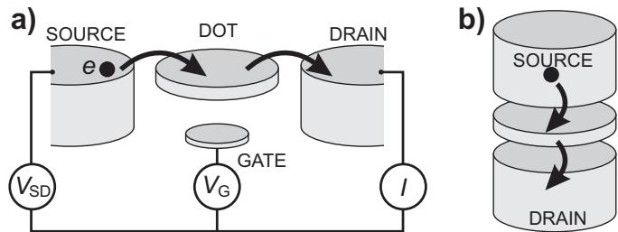
FIG. 1 Schematic picture of a quantum dot in (a) a lateral geometry and (b) in a vertical geometry. The quantum dot (represented by a disk) is connected to source and drain reservoirs via tunnel barriers, allowing the current through the device, I, to be measured in response to a bias voltage, and a gate voltage,
Because a quantum dot is such a general kind of system, there exist quantum dots of many diferent sizes and materials: for instance single molecules trapped between electrodes (Park et al., 2002), normal metal(Petta and Ralph, 2001), superconducting (von Delft and Ralph, 2001; Ralph et al., 1995) or ferromagnetic nanoparticles (Gu´eron et al., 1999), selfassembled quantum dots (Klein et al., 1996), semiconductor lateral (Kouwenhoven et al., 1997) or vertical dots (Kouwenhoven et al., 2001), and also semiconducting nanowires or carbon nanotubes (Bj¨ork et al., 2004; Dekker, 1999; McEuen, 2000).
The electronic properties of quantum dots are dominated by two efects. First, the Coulomb repulsion between the electrons on the dot leads to an energy cost for adding an extra electron to the dot. Due to this charging energy, tunneling of electrons to or from the reservoirs can be dramatically suppressed at low temperatures; this phenomena is called Coulomb blockade (van Houten et al., 1992). Second, the confinement in all three directions leads to quantum efects that strongly influence the electron dynamics. Due to the resulting discrete energy spectrum, quantum dots behave in many ways as artificial atoms (Kouwenhoven et al., 2001).
The physics of dots containing more than two electrons has been reviewed before (Kouwenhoven et al., 1997; Reimann and Manninen, 2002). Therefore, we focus on single and coupled quantum dots containing only one or two electrons. These systems are particularly important as they constitute the building blocks of proposed electron spin-based quantum information processors (Byrd and Lidar, 2002; DiVincenzo et al., 2000; Hanson and Burkard, 2007; Kyriakidis and Penney, 2005; Levy, 2002; Loss and DiVincenzo, 1998; Meier et al., 2003; Taylor et al., 2005; Wu and Lidar, 2002a,b).
B. Fabrication of gated quantum dots
The bulk of the experiments discussed in this review was performed on electrostatically defined quantum dots in GaAs. These devices are sometimes referred to as “lateral dots” because of the lateral gate geometry.
Lateral GaAs quantum dots are fabricated from heterostructures of GaAs and AlGaAs grown by molecular beam epitaxy, (see Fig. 2). By doping the AlGaAs layer with Si, free electrons are introduced. These accumulate at the GaAs/AlGaAs interface, typically 50-100 nm below the surface, forming a two-dimensional electron gas (2DEG) – a thin ( 10 nm) sheet of electrons that can only move along the interface. The 2DEG can have a high mobility and relatively low electron density (typically cm2/Vs and , respectively). The low electron density results in a large Fermi wavelength ( 40 nm) and a large screening length, which allows us to locally deplete the 2DEG with an electric field. This electric field is created by applying negative voltages to metal gate electrodes on top of the heterostructure (see Fig. 2a).
Electron-beam lithography enables fabrication of gate structures with dimensions down to a few tens of nanometers (Fig. 2), yielding local control over the depletion of the 2DEG with roughly the same spatial resolution. Small islands of electrons can be isolated from the rest of the 2DEG by choosing a suitable design of the gate structure, thus creating quantum dots. Finally, low-resistance (Ohmic) contacts are made to the 2DEG reservoirs. To access the quantum phenomena in GaAs gated quantum dots, they have to be cooled down to well below 1 K. All experiments that are discussed in this review are performed in dilution refrigerators with typical base temperatures of 20 mK.
In so-called vertical quantum dots, control over the number of electrons down to zero was already achieved in the 1990s (Kouwenhoven et al., 2001). In lateral gated dots this proved to be more dificult, since reducing the electron number by driving the gate voltage to more negative values tends to decrease the tunnel coupling to the leads. The resulting current through the dot can then become unmeasurably small before the few-electron regime is reached. However, by proper design of the surface gate geometry the decrease of the tunnel coupling can be compensated for.
In 2000, Ciorga et al. reported measurements on the first lateral few-electron quantum dot (Ciorga et al., 2000). Their device, shown in Fig. 2b, makes use of two types of gates specifically designed to have diferent functionalities. The gates of one type are big and largely enclose the quantum dot. The voltages on these gates mainly determine the dot potential. The other type of gate is thin and just reaches up to the barrier region. The voltage on this gate has a very small efect on the dot potential but it can be used to set the tunnel barrier. The combination of the two gate types allows the dot potential (and thereby electron number) to be changed over a wide range while keeping the tunnel rates high enough for measuring electron transport through the dot.
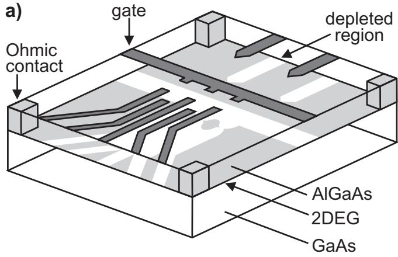
b)
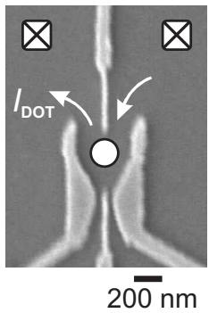
c)
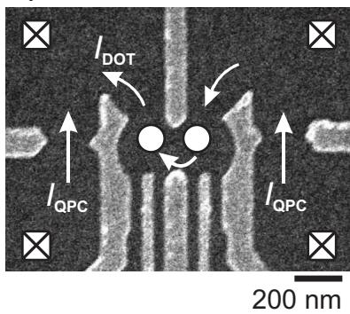
FIG. 2 Lateral quantum dot device defined by metal surface electrodes. (a) Schematic view. Negative voltages applied to metal gate electrodes (dark gray) lead to depleted regions (white) in the 2DEG (light gray). Ohmic contacts (light gray columns) enable bonding wires (not shown) to make electrical contact to the 2DEG reservoirs. (b)-(c) Scanning electron micrographs of a few-electron single-dot device (b) and a double-dot device (c), showing the gate electrodes (light gray) on top of the surface (dark gray). The white dots indicate the location of the quantum dots. Ohmic contacts are shown in the corners. White arrows outline the path of current IDOT from one reservoir through the dot(s) to the other reservoir. For the device in (c), the two gates on the side can be used to create two quantum point contacts, which can serve as electrometers by passing a current . Note that this device can also be used to define a single dot. Image in (b) courtesy of A. Sachrajda.
Applying the same gate design principle to a double quantum dot, Elzerman et al. demonstrated in 2003 control over the electron number in both dots while maintaining tunable tunnel coupling to the reservoir (Elzerman et al., 2003). Their design is shown in Fig. 2c (for more details on design considerations and related versions of this gate design, see Hanson (2005)). In addition to the coupled dots, two quantum point contacts are incorporated in this device to serve as charge sensors. The QPCs are placed close to the dots, thus ensuring a good charge sensitivity. This design has become the standard for lateral coupled quantum dots and is used with minor adaptions by several research groups (Petta et , 2004; Pioro-Ladri`ere et , 2005); one noticable improvement has been the electrical isolation of the charge sensing part of the circuit from the reservoirs that connect to the dot (Hanson et al., 2005).
C. Measurement techniques
In this review, two all-electrical measurement techniques are discussed: i) measurement of the current due to transport of electrons through the dot, and ii) detection of changes in the number of electrons on the dot with a nearby electrometer, so-called charge sensing. With the latter technique, the dot can be probed non-invasively in the sense that no current needs to be sent through the dot.
The potential of charge sensing was first demonstrated in the early 1990s (Ashoori et al., 1992; Field et al., 1993). But whereas current measurements were already used extensively in the first experiments on quantum dots (Kouwenhoven et , 1997), charge sensing has only recently been fully developed as a spectroscopic tool (Elzerman et , 2004a; Johnson et 2005a). Several implementations of electrometers coupled to a quantum dot have been demonstrated: a singleelectron transistor fabricated on top of the heterostructure (Ashoori et , 1992; Lu et , 2003), a second electrostatically defined quantum dot (Fujisawa et 2004; Hofmann et al., 1995) and a quantum point contact (QPC) (Field et , 1993; Sprinzak et al., 2002). The QPC is the most widely used because of its ease of fabrication and experimental operation. We discuss the QPC operation and charge sensing techniques in more detail in section V .
We briefly compare charge sensing to electron transport measurements. The smallest currents that can be resolved in optimized setups and devices are roughly 10 fA, which sets a lower bound of order 10 ≈ 100 kHz on the tunnel rate to the reservoir, for which transport experiments are possible (see e.g. Vandersypen et al. (2004) for a discussion on noise sources). For Γ < 100 kHz the charge detection technique can be used to resolve electron tunneling in real time. Because the coupling to the leads is a source of decoherence and relaxation (most notably via cotunneling), charge detection is preferred for quantum information purposes since it still functions for very small couplings to a (single) reservoir.
Measurements using either technique are conveniently understood with the Constant Interaction model. In the next section we use this model to describe the physics of single dots and show how relevant spin parameters can be extracted from measurements.
D. The Constant Interaction model
We briefly outline the main ingredients of the Constant Interaction model; for more extensive discussions see van Houten et al. (1992); Kouwenhoven et al. (2001, 1997). The model is based on two assumptions. First, the Coulomb interactions among electrons in the dot, and between electrons in the dot and those in the environment, are parameterized by a single, constant capacitance, C. This capacitance is the sum of the capacitances between the dot and the source, , the drain, , and the gate, . (In general, capacitances to multiple gates and other parts of the 2DEG will also play a role; they can simply be added to . The second assumption is that the single-particle energy level spectrum is independent of these interactions and therefore of the number of electrons. Under these assumptions, the total energy of a dot with N electrons in the ground state, with voltages and applied to the source, drain and gate respectively, is given by
\begin{array}{l} U (N) = \frac {[ - | e | (N - N _ {0}) + C _ {S} V _ {S} + C _ {D} V _ {D} + C _ {G} V _ {G} ] ^ {2}}{2 C} \\ + \sum_ {n = 1} ^ {N} E _ {n} (B) \end{array} \tag {1}\tag{1}where is the electron charge, is the charge in the dot compensating the positive background charge originating from the donors in the heterostructure, and B is the applied magnetic field. The terms and can be changed continuously and represent an efective induced charge that changes the electrostatic potential on the dot. The last term of Eq. 1 is a sum over the occupied single-particle energy levels, 2 which depend on the characteristics of the confinement potential.
The electrochemical potential of the dot is defined as:
where is the charging energy. The electrochemical potential contains an electrostatic part (first two terms) and a chemical part (last term). Here, denotes the transition between the N-electron ground state, and the -electron ground state, . When also excited states play a role, we have to use a more explicit notation to avoid confusion: the electrochemical potential for the transition between the -electron state and the N-electron state b is then denoted as , and is defined as the diference in total energy between state , and state
Note that the electrochemical potential depends linearly on the gate voltage, whereas the energy has a quadratic dependence. In fact, the dependence is the same for all N and the whole ‘ladder’ of electrochemical potentials can be moved up or down while the distance between levels remains constant 4. It is this property that makes the electrochemical potential the most convenient quantity for describing electron tunneling.
The electrochemical potentials of the transitions between successive ground states are spaced by the so-called addition energy:
The addition energy consists of a purely electrostatic part, the charging energy , plus the energy spacing between two discrete quantum levels, . Note that can be zero, when two consecutive electrons are added to the same spin-degenerate level.
Electron tunneling through the dot critically depends on the alignment of electrochemical potentials in the dot with respect to those of the source, , and the drain, The application of a bias voltage between the source and drain reservoir opens up an energy window between and of This energy window is called the bias window. For energies within the bias window, the electron states in one reservoir are filled whereas states in the other reservoir are empty. Therefore, if there is an ‘appropiate’ electrochemical potential level within the bias window, electrons can tunnel from one reservoir onto the dot and of to the empty states in the other reservoir. Here, ‘appropriate’ means that the electrochemical potential corresponds to a transition that involves the current state of the quantum dot.
In the following, we assume the temperature to be negligible compared to the energy level spacing ∆E (for GaAs dots this roughly means . The size of the bias window then separates two regimes: the lowbias regime where at most one dot level is within the bias window , and the high-bias regime where multiple dot levels can be in the bias window
E. Low-bias regime
For a quantum dot system in equilibrium, electron transport is only possible when a level corresponding to transport between successive ground states is in the bias window, i.e. for at least one value of N.
If this condition is not met, the number of electrons on the dot remains fixed and no current flows through the dot. This is known as Coulomb blockade. An example of such a level alignment is shown in Fig. 3a.
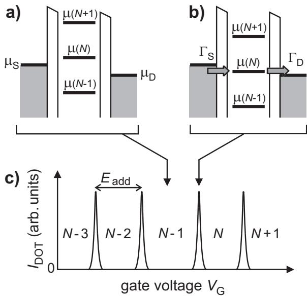
FIG. 3 (a)-(b)Schematic diagrams of the electrochemical potential levels of a quantum dot in the low-bias regime. (a) If no level in the dot falls within the bias window set by and the electron number is fixed at due to Coulomb blockade. (b) The level is in the bias window, so the number of electrons can alternate between and , resulting in a single-electron tunneling current. The magnitude of the current depends on the tunnel rate between the dot and the reservoir on the left, and on the right, (see Kouwenhoven et al. (1997) for details). (c) Schematic plot of the current through the dot as a function of gate voltage VG. The gate voltages where the level alignments of (a) and (b) occur are indicated.
Coulomb blockade can be lifted by changing the voltage applied to the gate electrode, as can be seen from Eq. 2. When is in the bias window one extra electron can tunnel onto the dot from the source (see Fig. 3b), so that the number of electrons increases from to N. After it has tunneled to the drain, another electron can tunnel onto the dot from the source. This cycle is known as single-electron tunneling.
By sweeping the gate voltage and measuring the current through the dot, IDOT, a trace is obtained as shown in Fig. 3c. At the positions of the peaks in , an electrochemical potential level corresponding to transport between successive ground states is aligned between the source and drain electrochemical potentials and a singleelectron tunneling current flows. In the valleys between the peaks, the number of electrons on the dot is fixed due to Coulomb blockade. By tuning the gate voltage from one valley to the next one, the number of electrons on the dot can be precisely controlled. The distance between the peaks corresponds to (see Eq. 4), and therefore provides insight into the energy spectrum of the dot.
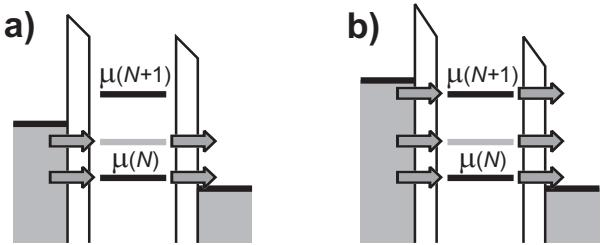
FIG. 4 Schematic diagrams of the electrochemical potential levels of a quantum dot in the high-bias regime. The level in grey corresponds to a transition involving an excited state. (a) Here, VSD exceeds and electrons can now tunnel via two levels. (b) exceeds the addition energy for N electrons, leading to double-electron tunneling.
F. High-bias regime
We now look at the regime where the source-drain bias is so high that multiple dot levels can participate in electron tunneling. Typically the electrochemical potential of only one of the reservoirs is changed in experiments, and the other one is kept fixed. Here, we take the drain reservoir to be at ground, i.e. . When a negative voltage is applied between the source and the drain, increases (since . The levels of the dot also increase, due to the capacitive coupling between the source and the dot (see Eq. 2). Again, a current can flow only when a level corresponding to a transition between ground states falls within the bias window. When is increased further such that also a transition involving an excited state falls within the bias window, there are two paths available for electrons tunneling through the dot (see Fig. 4a). In general, this will lead to a change in current, enabling us to perform energy spectroscopy of the excited states. How exactly the current changes depends on the tunnel coupling of the two levels involved. Increasing even more eventually leads to a situation where the bias window is larger than the addition energy (see Fig. 4b). Here, the electron number can alternate between N 1, N and , leading to a double-electron tunneling current.
We now show how the current spectrum as a function of bias and gate voltage can be mapped out. First, the electrochemical potentials of all relevant transitions are calculated by applying Eq. 3. For example, consider two successive ground states, GS(N) and , and the excited states and ES , which are separated from the GSs by and ) respectively (see Fig. 5a). The resulting electrochemical potential ladder is shown in Fig. 5b (we omit the transition between the two ESs). Note that the electrochemical potential of the transition is lower than that of the transition between the two ground states.
The electrochemical potential ladder is used to define the gate voltage axis of the plot, as in Fig. 5c. Here, each transition indicates the gate voltage at which its electrochemical potential is aligned with and at . Analogous to Fig. 3c-d, sweeping the gate voltage at low bias will show electron tunneling only at the gate voltage indicated by . For all other gate voltages the dot is in Coulomb blockade.
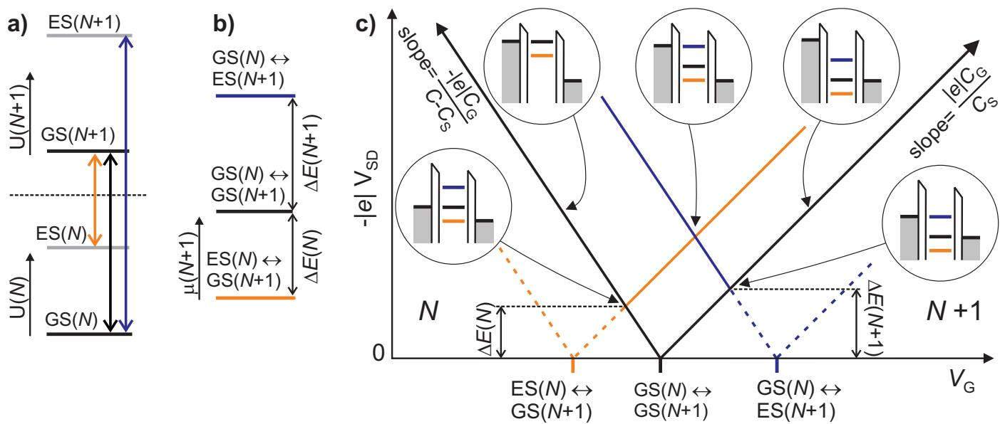
FIG. 5 (Color in online edition) (a) Energies for N electrons, U(N), and for N+1 electrons, U(N + 1). Possible transitions are indicated by arrows. (b) The electrochemical potential ladder for the transitions depicted in (a). (c) Schematic plot of the diferential conductance as a function and VG. At several positions the level alignment is indicated with schematic diagrams.
Next, for each transition a V-shaped region is outlined in the , where its electrochemical potential is within the bias window. This yields a plot like Fig. 5c. The slopes of the two edges of the V-shape depend on the capacitances; for 2 the two slopes and . The transition between the N-electron GS and the -electron GS (black solid line) defines the regions of Coulomb blockade (outside the V-shape) and tunneling (within the V-shape). The other solid lines indicate where the current changes due to the onset of transitions involving excited states.
The set of solid lines indicate all the values in the parameter space spanned by and where the current changes. Typically, the diferential conductance is plotted, which has a nonzero value only at the solid lines 5.
A general ‘rule of thumb’ for the positions of the lines indicating finite diferential conductance is this: if a line terminates at the N-electron Coulomb blockade region, the transition necessarily involves an N-electron excited state. This is true for any N. As a consequence, no lines terminate at the Coulomb blockade region where as there exist no excited state for For a transition between two excited states, say ES(N) and ES(N+1), the position of the line depends on the energy level spacing: for , the line terminates at the (N+ 1)-electron Coulomb blockade region, and vice versa.
A measurement as shown in Fig. 5c is very useful for finding the energies of the excited states. Where a line of a transition involving one excited state touches the Coulomb blockade region, the bias window exactly equals the energy level spacing. Figure 5c shows the level diagrams at these special positions for both ES(N) GS(N+ 1) and . Here, the level spacings can be read of directly on the
We briefly discuss the transition that was neglected in the discussion thus far. The visibility of such a transition depends on the relative magnitudes of the tunnel rates and the relaxation rates. When the relaxation is much faster than the tunnel rates, the dot will efectively be in its ground state all the time and the transition can therefore never occur. In the opposite limit where the relaxation is much slower than the tunneling, the transition ES(N) ES(N+1) participates in the electron transport and will be visible in a plot like in Fig. 5c. Thus, the visibility of transitions can give information on the relaxation rates between diferent levels (Fujisawa et al., 2002b).
If the voltage is swept across multiple electron transitions and for both signs of the bias voltage, the Coulomb blockade regions appear as diamond shapes in the . These are the well-known Coulomb diamonds.
III. SPIN SPECTROSCOPY METHODS
In this section, we discuss various methods for getting information on the spin state of the electrons on a quantum dot. These methods make use of various spindependent energy terms. First, each electron spin is influenced directly by an external magnetic field via the Zeeman energy where is the spin zcomponent. Moreover, the Pauli exclusion principle forbids two electrons with equal spin orientation to occupy the same orbital, thus forcing one of the electrons into a diferent orbital. This generally leads to a state with a diferent energy. Finally, the Coulomb interaction leads to an energy diference (the exchange energy) between states with symmetric and anti-symmetric orbital wavefunctions. Since the total wavefunction of the electrons is anti-symmetric, the symmetry of the orbital part is linked to that of the spin.
A. Spin filling derived from magnetospectroscopy
The spin filling of a quantum dot can be derived from the Zeeman energy shift of the Coulomb peaks in a magnetic field. (An in-plane magnetic field orientation is favored to ensure minimum disturbance of the orbital levels). On adding the Nth electron, the z-component of the spin on the dot is either increased by (if a spin-up electron is added) or decreased by (if a spindown electron is added). This change in spin is reflected in the magnetic field dependence of the electrochemical potential via the Zeeman term
As the g-factor in GaAs is negative (see Appendix addition of a spin-up electron results in decreasing with increasing . Spin-independent shifts of with B (e.g. due to a change in confinement potential) are removed by looking at the dependence of the addition energy on (Weis et 1993):
Assuming only changes by , the possible outcomes and the corresponding filling schemes are
where the first (second) arrow depicts the spin added in the electron transition. Spin filling of both vertical (Sasaki et , 1998) and lateral GaAs quantum dots (Duncan et , 2000; Lindemann et al., 2002; Potok et al., 2003) has been determined using this method, showing clear deviations from a simple “Pauli” filling (Sz alternating between 0 and . Note that transitions where of the ground state changes by more than which can occur due to many-body interactions in the dot, can lead to a spin blockade of the current (Korkusi´nski et al., 2004; Weinmann et al., 1995).
In circularly symmetric few-electron vertical dots, spin states have been determined from the evolution of orbital states in a magnetic field perpendicular to the plane of the dots. This indirect determination of the spin state has allowed the observation of a two-electron singlet-totriplet ground state transition and a four-electron spin filling following Hund’s rule. For a review on these experiments, see Kouwenhoven et al. (2001). Similar techniques were also used in experiments on fewelectron lateral dots in both weak and strong magnetic fields (Ciorga et al., 2000; Kyriakidis et al., 2002).
B. Spin filling derived from excited-state spectroscopy
Spin filling can also be deduced from excitedstate spectroscopy without changing the magnetic field (Cobden et al., 1998), provided the Zeeman energy splitting between spin-up and spin-down electrons can be resolved. This powerful method is based on the simple fact that any singleparticle orbital can be occupied by at most two electrons due to Pauli’s exclusion principle. Therefore, as we add one electron to a dot containing N electrons, there are only two scenarios possible: either the electron moves into an empty orbital, or it moves into an orbital that already holds one electron. As we show below, these scenarios always correspond to ground state filling with spin-up and spin-down, respectively.
First consider an electron entering an empty orbital with well-resolved spin splitting (see Fig. 6a). Here, addition of a spin-up electron corresponds to the transition . In contrast, addition of a spindown electron takes the dot from GS(N) to , which is higher in energy than ). Thus we expect a high-bias spectrum as in Fig. 6a.
Now consider the case where the (N + 1)th electron moves into an orbital that already contains one electron (see Fig. 6b). The two electrons need to have anti-parallel spins, in order to satisfy the Pauli exclusion principle. If the dot is in the ground state, the electron already present in this orbital has spin-up. Therefore, the electron added in the transition from GS(N) to must have spin-down. A spin-up electron can only be added if the first electron has spin-down, i.e. when the dot starts from ES(N), higher in energy than The high-bias spectrum that follows is shown schematically in Fig. 6b.
a)
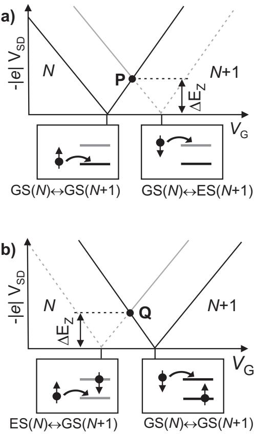
FIG. 6 Spin filling deduced from high-bias excited-state spectroscopy. Shown are schematic diagrams of in the (a) Ground-state filling is spin-up: a line corresponding to an (N+1)-electron ES, separated from by , terminates at the edge of the (N+1)- electron Coulomb blockade region (point P). (b) Ground-state filling is spin-down: a line corresponding to an N-electron ES, separated from by , terminates at the N-electron Coulomb blockade region (point Q).
Comparing the two scenarios, we see that the spin filling has a one-to-one correspondence with the excitedstate spectrum: if the spin ES line terminates at the )-electron Coulomb blockade region (as point P in , a spin-up electron is added to the GS; if however the spin ES line terminates at the N-electron Coulomb blockade region (as point Q in Fig. 6b), a spin-down electron is added to the GS.
The method is valid regardless of the spin of the ground states involved, as long as the addition of one electron changes the spin z-component of the ground state by . If , the -electron GS cannot be reached from the N-electron GS by addition of a single electron. This would cause a spin blockade of electron transport through the dot (Weinmann et al., 1995).
C. Other methods
If the tunnel rates for spin-up and spin-down are not equal, the amplitude of the current can be used to determine the spin filling. This method has been termed spin-blockade spectroscopy. This name is slightly misleading as the current is not actually blocked, but rather assumes a finite value that depends on the spin orientation of the transported electrons. This method has been demonstrated and utilized in the quantum Hall regime, where the spatial separation of spin-split edge channels induces a large diference in the tunnel rates of spinup and spin-down electrons (Ciorga et al., 2002, 2000; Kupidura et al., 2006). Spin-polarized leads can also be obtained in moderate magnetic fields by changing the electron density near the dot with a gate. This concept was used to perform spin spectroscopy on a quantum dot connected to gate-tunable quasi-one-dimensional channels (Hitachi et al., 2006).
Care must be taken when inferring the spin filling from the amplitude of the current as other factors, such as the orbital spread of the wavefunction, can have a large, even dominating influence on the current amplitude. A prime example is the diference in tunnel rate between the two-electron spin singlet and triplet states due to the diferent orbital wavefunctions of these states. In fact, this diference is large enough to allow single-shot readout of the two-electron spin state, as will be discussed in Section VI.C.
In zero magnetic field, a state with total spin S is -fold degenerate. This degeneracy is reflected in the current if the dot has strongly asymmetric barriers. As an example, in the transition from a one-electron state to a two-electron S=0 state, only a spin-up electron can tunnel onto the dot if the electron that is already on the dot is spin-down, and vice-versa. However, in the reverse transition , both electrons on the dot can tunnel of. Therefore, the rate for tunneling of the dot is twice the rate for tunneling onto the dot. In general, the ratio of the currents in opposite bias directions at the transition is, for spin-independent tunnel rates and for strongly asymmetric barriers, given by (Akera, 1999). Here, S(N) and denote the total spin of and respectively. This relation can be used in experiments to determine the ground state total spin (Cobden et al., 1998; Hayashi et al., 2003).
Information on the spin of the ground state can also be found from (inelastic) cotunneling currents (Kogan et al., 2004) or the current due to a Kondo resonance (Cronenwett et al., 1998; Goldhaber-Gordon et al., 1998). If a magnetic field B drives the onset of these currents to values of , it follows that the ground state has nonzero spin. Since the processes in these currents can change the spin z-component by at most 1, the absolute value of the spin can not be deduced with this method, unless the spin is zero.
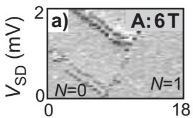
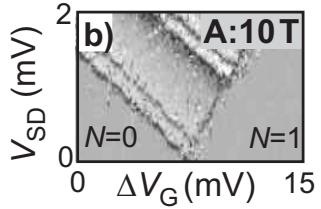
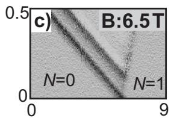
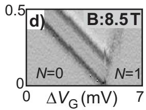
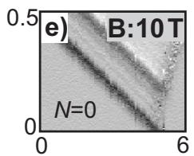
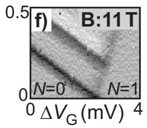
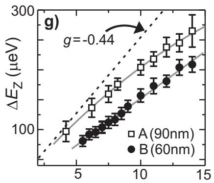
B (T)
FIG. 7 (a)-(f) Excited-state spectroscopy on two devices: device A is fabricated on a heterostructure with the 2DEG at 90 nm below the surface and device B with the 2DEG at 60 nm below the surface. Diferential conductance is plotted as a function of and gate voltage near the 0 1 electron transition, for in-plane magnetic fields (as indicated in top right corners). Darker corresponds to larger . Data on device A shows spin splitting in both the orbital ground and first excited state; data on device B only displays the orbital ground state. (g) Zeeman splitting as a function of B extracted from and similar measurements. Gray solid lines are fits to the data. The dashed line shows expected for the bulk GaAs g-factor of -0.44. Data adapted from Willems van Beveren et al. (2005); Hanson et al. (2003)
We end this section with some remarks on spin filling. First, the parity of the electron number can not be inferred from spin filling unless the sequence of spin filling is exactly known. For example, consider the case where the electron added in the transition has spin-down. Then, if the dot follows an alternating (Pauli) spin filling scheme, N is odd. However, if there is a deviation from this scheme such that GS(N) is a spin triplet state (total spin S=1), then N is even.
Second, spin filling measurements do not yield the absolute spin of the ground states, but only the change in ground state spin. However, by starting from zero electrons (and thus zero spin) and tracking the change in spin at subsequent electron transitions, the total spin of the ground state can be determined (Willems van Beveren et al., 2005).
IV. SPIN STATES IN A SINGLE DOT
A. One-electron spin states
The simplest spin system is that of a single electron, which can have one of only two orientations: spin-up or spin-down. Let and and denote the one-electron energies for the two spin states in the lowest (first excited) orbital. With a suitable choice of the zero of energy we arrive at the following electrochemical
potentials:
(9)
where is the orbital level spacing.
Figures 7a-f show excited-state spectroscopy measurements on two devices, A and B, via electron transport at the transition, at diferent magnetic fields applied in the plane of the 2DEG. A clear splitting of both the orbital ground and first excited state is observed, which increases with increasing magnetic field (Willems van Beveren et al., 2005; Hanson et al., 2003; K¨onemann et , 2005; Potok et al., 2003). The orbital level spacing in device A is about 1.1 meV. Comparison with Fig. 6 shows that a spin-up electron is added to the empty dot to form the one-electron ground state, as expected.
In Fig. 7g the Zeeman splitting is plotted as function of for the same two devices, A and B, which are made on diferent heterostructures. These measurements allow a straightforward determination of the electron g-factor. The measured g-factor can be afected by: (i) extension of the electron wave function into the region, where (Salis et al., 2001; Snelling et al., 1991), (ii) thermal nuclear polarization, which decreases the efective magnetic field through the hyperfine interaction (Meier and Zakharchenya, 1984), (iii) dynamic nuclear polarization due to electronnuclear flip-flop processes in the dot, which enhances the efective magnetic field (Meier and Zakharchenya, 1984), (iv) the nonparabolicity of the GaAs conduction band (Snelling et al., 1991), (v) the spin-orbit coupling (Falko et al., 2005), and (vi) the confinement potential (Bj¨ork et al., 2005; Hermann and Weisbuch, 1977). The efect of the nuclear field on the measured is discussed in more detail in Appendix A. More experiments are needed to separate these efects, e.g. by measuring the dependence of the g-factor on the orientation of the in-plane magnetic field with respect to the crystal axis (Falko et , 2005).
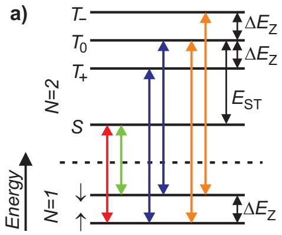
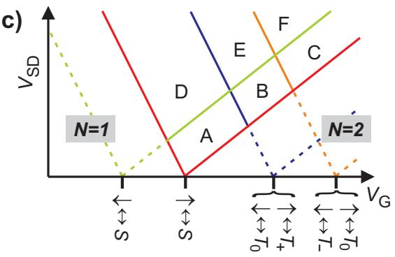
b)
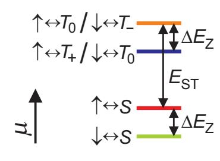
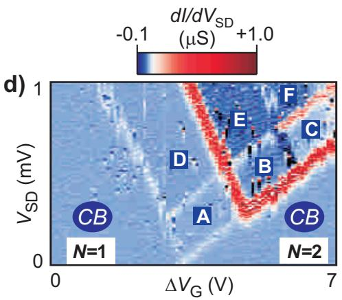
FIG. 8 (Color in online edition) (a) Energy diagram schematically showing the energy levels of the one- and two-electron states. The allowed transitions between these levels are indicated by arrows. (b) Electrochemical potential ladder corresponding to the transitions shown in (a), using the same color coding. Changing the gate voltage shifts the ladder as a whole. Note that the three triplet states appear at only two values of the electrochemical potential.(c) Energetically allowed electron transitions as a function of and . The lines corresponding to outline the region of transport; outside this region, where lines are dashed, the dot is in Coulomb blockade. (d) as a function of and around the 1 2 electron transition at in device A. The regions labelled with letters correspond well to those in (c). In the region labeled A only spin-down electrons pass through the dot. Data adapted from Hanson et al. (2004a).
B. Two-electron spin states
The ground state of a two-electron dot in zero magnetic field is always a spin singlet (total spin quantum number (Ashcroft and Mermin, 1974), formed by the two electrons occupying the lowest orbital with their spins anti-parallel: . The first excited states are the spin triplets , where the antisymmetry of the total two-electron wave function requires one electron to occupy a higher orbital. Both the antisymmetry of the orbital part of the wavefunction and the occupation of diferent orbitals reduce the Coulomb energy of the triplet states with respect to the singlet with two electrons in the same orbital (Kouwenhoven et 2001). We include this change in Coulomb energy by the energy term . The three triplet states are degenerate at zero magnetic field, but acquire diferent Zeeman energy shifts in finite magnetic fields because their spin z-components difer: for for and for
Using the Constant Interaction model, the energies of the states can be expressed in terms of the single-particle energies of the two electrons plus a charging energy which accounts for the Coulomb interactions:
with denoting the singlet-triplet energy diference in the absence of the Zeeman splitting
We first consider the case of an in-plane magnetic field Here, is almost independent of and the ground state remains a spin singlet for all fields attainable in the lab. The case of a magnetic field perpendicular to the plane of the 2DEG will be treated below.
Fig. 8a shows the possible transitions between the one-electron spin-split orbital ground state and the twoelectron states. The transitions and are omitted, since these require a change in the spin z-component of more than and are thus spin-blocked (Weinmann et , 1995). From the energy diagram the electrochemical potentials can be deduced (see Fig. 8b):
Note that and Consequently, the three triplet states change the firstorder transport through the dot at only two values of . The reason is that the first-order transport probes the energy diference between states with successive electron number. In contrast, the onset of second-order (cotunneling) currents is governed by the energy diference between states with the same number of electrons. Therefore, the triplet states change the second-order (cotunneling) currents at three values of if the ground state is a singlet 7 (Paaske et al., 2006).
In Fig. 8c we map out the positions of the electrochemical potentials as a function of and . For each transition, the two lines originating at span a V-shaped region where the corresponding electrochemical potential is in the bias window. In the region labeled only transitions between the one-electron ground state, , 0 , and the two-electron ground state, S , are possible, since only is positioned inside the bias window. In the other regions several more transitions are possible which leads to a more complex, but still understandable behavior of the current. Outside the V-shaped region spanned by the ground state transition , Coulomb blockade prohibits first order electron transport.
Experimental results from device shown in Fig. 8d, are in excellent agreement with the predictions of Fig. 8c. Comparison of the data with Fig. 6 indicates that indeed a spin-down electron is added to the one-electron (spin- ground state to form the two-electron singlet ground state. From the data the singlet-triplet energy diference is found to be . The fact that is about half the single-particle level spacing meV) indicates the importance of Coulomb interactions. The Zeeman energy, and therefore the g-factor, is found to be the same for the one-electron states as for the twoelectron states (within the measurement accuracy of on both device and B. We note that the large variation in diferential conductance observed in Fig. 8d, can be explained by a sequential tunneling model with spin- and orbital-dependent tunnel rates (Hanson et 2004b).
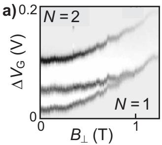
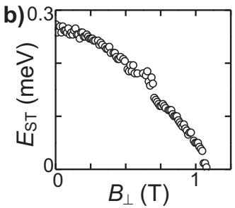
FIG. 9 Single-triplet ground state transition in a two-electron quantum dot. (a) Diferential conductance versus gate voltage, , and perpendicular magnetic field, Dark (light) corresponds to high (low) value for Within the stripe of finite conductance, set by the sourcedrain bias voltage, the evolution of the energy diference between the singlet state (ground state at zero field) and the triplet state is visible. At around 1.1 T the singlet and triplet states cross and the ground state becomes a spin triplet. (b) Energy diference between the singlet and the triplet states, , as a function of , extracted from (a). Data adapted from Kyriakidis et al. (2002).
By applying a large magnetic field perpendicular to the plane of the 2DEG a spin singlet-triplet ground state transition can be induced, see Fig. 9. This transition is driven by two efects: (i) the magnetic field reduces the energy spacing between the ground and first excited orbital state and (ii) the magnetic field increases the Coulomb interactions which are larger for two electrons in a single orbital (as in the singlet state) than for two electrons in diferent orbitals (as in a triplet state). Singlet-triplet transitions were first observed in vertical dots (Kouwenhoven et al., 2001; Su et al., 1992). In lateral dots, the gate-voltage dependence of the confinement potential has allowed electrical tuning of the singlet-triplet transition field (Kyriakidis et al., 2002; Zumb¨uhl et al., 2004).
In very asymmetric lateral confining potentials with large Coulomb interaction energies, the simple singleparticle picture breaks down. Instead, the two electrons in the ground state spin singlet in such dots will tend to avoid each other spatially, thus forming a quasi-double dot state. Experiments and calculations indicating this double-dot-like behaviour in asymmetric dots have been reported (Ellenberger et al., 2006; Zumb¨uhl et al., 2004).
C. Quantum dot operated as a bipolar spin filter
If the Zeeman splitting exceeds the width of the energy levels (which in most cases is set by the thermal energy), electron transport through the dot is (for certain regimes) spin-polarized and the dot can be operated as a spin filter (Hanson et al., 2004a; Recher et al., 2000). In particular, the electrons are spin-up polarized at the transition when only the one-electron spinup state is energetically accessible, as in Fig. 10a. At the transition, the current is spin-down polarized if no excited states are accessible (region A in Fig. 8c), see Fig. 10b. Thus, the polarization of the spin filter can be reversed electrically, by tuning the dot to the relevant transition.
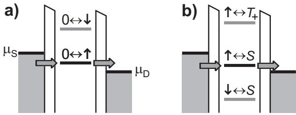
FIG. 10 Few-electron quantum dot operated as a bipolar spin filter. Schematic diagrams show the level arrangement for ground state transport at (a) the electron transition, where the dot filters for spin-up electrons, and (b) at the electron transition, where the dot only transmits spindown electrons.
Spectroscopy on dots containing more than two electrons has shown important deviations from an alternating spin filling scheme. Already for four electrons, a spin ground state with total spin in zero magnetic field has been observed in both vertical (Kouwenhoven et 2001) and lateral dots (Willems van Beveren et al., 2005).
V. CHARGE SENSING TECHNIQUES
The use of local charge sensors to determine the number of electrons in single or double quantum dots is a recent technological improvement that has enabled a number of experiments that would have been dificult, or impossible to perform using standard electrical transport measurements (Field et al., 1993). In this section, we briefly discuss relevant measurement techniques based on charge sensing. Much of the same information as found by measuring the current can be extracted from a measurement of the charge on the dot, , using a nearby electrometer, such as a quantum point contact In contrast to a measurement of the current through the dot, a charge measurement can be also used if the dot is connected to only one reservoir.
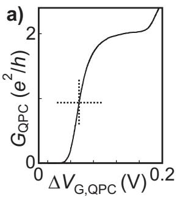
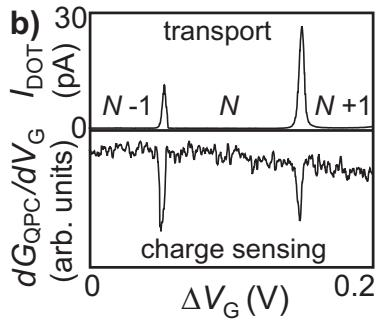
FIG. 11 Quantum point contact operated as an electrometer. A typical device, with the current paths through the dot and through the , is shown in Fig. 2c. (a) conductance vs. gate voltage on one of the two gates that defines the Halfway the last conductance step, at (indicated by a cross), the is very sensitive to the charge on the dot. (b) Direct comparison between current measurement (top panel) and charge sensing (bottom panel). Data adapted from Elzerman et al. (2003).
The conductance through a QPC is quantized (van Wees et al., 1988; Wharam et al., 1988). At the transitions between quantized conductance plateaus, is very sensitive to the electrostatic environment including the number of electrons N on a nearby quantum dot (see Fig. 11a). This property can be exploited to determine the absolute number of electrons in single (Sprinzak et al., 2002) and coupled quantum dots (Elzerman et al., 2003), even when the tunnel coupling is so small that no current through the dot is detected. Figure 11b shows measurements of the current and of over the same range of Dips in coincide with the current peaks, demonstrating the validity of charge sensing. The sign of is understood as follows. On increasing , an electron is added to the dot. The electric field created by this extra electron reduces the conductance of the QPC, and therefore dips. The sensitivity of the charge sensor to changes in the dot charge can be optimized using an appropriate gate design (Zhang et al., 2004).
We should mention here that charge sensing fails when the tunnel time is much longer than the measurement time. In this case, no change in electron number will be observed when the gate voltage is swept and the equilibrium charge can not be probed (Rushforth et , 2004). Note that a quantum dot with very large tunnel barriers can trap electrons for minutes or even hours under nonequilibrium conditions (Cooper et al., 2000). This again emphasizes the importance of tunable tunnel barriers (see Section II.B). Whereas the regime where the tunnel time largely exceeds the measurement time is of little interest for this review, the regime where the two are of the same order is actually quite useful, as we explain below.
We can get information on the dot energy level spectrum from measurements, by monitoring the average charge on the dot while applying short gate voltage pulses that bring the dot out of its charge equilibrium. This is the case when the voltage pulse pulls from above to below the electrochemical potential of the reservoir . During the pulse with amplitude , the lowest energy state is , whereas when the pulse is of , the lowest energy state is . If the pulse length is much longer than the tunnel time, the dot will efectively always be in the lowest-energy charge configuration. This means that the number of electrons fluctuates between and N at the pulse frequency. If, however, the pulse length is much shorter than the tunnel time, the equilibrium charge state is not reached during the pulse and the number of electrons will not change. Measuring the average value of the dot charge as a function of the pulse length thus yields information on the tunnel time. In between the two limits, i.e. when the pulse length is comparable to the tunnel time, the average value of the dot charge is very sensitive to changes in the tunnel rate.
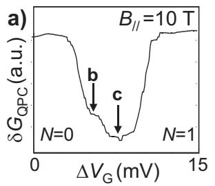
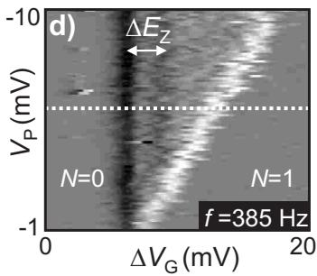
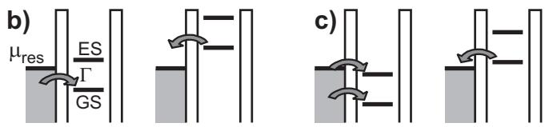
FIG. 12 Excited-state spectroscopy on a one-electron dot using charge sensing. (a) at Hz versus , with . Here, kHz. (b) Schematic electrochemical potential diagrams for the case that only the is pulsed across (c) Idem when both the and an ES are pulsed across (d) Derivative of with respect to plotted as a function of and . Note that here is negative, and therefore the region of tunneling extends to more positive gate voltage as is increased. The curve in (a) is taken at the dotted line. Data adapted from Elzerman et al. (2004a).
In this situation, excited-state spectroscopy can be performed by raising the pulse amplitude (Elzerman et al., 2004a; Johnson et , 2005a). For small pulse amplitudes, at most one level is available for tunneling on and of the dot, as in Fig. 12b. Whenever is increased such that an extra transition becomes energetically possible, the efective tunnel rate changes as in Fig.12c. This change is reflected in the average value of the dot charge and can therefore be measured using the charge sensor.
The signal-to-noise ratio is enhanced significantly by lock-in detection of at the pulse frequency, thus measuring the average change in when a voltage pulse is applied (Sprinzak et , 2002). We denote this quantity by . Figure 12a shows such a measurement of , lock-in detected at the pulse frequency, as a function of around the electron transition. The diferent sections of the dip correspond to Figs.12b and c as indicated, where GS (ES) is the electrochemical potential of the transition. Figure 12d shows a plot of the derivative of with respect to in the where the one-electron Zeeman splitting is clearly resolved. This measurement is analogous to increasing the source-drain bias in a transport measurement, and therefore leads to a similar plot as in Fig. 5, with replaced by and replaced by (Elzerman et al., 2004a; Fujisawa et 2002b).
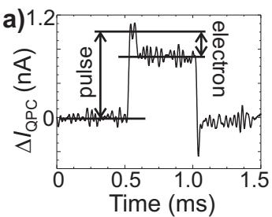
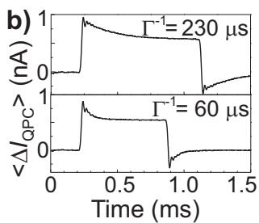
FIG. 13 (a) Measured changes in the QPC current, when a pulse is applied to a gate, near the degeneracy point between 0 and 1 electrons on the dot (bias voltage across the QPC is 1 mV). The pulse of positive voltage increases the QPC current due to the capacitive coupling between the pulsed gate and the QPC. Shortly after the start of the pulse, an electron tunnels onto the dot and the QPC current decreases. When the pulse has ended, the electron tunnels of the dot again. (b) Average of 286 traces as in . The top and bottom panel are taken with a diferent gate settings, and therefore diferent tunnel rates are observed. The damped oscillation following the pulse edges is due to the 8th-order 40 kHz filter used. Data adapted from Vandersypen et al. (2004).
The QPC response as a function of pulse length is a unique function of tunnel rate. Therefore, comparison of the obtained response function with the theoretical function yields an accurate value of the tunnel rate (Elzerman et , 2004a; Hanson, 2005). In a double dot, charge sensing can be used to quantitatively set the ratio of the tunnel rates (see Johnson et al. (2005b) for details), and also to observe the direction of tunnel events (Fujisawa et al., 2006b).
Electron tunneling can be observed in real time if the time between tunnel events is longer than the time needed to determine the number of electrons on the dot – or equivalently: if the bandwidth of the charge detection exceeds the tunnel rate and the signal from a single electron charge exceeds the noise level over that bandwidth (Lu et al., 2003; Schoelkopf et al., 1998). Figure 13a shows gate-pulse-induced electron tunneling in real time. In Fig. 13b, the average of many such traces is displayed; from the exponential decay of the signal the tunnel rate can be accurately determined.
Optimized charge sensing setups typically have a bandwidth that allows tunneling to be observed on a microsecond timescale (Fujisawa et al., 2004; Lu et al., 2003; Schleser et al., 2004; Vandersypen et al., 2004). If the relaxation of the electron spin occurs on a longer timescale, single-shot readout of the spin state becomes possible. This is the subject of the next section.
VI. SINGLE-SHOT READOUT OF ELECTRON SPINS
A. Spin-to-charge conversion
The ability to measure individual quantum states in a single-shot mode is important both for fundamental science and for possible applications in quantum information processing. Single-shot immediately implies that the measurement must have high fidelity (ideally 100%) since only one copy of the state is available and no averaging is possible.
Because of the tiny magnetic moment associated with the electron spin it is very challenging to measure it directly. However, by correlating the spin states to diferent charge states and subsequently measuring the charge on the dot, the spin state can be determined (Loss and DiVincenzo, 1998). This way, the measurement of a single spin is replaced by the measurement of a single charge, which is a much easier task. Several schemes for such a spin-to-charge conversion have been proposed (Engel et al., 2004; Friesen et al., 2004; Greentree et al., 2005; Ionicioiu and Popescu, 2005; Kane, 1998; Loss and DiVincenzo, 1998; Vandersypen et al., 2002). Two methods, both outlined in Fig. 14, have been experimentally demonstrated.
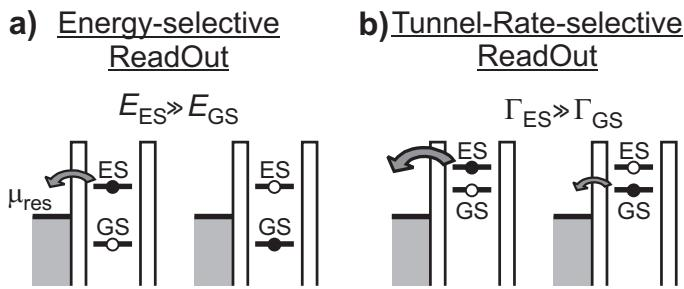
FIG. 14 Energy diagrams depicting two diferent methods for spin-to-charge conversion: (a) Energy-selective readout (E-RO) and (b) Tunnel-rate-selective readout (TR-RO).
In one method, a diference in energy between the spin states is used for spin-to-charge conversion. In this energy-selective readout (E-RO), the spin levels are positioned around the electrochemical potential of the reservoir (see Fig. 14a), such that one electron can tunnel of the dot from the spin excited state, ES , whereas tunneling from the ground state, GS , is energetically forbidden. Therefore, if the charge measurement shows that one electron tunnels of the dot, the state was ES , while if no electron tunnels the state was GS . This readout concept was pioneered by Fujisawa et al. in a series of transport experiments, where the measured current reflected the average state of the electron after a pulse sequence (see Fujisawa et al. (2006a) for a review). Using this pump-probe technique, the orbital relaxation time and a lower bound on the spin relaxation time in few-electron vertical and lateral dots was determined (Fujisawa et al., 2002a, 2001a,b; Hanson et al., 2003). A variation of E-RO can be used for reading out the two-electron spin states in a double dot (see Section VIII.B).
Alternatively, spin-to-charge conversion can be achieved by exploiting the diference in tunnel rates of the diferent spin states to the reservoir. We outline the concept of this tunnel-rate-selective readout (TR RO) in Fig. 14b. Suppose that the tunnel rate from ES to the reservoir, ΓES, is much higher than the tunnel rate from GS , ΓGS, i.e. . Then, the spin state can be read out as follows. At time the levels of both ES and GS are positioned far above , so that one electron is energetically allowed to tunnel of the dot regardless of the spin state. Then, at a time where an electron will have tunneled of the dot with a very high probability if the state was ES , but most likely no tunneling will have occurred if the state was GS . Thus, the spin information is converted to charge information, and a measurement of the number of electrons on the dot reveals the original spin state. The TR-RO can be used in a similar way if is much lower than Γ . A conceptually similar scheme has allowed single-shot readout of a superconducting charge qubit (Astafiev et al., 2004).
B. Single-shot spin readout using a diference in energy
Single-shot readout of a single electron spin has first been demonstrated using the E-RO technique (Elzerman et al., 2004b). In this section we discuss this experiment in more detail.
A quantum dot containing zero or one electrons is tunnel coupled to a single reservoir and electrostatically coupled to a QPC that serves as an electrometer. The electrometer can determine the number of electrons on the dot in about 10 The Zeeman splitting is much larger than the thermal broadening in the reservoir. The readout configuration therefore is as in Fig. 14a, with the transition as GS and the transition as ES . In the following, we will also use just and to denote these transitions.
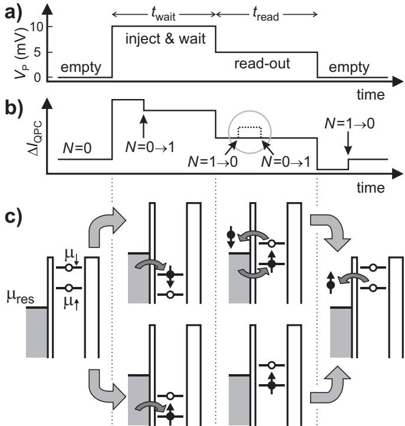
FIG. 15 Scheme for E-RO of a single electron spin. (a) Twolevel voltage pulse scheme. The pulse level is 10 mV during and 5 mV during (which is 0.5 ms for all measurements). (b) Schematic response of the QPC if the injected electron has spin- (solid line) or spin- (dotted line; the difference with the solid line is only seen during the read-out stage). Arrows indicate the moment an electron tunnels into or out of the quantum dot. (c) Energy diagrams for spin-up and spin-down during the diferent stages of the pulse. If the spin is up at the start of the read-out stage, no change in the charge on the dot occurs during . In contrast, if the spin is down, the electron can escape and be replaced by a spin-up electron.
To test the single-spin measurement technique, the following three-stage procedure is used: 1) empty the dot, 2) inject one electron with unknown spin, and 3) measure its spin state. The diferent stages are controlled by gate voltage pulses as in Fig. 15a, which shift the dot’s energy levels as shown in Fig. 15c. Before the pulse the dot is empty, as both the spin-up and spin-down levels are above the electrochemical potential of the reservoir Then a voltage pulse pulls both levels below . It is now energetically allowed for one electron to tunnel onto the dot, which will happen after a typical time That particular electron can have spin-up or spin-down as shown in the lower and upper diagram respectively. During this stage of the pulse, lasting , the electron is trapped on the dot and Coulomb blockade prevents a second electron to be added. After the voltage pulse is reduced, in order to position the energy levels in the readout configuration. If the electron has spin-up, its energy level is below so the electron remains on the dot. If the electron has spin-down, its energy level is above , so the electron tunnels to the reservoir after a typical time . Now Coulomb blockade is lifted and an electron with spin-up can tunnel onto the dot. Efectively, the spin on the dot has been flipped by a single electron exchange with the reservoir. After the pulse ends and the dot is emptied again.
The expected QPC-response, , to such a twolevel pulse is the sum of two contributions (Fig. 15b). First, due to a capacitive coupling between pulse-gate and will change proportionally to the pulse amplitude. Second, tracks the charge on the dot, i.e. it goes up whenever an electron tunnels of the dot, and it goes down by the same amount when an electron tunnels onto the dot. Therefore, if the dot contains a spin-down electron at the start of the readout stage, a characteristic step appears in during for spin-down (dotted trace inside grey circle). In contrast, is flat during for a spin-up electron. Measuring whether a step is present or absent during the readout stage constitutes the spin measurement.
Fig. 16a shows experimental traces of the pulseresponse at an in-plane field of 10 T. The expected two types of traces are indeed observed, corresponding to spin-up electrons (as in the top panel of . 16a), and spin-down electrons (as in the bottom panel of Fig. 16a). The spin state is assigned as follows: if crosses a threshold value (grey line in Fig. 16a), the electron is declared ‘spin-down’; otherwise it is declared ‘spin-up’.
As is increased, the number of ‘spin-down’ traces decays exponentially (see Fig. 16b), precisely as expected because of spin relaxation to the ground state. This confirms the validity of the spin readout procedure. The spin decay time is plotted as a function of B in the inset of Fig. 16b. The processes underlying the spin relaxation will be discussed in section VII.
The fidelity of the spin measurement is characterized by two error probabilities α and (see inset to Fig. 16c). Starting with a spin-up electron, there is a probability α that the measurement yields the wrong outcome Similarly, is the probability that a spin-down electron is mistakenly measured as . These error probabilities can be determined from complementary measurements (Elzerman et al., 2004b). Both α and depend on the value of the threshold as shown in Fig. 16c for data taken at 10 T. The optimal value of the threshold is the one for which the visibility is maximal (vertical line in Fig. 16c). For this setting, and , so the measurement fidelity for the spin-up and the spin-down state is 0.93 and 0.72 respectively. The measurement visibility in a single-shot measurement is thus 65%, and the fidelity is 82%. Significant improvements in the spin measurement visibility can be made by lowering the electron temperature (smaller α) and by making the charge measurement faster (smaller
The first all-electrical single-shot readout of an electron spin has thus been performed using E-RO. However, this scheme has a few drawbacks: (i) E-RO requires an energy splitting of the spin states larger than the thermal energy of the electrons in the reservoir. Thus, for a single spin the readout is only efective at very low electron temperature and high magnetic fields . Also, interesting efects occurring close to degeneracy, e.g. near the singlet-triplet crossing for two electrons, can not be probed. (ii) Since the E-RO relies on precise positioning of the spin levels with respect to the reservoir, it is very sensitive to fluctuations in the electrostatic potential. Background charge fluctuations (Jung et al., 2004) can easily push the levels out of the readout configuration. (iii) High-frequency noise can spoil the E-RO by inducing photon-assisted tunneling from the spin ground state to the reservoir (Onac et al., 2006). Since the QPC is a source of shot noise, this limits the current through the QPC and thereby the bandwidth of the charge detection (Vandersypen et al., 2004). These constraints have motivated the search for a diferent method for spin-tocharge conversion, and have led to the demonstration of the tunnel-rate-selective readout (TR-RO) which we treat in the next section.
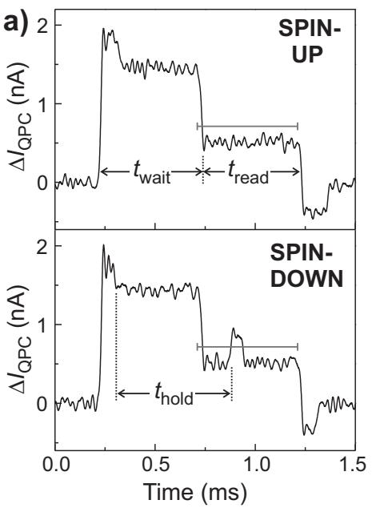
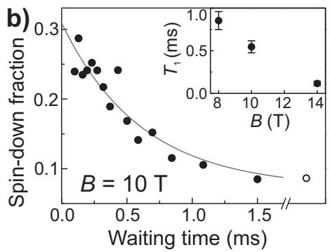
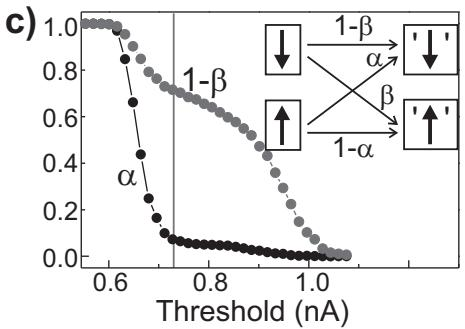
FIG. 16 Experimental results of single-shot readout of a single electron spin. (a) The two types of measurement outcomes, corresponding to a spin-up electron (upper panel) and spin-down electron (lower panel); see Fig. 15b for comparison. (b) Dependence of the fraction of spin-down electrons on the waiting time, showing a clear exponential decay. Red line is a fit to the data. Inset: the spin relaxation time as a function of B. (c) Determination of the readout fidelity. Inset: definition of the readout error probabilities α and Main figure: experimentally determined error probabilities at . At the vertical line, the visibility reaches a maximum of 65%. Data reproduced from Elzerman et al. (2004b).
C. Single-shot spin readout using a diference in tunnel rate
The main ingredient necessary for TR-RO is a spin dependence in the tunnel rates. To date, TR-RO has only been demonstrated for a two-electron dot, where the electrons are either in the spin-singlet ground state, denoted by S , or in a spin-triplet state, denoted by . In S , the two electrons both occupy the lowest orbital, but in one electron is in the first excited orbital. Since the wave function in this excited orbital has more weight near the edge of the dot (Kouwenhoven et al., 2001), the coupling to the reservoir is stronger than for the lowest orbital. Therefore, the tunnel rate from a triplet state to the reservoir is much larger than the rate from the singlet state , i.e. (Hanson et al., 2004b).
The TR-RO is tested experimentally in Hanson et al. (2005) by applying gate voltage pulses as depicted in Fig. 17a. Figure 17b shows the expected response of to the pulse, and Fig. 17c depicts the level diagrams in the three diferent stages. Before the pulse starts, there is one electron on the dot. Then, the pulse pulls the levels down so that a second electron can tunnel onto the dot , forming either a singlet or a triplet state with the first electron. The probability that a triplet state is formed is given by ), where the factor of 3 is due to the degeneracy of the triplets. After a variable waiting time the pulse ends and the readout process is initiated, during which one electron can leave the dot again. The rate for tunneling of depends on the two-electron state, resulting in the desired spin-to-charge conversion. Due to the direct capacitive coupling of the pulse gate to the channel, follows the pulse shape. Tunneling of an electron on or of the dot gives an additional step in as indicated by the arrows
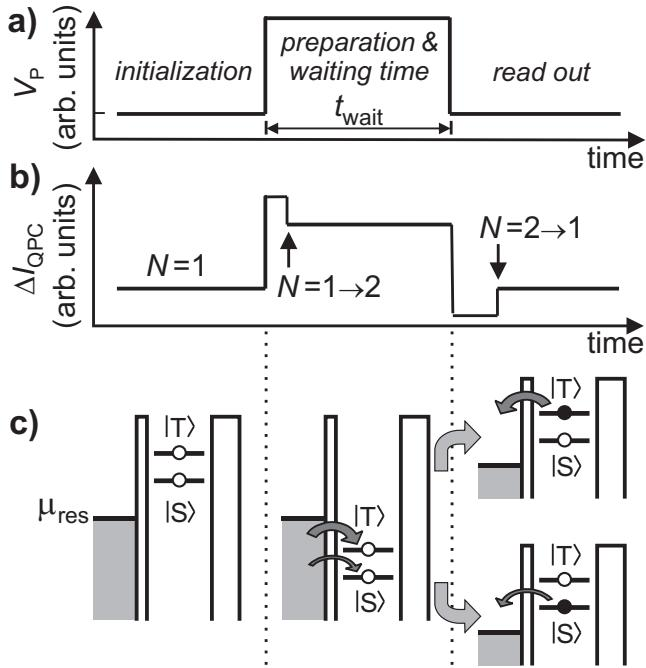
FIG. 17 Single-shot readout of two-electron spin states using TR-RO. (a) Voltage pulse waveform applied to one of the gate electrodes. (b) Response of the current to the waveform of (a). (c) Energy diagrams indicating the positions of the levels during the three stages. In the final stage, spin is converted to charge information due to the diference in tunnel rates for states S and T .
in Fig. 17b.
In the experiment, is tuned to 2.5 kHz, and is 50 kHz. The filter bandwidth is 20 kHz, and therefore many of the tunnel events from T are not resolved, but the tunneling from S is clearly visible. Figure 18a shows several traces of , from the last part (0.3 ms) of the pulse to the end of the readout stage (see inset), for a waiting time of 0.8 ms. In some traces, there are clear steps in , due to an electron tunneling of the dot. In other traces, the tunneling occurs faster than the filter bandwidth. In order to discriminate between S and T , the number of electrons on the dot is determined at the readout time (vertical dashed line in Fig. 18a) by comparing to a threshold value (as indicated by the horizontal dashed line in the bottom trace of Fig. 18a). If is below the threshold, it means and the state is declared . If is above the threshold, it follows that and the state is declared
To verify that and indeed correspond to the spin states T and S , the relative occupation probabilities are changed by varying the waiting time. As shown in Fig. 18b, the fraction of indeed decays exponentially as is increased, due to relaxation, as before. The error probabilities are found to be and 2 where α (β) is the probability that a measurement on the state yields the wrong outcome . The single-shot visibility is thus 81% and the fidelity is 90%.
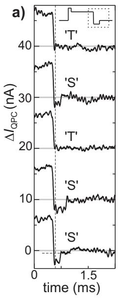
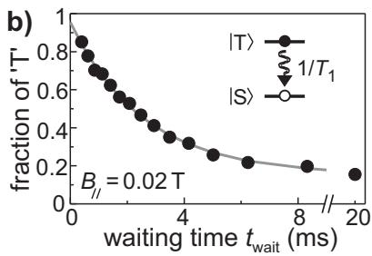
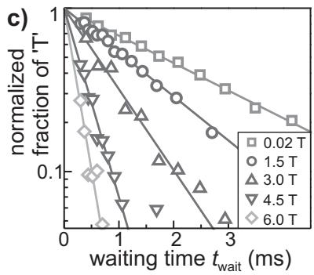
FIG. 18 (a) Real-time traces of during the last part of the waveform (dashed box in the inset), for ms. At the vertical dashed line, N is determined by comparison with a threshold (horizontal dashed line in bottom trace) and the spin state is declared accordingly. (b) Fraction of as a function of waiting time at T, showing a single-exponential decay with a time constant of 2.58 ms. (c) Normalized fraction of vs. for diferent values of The singlet-triplet splitting in this experiment is 1 meV. Data reproduced from Hanson et al. (2005).
These numbers agree very well with the values predicted by a simple rate-equation model (Hanson et al., 2005). Figure 18c shows data at diferent values of the magnetic field. These results are discussed in more detail in section VII.
A major advantage of the TR-RO scheme is that it does not rely on a large energy splitting between the spin states. Furthermore, it is robust against background charge fluctuations, since these cause only a small variation in the tunnel rates (of order in Ref. (Jung et al., 2004)). Finally, photon-assisted tunneling is not harmful since here tunneling is energetically allowed regardless of the initial spin state. Thus, TR-RO overcomes several constraints of E-RO. However, TR-RO can only be used if there exist state-dependent tunnel rates. In general, the best choice of readout method will depend on the specific demands of the experiment and the nature of the states involved.
It is interesting to think about a measurement protocol that would leave the spin state unafected, a so-called Quantum Non-Demolition (QND) measurement. With readout schemes that make use of tunneling to a reservoir as the ones described in this section, QND measurements are not possible because the electron is lost after tunneling; the best one can do in this case is to reinitialize the dot electrons to the state they were in before the tunneling occured (Meunier et al., 2006). However, by making the electron tunnel not to a reservoir, but to a second dot (Engel et , 2004; Engel and Loss, 2005), the electron can be preserved and QND measurements are in principle possible. One important example of such a scheme is the readout of double-dot singlet and triplet states using Pauli blockade that we will discuss in Section VIII.C.
VII. SPIN-INTERACTION WITH THE ENVIRONMENT
The magnetic moment of a single electron spin, , is very small. As a result, electron spin states are only weakly perturbed by their magnetic environment. Electric fields afect spins only indirectly, so generally spin states are only weakly influenced by their electric environment as well. One notable exception is the case of two-electron spin states – since the singlet-triplet splitting directly depends on the Coulomb repulsion between the two electrons, it is very sensitive to electric field fluctuations (Hu and Das Sarma, 2006) – but we will not discuss this further here.
For electron spins in semiconductor quantum dots, the most important interactions with the environment occur via the spin-orbit coupling, the hyperfine coupling with the nuclear spins of the host material and virtual exchange processes with electrons in the reservoirs. This last process can be eficiently suppressed by reducing the dot-reservoir tunnel coupling or creating a large gap between the eletrochemical potentials in the dot and in the lead (Fujisawa et , 2002a), and we will not further consider it in this section. The efect of the spin-orbit and hyperfine interactions can be observed in several ways. First, the spin eigenstates are redefined and the energy splittings are renormalized. A good example is the fact that the g-factor of electrons in bulk semiconductors can be very diferent from due to the spin-orbit interaction. In bulk GaAs, for instance, the factor is 0.44. Second, fluctuations in the environment can lead to phase randomization of the electron spin, by convention characterized by a time scale . Finally, electron spins can also be flipped by fluctuations in the environment, thereby exchanging energy with degrees of freedom in the environment. This process is characterized by a timescale
A. Spin-orbit interaction
1. Origin
The spin of an electron moving in an electric field experiences an internal magnetic field, proportional to where is the momentum of the electron. This is the case, for instance, for an electron “orbiting” about a positively charged nucleus. This internal magnetic field acting on the spin depends on the orbital the electron occupies, i.e. spin and orbit are coupled. An electron moving through a solid also experiences electric fields, from the charged atoms in the lattice. In crystals that exhibit bulk inversion asymmetry (BIA), such as in the zinc-blende structure of GaAs, the local electric fields lead to a net contribution to the spin-orbit interaction (which generally becomes stronger for heavier elements). This efect is known as the Dresselhaus contribution to the spin-orbit interaction(Dresselhaus, 1955; Dyakonov and Kachorovskii, 1986; Wrinkler, 2003).
In addition, electric fields associated with asymmetric confining potentials also give rise to a spin-orbit interaction (SIA or structural inversion asymmetry). This occurs for instance in a 2DEG formed at a GaAs/AlGaAs heterointerface. It is at first sight surprising that there is a net spin-orbit interaction: since the state is bound along the growth direction, the average electric field in the conduction band must be zero (up to a correction due to the efective mass discontinuity at the interface, which results in a small force that is balanced by a small average electric field). The origin of the net spin-orbit interaction lies in mixing with other bands, mainly the valence band, which contribute a non-zero average electric field (Pfefer, 1999; Wrinkler, 2003). Only in symmetric quantum wells with symmetric doping, these other contributions are zero as well. The spin-orbit contribution from SIA is known as the Rashba term (Bychkov and Rashba, 1984; Rashba, 1960).
2. Spin-orbit interaction in bulk and 2D
In order to get insight in the efect of the Dresselhaus spin-orbit interaction in zinc-blende crystals, we start from the bulk Hamiltonian (Dyakonov and Perel, 1972; Wrinkler, 2003),
where and z point along the main crystallographic directions, (100), (010) and (001).
In order to obtain the spin-orbit Hamiltonian in 2D systems, we integrate over the growth direction. For 2DEGs grown along the (001) direction, , and is a heterostructure dependent but fixed number. The Dresselhaus Hamiltonian then reduces to
The first two terms are the linear Dresselhaus terms and the last two are the cubic terms. Usually the cubic terms are much smaller than the linear terms, since due to the strong confinement along z. We then retain (Dresselhaus, 1955)
where depends on material properties and on . It follows from Eq. 13 that the internal magnetic field is aligned with the momentum for motion along (010), but is opposite to the momentum for motion along (100) (see Fig. 19a).
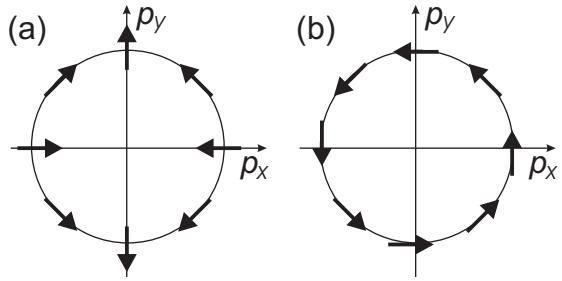
FIG. 19 The small arrows indicate the orientation of the apparent magnetic field acting on the electron spin as a result of the Dresselhaus and (b) the Rashba spin-orbit interaction when the electron travels through a GaAs crystal with momentum
Similarly, we now write down the spin-orbit Hamiltonian for the Rashba contribution. Assuming that the confining electric field is along the z-axis, we have
or
with α a number that is material-specific and also depends on the confining potential. Here the internal magnetic field is always orthogonal to the momentum (see Fig. 19b).
We point out that as an electron moves ballistically over some distance, l, the angle by which the spin is rotated, whether through Rashba or linear Dresselhaus spin-orbit interaction, is independent of the velocity with which the electron moves. The faster the electron moves, the faster the spin rotates, but the faster the electron travels over the distance l as well. In the end, the rotation angle is determined by l and the spin-orbit strength only. A useful quantity is the distance associated with a π rotation, known as the spin-orbit length, In GaAs, estimates for β vary from m/s to and it follows that the spin-orbit length, is 1 10µm, in agreement with experimentally measured values (Zumb¨uhl et al., 2002). The Rashba contribution can be smaller or larger than the Dresselhaus contribution, depending on the structure. From Fig. 19, we see that the Rashba and Dresselhaus contributions add up for motion along the (110) direction and oppose each other along (¯110), i.e. the spin-orbit interaction is anisotropic (K¨onemann et al., 2005).
In 2DEGs, spin-orbit coupling (whether Rashba or Dresselhaus) can lead to spin relaxation via several mechanisms (Zutic et al., 2004). The D’yakonov-Perel mechanism (Dyakonov and Perel, 1972; Wrinkler, 2003) refers to spin randomization that occurs when the electron follows randomly oriented ballistic trajectories between scattering events (for each trajectory, the internal magnetic field is diferently oriented). In addition, spins can be flipped upon scattering, via the Elliot-Yafet mechanism (Elliott, 1954; Yafet, 1963) or the Bir-Aronov-Pikus mechanism (Bir et al., 1976).
3. Spin-orbit interaction in quantum dots
From the semi-classical picture of the spin-orbit interaction, we expect that in 2D quantum dots with dimensions much smaller than the spin-orbit length lSO, the electron spin states will be hardly afected by the spinorbit interaction. We now show that the same result follows from the quantum-mechanical description, where the spin-orbit coupling can be treated as a small perturbation to the discrete orbital energy level spectrum in the quantum dot.
First, we note that stationary states in a quantum dot are bound states, for which . This leads to the important result that
where n and l label the orbitals in the quantum dot, and stands for the spin-orbit Hamiltonian, which consists of terms of the form both for the Dresselhaus and Rashba contributions. Thus, the spin-orbit interaction does not directly couple the Zeeman-split sublevels of a quantum dot orbital. However, the spin-orbit Hamiltonian does couple states that contain both diferent orbital and diferent spin parts(Khaetskii and Nazarov, 2000). As a result, what we usually call the electron spin states ‘spin-up’ and ‘spin-down’ in a quantum dot, are in reality admixtures of spin and orbital states (Khaetskii and Nazarov, 2001). When the Zeeman splitting is well below the orbital level spacing, the perturbed eigenstates can be approximated as
(the true eigenstates can be obtained via exact diagonalization (Cheng et al., 2004)). Here refers to the unperturbed spin splitting (in the remainder of the review, refers to the actual spin splitting, including all perturbations). The energy splitting between the spin-up and spin-down states will be renormalized accordingly, (de Sousa and Das Sarma, 2003c; Stano and Fabian, 2005) (see also Fig. 20(a)). In GaAs few-electron quantum dots, the measured g-factor in absolute value is usually in the range of , and is sometimes magnetic field dependent (see Fig. 7). A similar behavior of the g-factor was found in GaAs/AlGaAs 2DEGs (Dobers et al., 1988).
In contrast to single-electron spin states in a quantum dot, the lowest two-electron spin states, singlet and triplet, are coupled directly by the spinorbit interaction (except for and S, which are not coupled to lowest order in the spin-orbit interaction, due to spin selection rules (Climente et al., 2007; Dickmann and Hawrylak, 2003; Florescu and Hawrylak, 2006; Golovach et al., 2007; Sasaki et al., 2006)). This is not so surprising since the singlet and triplet states themselves involve diferent orbitals. Nevertheless, coupling to two-electron spin states composed of higher orbitals needs to be included as well, as their efect is generally not negligible (Climente et , 2007; Golovach et al., 2007). The leading order correction to the two-electron wavefunction is then given by
where is shorthand for the quantum numbers that label the orbital for each of the two electrons. It can be seen from inspection of the spin-orbit Hamiltonian and the form of the wavefunctions that many of the matrix elements in these expressions are zero. A more detailed discussion is beyond the scope of this review but can be found in Climente et al. (2007); Golovach et al. (2007).
4. Relaxation via the phonon bath
Electric fields cannot cause transitions between pure spin states. However, we have seen that the spin-orbit interaction perturbs the spin states and the eigenstates become admixtures of spin and orbital states, see Eqs. 17- 21. These new eigenstates can be coupled by electric fields (see Fig. 20), and electric field fluctuations can lead to spin relaxation (Khaetskii and Nazarov, 2000, 2001; Woods et al., 2002). As we will see, this indirect mechanism is not very eficient, and accordingly, very long spin relaxation times have been observed experimentally (Amasha et al., 2006; Elzerman et al., 2004b; Fujisawa et al., 2002a, 2001b; Hanson et al., 2005, 2003;
Kroutvar et al., 2004; Meunier et al., 2007; Sasaki et al., 2006).
In general, fluctuating electric fields could arise from many sources, including fluctuations in the gate potentials, background charge fluctuations or other electrical noise sources (Borhani et al., 2006; Marquardt and Abalmassov, 2005). However, as we shall see, it appears that in carefully designed measurement systems, the electric field fluctuations of these extraneous noise sources is less important than those caused by the phonon bath. Phonons can produce electric field fluctuations in two ways. First, so-called deformation potential phonons inhomogeneously deform the crystal lattice, thereby altering the bandgap in space, which gives rise to fluctuating electric fields. This mechanism occurs in all semiconductors. Second, in polar crystals such as GaAs, also homogeneous strain leads to electric fields, through the piezo-electric efect (piezo-electric phonons).
The phonon-induced transition rate between the renormalized states and is given by Fermi’s golden rule (an analogous expression can be derived for relaxation from triplet to singlet states, or between other spin states):
where is the phonon density of states at energy E. is the electron-phonon coupling Hamiltonian, given by
where is a measure of the electric field strength of a phonon with wavevector and phonon branch (one longitudinal and two transverse modes), ~r is the position vector of the electron and and are the phonon creation and annihilation operators respectively.
The relaxation rate thus depends on the phonon density of states at the spin-flip energy (the phonons have to carry away the energy), and on how strongly the electronphonon coupling connects the spin-orbit perturbed spin states (see Eq. 22). The latter in turn depends on (i) the degree of admixing between spin and orbital states (see Eqs. 17- 18), (ii) the electric field strength of a single phonon , (iii) the efectiveness of phonons at coupling diferent dot orbitals, via , and (iv) the phonon occupation, via . In addition, (v), we will see that an external magnetic field is necessary for spin relaxation to occur. We next discuss each of these elements separately, starting with the density of states.
The phonons are taken to be bulk phonons in most discussions of relaxation in GaAs quantum dots. This may not be fully accurate since the dot is formed at a heterointerface, and furthermore is in close vicinity to the surface (e.g. surface acoustic waves have also been observed to couple to dots, when explicitly excited (Naber et al.,
(a)
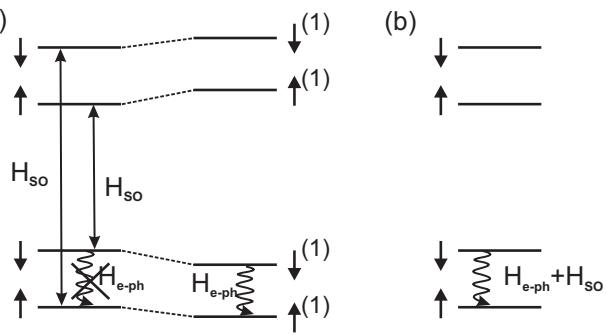
FIG. 20 Two views on spin relaxation due to the spin-orbit interaction and the phonon bath. (a) The electron phonon interaction doesn’t couple pure spin states, but it does couple the spin-orbit perturbed spin states, labeled with superscripts . Here and are treated sequentially (although they don’t commute). (b) The combined electron-phonon and spin-orbit Hamiltonian couples pure spin states.
2006)). Nevertheless, this simplification has worked reasonably well so far for explaining observations of relaxation in dots (Amasha et al., 2006; Fujisawa et , 1998; Kroutvar et al., 2004; Meunier et al., 2007). In what follows, we therefore consider bulk phonons only. Furthermore, we only include acoustic phonons, as the energies for optical phonons are much higher than typical spinflip energies (Ashcroft and Mermin, 1974). Since bulk acoustic phonons have a linear dispersion relation at low energies (Ashcroft and Mermin, 1974), the phonon density of states increases quadratically with energy.
(i) The degree of admixing between spin and orbitals obviously scales with the spin-orbit coupling parameters, α and β. Since the spin-orbit interaction is anisotropic (α and β can add up or cancel out depending on the magnetic field orientation with respect to the crystal axis), the admixing and hence the relaxation rate are anisotropic as well (Falko et al., 2005). Furthermore, the admixing depends on how close together in energy the relevant orbitals are (see Eqs. 17- 21). At an avoided crossing of two levels caused by the spin-orbit interaction, the admixing will be complete (Bulaev and Loss, 2005; Stano and Fabian, 2005, 2006).
(ii) The electric field associated with a single phonon scales as for piezo-electric phonons and as for deformation potential phonons, where is the phonon wavenumber. This diference can be understood from the fact that small phonon energies correspond to long wavelengths, and therefore nearly homogeneous crystal strain, which can only create electric fields through the piezo-electric efect. At suficiently small energies (below 0.6 meV in , the efect of piezo-electric phonons thus dominates over the efect of deformation potential phonons. As the phonon energy increases, deformation potential phonons become more important than piezoelectric phonons.
(iii) How efectively diferent orbitals are coupled by phonons, i.e. the size of the matrix element , depends on the phonon wavelength and the dot size (Bockelmann, 1994) (this matrix element is obtained when substituting Eqs. 17- 18 into Eq. 22). In the speed of sound is of the order of 4000 , so the phonon wavelength is , which gives nm for a 1 meV phonon. For phonon wavelengths much shorter than the dot size (phonon energies much larger than a few hundred , the electron-phonon interaction is averaged away (the matrix element vanishes). Also for phonon wavelengths much longer than the dot size, the electron-phonon coupling becomes ineficient, as it just shifts the entire dot potential uniformly up and down, and no longer couples diferent dot orbitals to each other (this is the regime where the often-used dipole approximation applies, where the matrix element nl is taken to be . When the phonon wavelength is comparable to the dot size, the phonons can most eficiently couple the orbitals, and spin relaxation is fastest (Bulaev and Loss, 2005; Golovach et al., 2004; Woods et al., 2002). This role of the phonon wavelength (convoluted with the other efects discussed in this section) has been clearly observed experimentally, see Fig. 21.
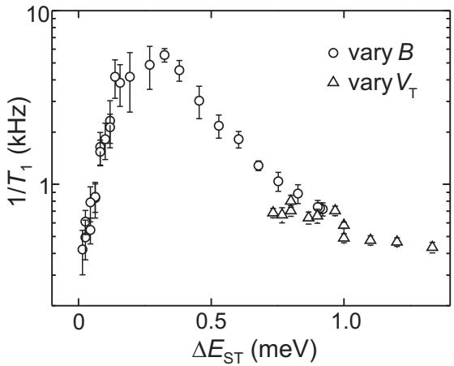
FIG. 21 The relaxation rate from two-electron triplet to singlet states, as a function of the singlet-triplet energy splitting (measured with TR-RO, see section VI.C). The relaxation rate shows a maximum when the wavelength of the phonons with the right energy matches the size of the dot. The energy splitting was varied by a magnetic field with a component perpendicular to the 2DEG (circles) and via the gate voltages that control the dot potential landscape (triangles). We note that the relaxation rate goes down near the singlettriplet crossing (because of the long phonon wavelength and vanishing phonon density of states), even though the spinorbit admixing of singlet and triplet is maximum here. Data reproduced from Meunier et al. (2007).
(iv) A finite phonon occupation leads to stimulated emission. This is accounted for by multiplying the relaxation rate by a factor is given by the Bose-Einstein distribution, and can be approximated by when
(v) The last necessary ingredient for spin-orbit induced spin relaxation is a finite Zeeman splitting. Without Zeeman splitting, the various terms that are obtained when expanding 22 using Eqs. 17- 18 cancel out (Khaetskii and Nazarov, 2001) (this is known as van Vleck cancellation; it is a consequence of Kramer’s theorem). A similar cancellation occurs for spin states of two or more electrons. We can understand the need for a magnetic field intuitively from the semiclassical discussion of the spin-orbit interaction in Section VII.A.2. A phonon produces an electric field that oscillates along a certain axis, and this electric field will cause an electron in a quantum dot to oscillate along the same axis. In the absence of any other terms in the Hamiltonian acting on the electron spin, the spin-orbit induced rotation that takes place during half a cycle of the electric field oscillation will be reversed in the next half cycle, so no net spin rotation takes place. This is directly connected to the fact that the spin-orbit interaction obeys time-reversal symmetry. In contrast, in the presence of an external magnetic field, the spin rotation (about the sum of the external and spin-orbit induced magnetic field) during the first half period doesn’t commute with the spin rotation during the second half period, so that a net spin rotation results. Theory predicts that this efect leads to a dependence of the relaxation rate (Bulaev and Loss, 2005; Golovach et , 2007; Khaetskii and Nazarov, 2001). A clear dependence was indeed seen experimentally, see Fig. 22.
When two phonons are involved, a net spin rotation can be obtained even at zero field. Here, the electron will in general not just oscillate back and forth along one line, but instead describe a closed trajectory in two dimensions. Since the spin rotations induced during the various legs along this trajectory generally don’t commute, a net rotation results (San-Jose et al., 2006). Such two-phonon relaxation processes become relatively more imporant at very low magnetic fields, where single-phonon relaxation becomes very ineficient (Khaetskii and Nazarov, 2001; San-Jose et al., 2006) (Fig. 22).
Putting all these elements together, we can predict the dependence of the relaxation rate beween Zeeman split sublevels of a single electron as follows. First, the phonon density of states increases with . Next, the electric field amplitude from a single phonon scales as for deformation potential phonons and as for piezo-electric phonons. Furthermore, for up to a few Tesla, is well below the cross-over point where the dot size matches the phonon energy (several 100 , so we are in the long-wavelength limit, where the matrix element nl scales as . Finally, due to the efect of the Zeeman splitting, the matrix element in Eq. 22 picks up another factor of (assuming only singlephonon processes are relevant). Altogether, and taking into account that the rate is proportional to the matrix element squared, is predicted (at low temperature) to vary with for coupling to piezo-electric phonons (Khaetskii and Nazarov, 2001), and as for coupling to deformation potential phonons. At high temperature, there is an extra factor of
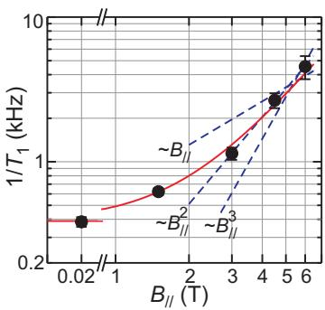
FIG. 22 (Color in online edition) Relaxation rate between the two-electron triplet and singlet states in a single dot, as a function of in-plane magnetic field . The in-plane magnetic field doesn’t couple to the orbitals and therefore hardly modifies the triplet-singlet energy splitting meV, whereas the Zeeman splitting is only in GaAs quantum dots). Nevertheless, and as expected, the experimentally measured rate at first markedly decreases as decreases, before saturating as approaches zero and two-phonon relaxation mechanisms set in. The solid line is a second-order polynomial fit to the data. For comparison, lines with linear, quadratic, and cubic dependences are shown. The data are extracted from Fig. 18c and are reproduced from (Hanson et , 2005)
We can similarly work out the dependence on the dot size, l, or equivalently, on the orbital level spacing, (in single dots, can only be tuned over a small range, but in double dots, the splitting between bonding and antibonding orbitals can be modified over several orders of magnitudes (Wang and 2006)). The degree of admixing of spin and orbital states by contributes a factor to the rate via the numerator in Eqs. 17- 18 and another factor of via (the dominant part in the denominator in Eqs. 17- 18). Taking the long-wavelength limit as before, nl contributes a factor . We thus arrive at
In summary, the relaxation rate from spin down to spin up (for an electron in the ground state orbital of a quantum dot) scales as
at temperatures low compared to , and as
at temperatures much higher than
Experimentally measured values for between Zeeman sublevels in a one-electron GaAs quantum dot are shown in Fig. 23. The relaxation times range from 120 at 14 T to 170 ms at 1.75 T, about 7 orders of magnitude longer than the relaxation rate between dot orbitals (Fujisawa et al., 2002a). The expected dependence of is nicely observed over the applicable magnetic field range. A similar dependence was observed in optically measured quantum dots (Kroutvar et al., 2004). In that system, the temperature dependence of was also verified (Heiss et al., 2005). There are no systematic experimental studies yet of the dependence on dot size.
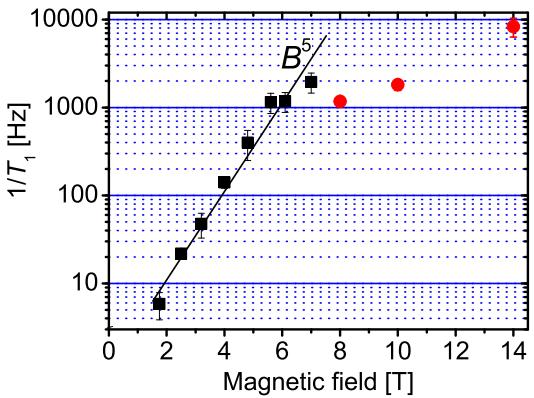
FIG. 23 (Color in online edition) Relaxation rate between the Zeeman split sublevels of the ground state orbital in a quantum dot (measured with E-RO, see section VI.B). The square data points are taken from Amasha et al. (2006); the round datapoints are reproduced from Elzerman et al. (2004b). The fact that the two datasets don’t connect is explained by a possible diference in orbital spacing, crystal orientation etc. For comparison, a solid line with a dependence is shown.
So far we have first considered the efect of on the eigenstates and then looked at transitions between these new eigenstates, induced by ). We point out that it is also possible to calculate the matrix element between the unperturbed spin states directly, for and together, for instance as
for Zeeman split states of a single orbital (Fig. 20(b)).
Finally, we remark that whereas at first sight phonons cannot flip spins by themselves as there are no spin operators in the phonon Hamiltonian, , this is not strictly true. Since phonons deform the crystal lattice, the g-tensor may be modulated, and this can in fact lead to electron spin flips directly (when phonons modulate only the magnitude of the g-factor but not the anisotropy of the g-tensor, the electron spin phase gets randomized without energy exchange with the bath (Semenov and Kim, 2004)). Furthermore, the electron spin could flip due to the direct relativistic coupling of the electron spin to the electric field of the emitted phonon. However, both mechanisms have been estimated to be much less eficient than the mechanism via admixing of spin and orbitals by the spin-orbit interaction (Khaetskii and Nazarov, 2000, 2001).
5. Phase randomization due to the spin-orbit interaction
We have seen that the phonon bath can induce transitions between diferent spin-orbit admixed spin states, and absorb the spin flip energy. Such energy relaxation processes (described by a time constant ) unavoidably also lead to the loss of quantum coherence (described by a time constant . In fact, by definition
Remarkably, in leading order in the spin-orbit interaction, there is no pure phase randomization of the electron spin, such that in fact (Golovach et al., 2004). For a magnetic field perpendicular to the plane of the 2DEG, this can be understood from the form of the spin-orbit Hamiltonian. Both the Dresselhaus contribution, Eq. 13, and the Rashba contribution, Eq. 15, only contain and terms. With B along ˆz, these terms lead to spin flips but not to pure phase randomization. However, this intuitive argument doesn’t capture the full story: for along ˆx, one would expect the term to contribute to pure phase randomization, but surprisingly, in leading order in the spin-orbit interaction, there is still no pure randomization even with an in-plane magnetic field (Golovach et al., 2004).
B. Hyperfine interaction
1. Origin
The spin of an electron in an atom can interact with the spin of atomic nucleus through the hyperfine coupling. An electron spin in a quantum dot, in contrast, may interact with many nuclear spins in the host material (Fig. 24). The Hamiltonian for the Fermi contact hyperfine interaction is then given by
where and are the spin operator for nucleus k and the electron spin respectively (Abragam, 1961; Abragam and Bleaney, 1986; Meier and Zakharchenya, 1984; Slichter, 1990). Since the electron wavefunction is inhomogeneous, the coupling strength, , between each nucleus k and the electron spin varies, as it is proportional to the overlap squared between the nucleus and the electron wavefunction.
This asymmetric situation combined with fast electron spin dynamics and slow nuclear spin dynamics, gives rise to a subtle and complex many-body quantum mechanical behavior, whereby the nuclear spins afect the electron spin time evolution, and the electron spin in turn acts back on the dynamics of each of the nuclei.
Since both the nuclear spins and the localized electron spin are quantum objects, the hyperfine coupling could in principle create entanglement between them (if both the electron spin and the nuclear spins had a sufficiently pure initial state, see Braunstein et al. (1999). For the electron spin, this interaction with uncontrolled degrees of freedom in the environment leads to decoherence (Coish and Loss, 2004; Khaetskii et al., 2002, 2003; Merkulov et al., 2002). This implies that an electron spin starting of in a pure state will evolve to a statistical mixture of several states, i.e. to one of several states, each with some probability (Nielsen and Chuang, 2000).
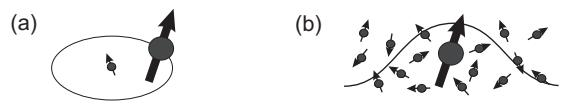
FIG. 24 One electron spin interacts with (a) a single nuclear spin in an atom, versus (b) many nuclear spins in a semiconductor quantum dot.
An alternative and very useful description of the efect of the nuclei on the electron spin, is to treat the ensemble of nuclear spins as an apparent magnetic field, . This nuclear field, also known as the Overhauser field, acts on the electron spin much like an external magnetic field:
When this nuclear field assumes a random, unknown value, the electron spin will subsequently evolve in a random way and thus end up in a statistical mixture of states as well, just like in the quantum mechanical description.
The semiclassical description of the nuclear spins yields an intuitive picture of the electron-nuclear dynamics and is suficient to explain all the experimental observations discussed in this review. However, we note that the full quantum description is required to analyze the correlations between the microscopic nuclear spin states and the single electron spin state, as e.g. in a study of the entanglement between electron and nuclear spins.
The magnitude of the nuclear field, is maximum when all nuclear spins Pare fully polarized. In GaAs, is about 5 T (Paget et al., 1977). For any given host material, this value is independent of the number of nuclei, N, that the electron overlaps with – for larger numbers of nuclei, the contribution from each nuclear spin to is smaller (the typical value for is proportional to
This is distinctly diferent in the case of (nearly) unpolarized nuclear spins, for instance nuclear spins in thermodynamic equilibrium under typical experimental conditions. First there is a small average nuclear polarization, oriented along the external magnetic field and with an amplitude given by the Boltzman distribution (see Appendix A). In addition, there is a statistical fluctuation about the average, analogous to the case of N coin tosses. For an electron spin interacting with N nuclear spins , the root mean square value of the statistical fluctuation will be T (Khaetskii et al., 2002; Merkulov et al., 2002). This quantity has recently been measured in various semiconductor quantum dots, both optically (Braun et al., 2005; Dutt et al., 2005) and electrically (Johnson et al., 2005c; Koppens et al., 2005), giving values in the range of a few mT, as expected since in these dots. Similar values were obtained earlier for electrons bound to shallow donors in GaAs (Dzhioev et al., 2002).
A few comments on the importance of the host material are in order. First, the value of is typically smaller for lighter nuclei. Second, for particles in p-like orbitals, such as holes in the wavefunction has almost no overlap with the nuclei (only s orbitals have a finite amplitude at the nucleus), so the Fermi contact hyperfine coupling constant, , will be very small. Third, if a fraction x of the nuclei in the host material has zero nuclear spin, is scaled down with a factor . The number of nuclei contributing to the statistical fluctuations in the nuclear field also scales down by . As a result, the r.m.s. value of the nuclear field scales with While in GaAs, a fraction of the nuclei is non-magnetic in natural silicon, and in carbon . Furthermore, both for silicon and carbon, purification to nearly 100% zero-spin isotopes is possible, so really small nuclear fields can be obtained
Finally, we point out that since the r.m.s. value of the statistically fluctuating hyperfine field scales with ， it is much stronger for electrons localized in dots or bound to impurities than for electrons with extended wavefunctions, for instance in 2DEGs, where the electron wavefunction overlaps with a very large number of nuclei. This is in sharp contrast to the efect of the spin-orbit interaction, which becomes suppressed when the electron is confined to dimensions shorter than the spin-orbit length, such as in small quantum dots.
2. Efect of the Overhauser field on the electron spin time evolution
The electron spin will precess about the vector of the total magnetic field it experiences, here the vector sum of the externally applied magnetic field and the nuclear field . The longitudinal component of , i.e. the component oriented parallel or opposed to , directly changes the precession frequency by , irrespective of the strength . Throughout this section, we shall call the longitudinal component For mT, the precession rate is increased by about 6 MHz (taking , and the electron spin picks up an extra phase of in just 83 ns. The efect of the transverse components of the nuclear field, strongly depends on the strength of . For the electron spin will precess about an axis very close to (Fig. 25b). For , in contrast, the transverse components of the nuclear field only have a small efect: a change in the electron spin precession rate by , and a tilt of the rotation axis by arctan . Taking and mT, the precession frequency is shifted by just 3 kHz, causing an extra phase of only after 166 ms; the rotation axis is then tilted by . For external magnetic fields above say 100 mT, we are therefore mainly concerned with the longitudinal nuclear field.
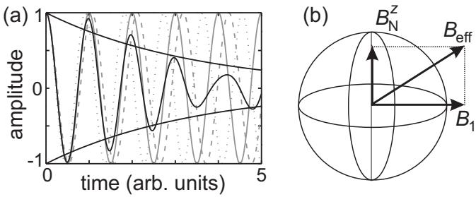
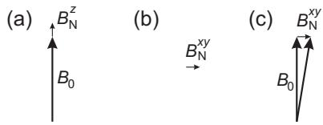
FIG. 25 Longitudinal magnetic field fluctuations, , add directly to the external field, , whereas transverse fluctuations, , change the total field only in second order when
If the nuclear field, , were fixed and precisely known, it would afect the electron spin dynamics in a systematic and known way. In this case, there would be no contribution to decoherence. However, the orientation and magnitude of the nuclear field change over time. First, the hyperfine field or Overhauser field, , will change if the local nuclear polarization, , changes. PThis can occur for instance through dynamic nuclear polarization. Second, can also change while the net nuclear polarization remains constant. This happens when two nuclei with diferent flip-flop with each other, such that changes.
PAt any given time, the nuclear field thus assumes a random and unknown value and orientation, and this randomness in the nuclear field directly leads to a randomness in the electron spin time evolution. During free evolution, the electron spin will thus pick up a random phase, depending on the value of the nuclear field, i.e. the singlespin coherence decays. The shape of the decay (exponential, power-law, etc.) is determined by the distribution of nuclear field values. For a longitudinal nuclear field, that is randomly drawn from a Gaussian distribution of nuclear fields with standard deviation (e.g. pwhen every nuclear spin had equal probabilities for being up or down), the decay would be Gaussian as well, i.e. of the form e , where (Merkulov et al., 2002)
For mT, would be as short as 30 ns. pThe timescale can be measured as the decay time of the electron spin signal during free evolution, averaged over the nuclear field distribution(Fig. 26a). The free evolution of the spin can be measured by tipping the spin into the plane, subsequently allowing the spin to freely evolve about (assumed to be along ˆz), and recording the magnetization in this plane as a function of the free evolution time interval (in NMR, this is known as the free induction decay or FID). If the spin can only be measured in the basis, a so-called Ramsey experiment should be performed instead. It starts of like an FID but the magnetization is rotated back to the ˆz axis after the free evolution time interval, so it can be measured along zˆ. Averaging each data point in an FID or Ramsey experiment over a suficiently long time, is equivalent to averaging over a large number of uncorrelated nuclear field values (assuming the system is ergodic). Such experiments have recently been performed (see Section IX), and gave the expected short timescales for T∗2 .
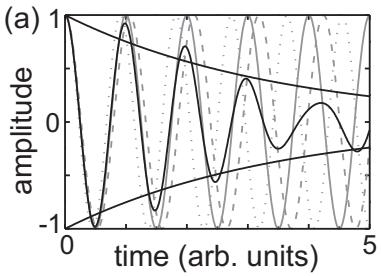
FIG. 26 (a) Amplitude of the x-component of the electron spin as a function of time, under free precession about for three diferent values of (dotted and dashed lines). Also shown is the average of the three oscillations, which is seen to rapidly decay (solid line). If an average was taken over many more values of taken from a Lorentzian distribution in the same range, the envelope of the oscillation would decay with a single exponent (solid lines). A Gaussian distribution would yield a Gaussian decay (see text). (b) Representation of the rotating magnetic field, , and the longitudinal nuclear field, , in a reference frame rotating about ˆz at the same rate as . The electron spin will precess about the vector sum of these two fields, rather than about the axis defined by
Also in the case of driven evolution, the nuclear field will afect the time evolution. In a spin resonance experiment, for instance, a rotating magnetic field is applied with frequency (on-resonance with the Zeeman splitting), and perpendicular to (see also Section . In the usual rotating reference frame, this corresponds to a rotation about the -axis. However, a longitudinal nuclear field will shift the electron spin resonance frequency, so that is no longer on-resonance with the electron spin precession. In the rotating frame, the spin will then rotate about the vector sum of and , which may be a rather diferent rotation than intended. In fact, the nuclear field has been the main limitation on the fidelity of spin rotations in recent electron spin resonance experiments in a quantum dot (see Section IX.A).
We have so far focussed on the efect of the nuclear field (mainly on the electron spin phase. We now briefly turn to electron spin flips caused by the nuclear field (mainly by The semi-classical picture says that for , the electron spin will rotate about i.e. it is changed from spin-up to spin-down and back, while for , this hardly occurs (see Fig. 25). We arrive at a similar conclusion from the quantum mechanically picture: the hyperfine Hamiltonian, Eq.26, permits direct electron-nuclear flip-flops only when the two relevant electron spin states are very close in energy (since a nuclear spin flip can absorb only a small amount of energy). This efect has been observed in recent experiments on two-electron singlet and triplet states in a double quantum dot(Johnson et al., 2005c) (Section VIII.D).
There still is another contribution from to spin flips (i.e. to . Since the nuclear field strength and orientation depend on the collection of nuclear spins that the electron wavefunction overlaps with, depends on the orbital the electron occupies. As a result, like the spin-orbit interaction (see section VII.A), the hyperfine interaction also leads to admixing of spin and orbital states. Here too, phonons can induce transitions between the perturbed spin states, and absorb the spin-flip energy (Abalmassov and Marquardt, 2004; Erlingsson and Nazarov, 2002, 2004; Erlingsson et al., 2001). Whereas the transition amplitude due to the spinorbit interaction vanishes in lowest order at (see discussion in section VII.A.4), this is not the case for hyperfine mediated transitions, so the hyperfine mechanism will be relatively more important at low magnetic fields.
3. Mechanisms and timescales of nuclear field fluctuations
We have seen that the nuclear field only leads to a loss of spin coherence because it is random and unknown – if were fixed in time, we could simply determine its value and the uncertainty would be removed. We here discuss on what timescale the nuclear field actually fluctuates. This timescale is denoted by
The study of nuclear dynamics due to internuclear and electron-nuclear interactions has a long and rich history (Abragam, 1961; Abragam and Bleaney, 1986; Meier and Zakharchenya, 1984; Slichter, 1990). When applied to quantum dots, theory predicts that the two most important mechanisms responsible for fluctuations in the nuclear field are the internuclear magnetic dipole-dipole interaction (de Sousa and Das Sarma, Witzel and Rogerio de Sousa, 2005; Yao et al., 2005) and the electron-nuclear hyperfine interaction (Coish and Loss, 2004; Khaetskii et al., 2002; Shenvi and Rogerio de Sousa, 2005).
The Hamiltonian describing magnetic dipole-dipole interactions between neighbouring nuclei is of the form
where is the permeability of free space, is the factor of nucleus the nuclear magneton, and is the vector connecting the two nuclei. The strength of the efective magnetic dipole-dipole interaction between neighbouring nuclei in GaAs is about (100 (Shulman et , 1958). In strong magnetic fields, we can discard the non-secular part of this Hamiltonian, and retain
for the coupling term between nuclear spins i and of the same species (for coupling between spins of diferent isotopes, only the term survives at high field). Here are the nuclear spin raising and lowering operators. The terms in Eq. 30 are responsible for changing and . This may occur on the timescale. The flip-flop terms, , afect , but the flipflop rate between nuclei i and i + 1 may be suppressed, namely when is greater than the internuclear coupling strength (Deng and Hu, 2006) (as this causes an energy mismatch). Thus, when we consider the dipolar interaction only, evolves on a 100 timescale, but may evolve more slowly.
We now turn to the hyperfine interaction. So far we only considered its efect on the localized electron spin, but naturally the interaction (Eq. 26) works both ways and the nuclei evolve about the electron spin, just like the electron spin evolves about the nuclear field. The apparent field experienced by the nuclei is called the Knight shift, and it has a strength ≈ (Coish and Loss, 2004; Khaetskii et al., 2002; Merkulov et al., 2002) (the N nuclei with which the electron wavefunction overlaps “share” the total coupling strength . When we look at the hyperfine interaction Hamiltonian, Eq. 26, we see that similar to the internuclear dipole-dipole interaction, it contains terms as well as flip-flop terms:
where are the electron spin raising and lowering operators. The transverse component of the nuclear field, will evolve due to the terms, on a 10µs timescale. will change on the same timescale only near , due to the electron-nuclear flip-flop components in Eq. 31. At finite , the energy mismatch between the electron and nuclear Zeeman energies suppresses electron-nuclear flip-flops, so here cannot change by direct electron-nuclear flip-flops.
The hyperfine interaction can also afect indirectly. Two virtual electron-nuclear flip-flops (between one nucleus and the electron and between the electron and another nucleus) can together lead to a nuclear-nuclear flip-flop (Shenvi and Rogerio de Sousa, 2005; Yao et 2005). Such a flip-flop process between two nuclei i and modifies whenever This virtual electron-nuclear flip-flop process continues to be efective up to much higher than real electron-nuclear flip-flops. Eventually it is suppressed at high as well.
Altogether the dipole-dipole and hyperfine interactions are expected to lead to moderate timescales (10-100 µs) for fluctuations. At low the timescale for fluctuations is similar, but at high fluctuations are very slow. Here is certainly longer than and perhaps longer than a second. This still needs to be confirmed experimentally, but an indication that may indeed be very long is that the decay (due to spin difusion) of nuclear polarization built up locally at a quantum dot or impurity, occurs on a timescale of seconds to minutes (H¨uttel et al., 2004; Koppens et al., 2005; Paget, 1982) (see Section VIII.D).
4. Electron spin decoherence in a fluctuating nuclear field
In section VII.B.2, we saw that we lose our knowledge of the electron spin phase after a time , in case the nuclear field orientation and strength are unknown. Now suppose that we do know the orientation and strength of the nuclear field exactly at time , but that the nuclear spin bath subsequently evolves in a random fashion on a timescale as described in the previous subsection. what timescale, , will the phase of the electron spin then be randomized?
It may come as a surprise at first that is not simply the same or even of the same order as The reason is that depends not only on the timescale of the nuclear field fluctuations , but also on the amplitude and stochastics of the fluctuations. The typical amplitude is given by the width of the nuclear field distribution, which can be expressed in terms of . Examples of diferent stochastic models include Gaussian noise and Lorentzian noise, which lead to distinct decoherence characteristics (Klauder and Anderson, 1962; de Sousa, 2006). The actual value of is dificult to calculate exactly, but can be estimated in various regimes to be
The timescale is also hard to obtain experimentally. In principle could be determined by recording an FID or Ramsey decay, whereby is reset to the same initial value for every datapoint. This may require measuring accurately and quickly, i.e. better than the initial uncertainty in and in a time much shorter than (Giedke et al., 2006; Klauser et al., 2006; Stepanenko et , 2006). Alternatively, could be obtained by recording all the datapoints needed to construct an FID or Ramsey experiment within a time short compared to
Experimentally, it may be much easier to obtain a spinecho decay time, well-known from NMR (Freeman, 1997; Vandersypen and Chuang, 2004). In its simplest form, the Hahn-echo, the random time evolution that takes place during a certain time interval τ is reversed during a second time interval of the same duration, by applying a so-called echo pulse (180◦ rotation) in between the two time intervals. Importantly, this unwinding of random dephasing only takes place to the extent that the random field causing it is constant for the duration of the entire echo sequence. Thus, the slow time evolution of the nuclear field implies that the echo will not be complete. We call the timescale of the remaining loss of phase coherence
Like is much longer than but also much shorter than . For example, if the nuclear field fluctuations had Gaussian noise characteristics, the electron spin coherence in a Hahn echo experiment would decay as ](Herzog and Hahn, 1956). Taking ns and we would obtain a of , much faster than itself. The nuclear field fluctuations may not be characterized exactly by Gaussian noise, but nevertheless, predictions for still range from 1µs to 100µs, with contributions from the internuclear dipole-dipole interaction(de Sousa and Das Sarma, 2003b; Witzel and Rogerio de Sousa, 2005; Yao et al., 2005), the electron-nuclear hyperfine interaction (Coish and Loss, 2004; Khaetskii et al., 2002), and indirect nuclear-nuclear interactions, mediated by the hyperfine coupling (Shenvi and Rogerio de Sousa, 2005; Yao et al., 2005). Also, contrary to the usual case, the echo decay is not well described by a single exponential. The predicted form for the echo decay depends on the magnetic field strength, and on what terms in the Hamiltonian are then important, but can be very complex (Coish and Loss, 2004; de Sousa, 2006; Yao et al., 2005).
The usefulness of the echo technique for efectively obtaining an extended coherence time has been demonstrated experimentally with two electron spins in a double quantum dot, whereby a lower bound on of 1µs was obtained at 100 mT (Petta et al., 2005b) (Section IX.B). Similar echo-like decay times were observed in optical measurements on an ensemble of quantum dots that each contain a single electron spin (Greilich et 2006b).
We note that sometimes a distinction is made between “dephasing”, referring to a loss of phase coherence that can be reversed with echo techniques, and “decoherence”, referring to a loss of phase coherence that cannot be reversed. While this distinction is useful in practice, we note that it is also somewhat artificial, in the sense that any time evolution can in principle be reversed by a suficiently rapid sequence of multiple generalized echo pulses (Augustine and Hahn, 1997; Viola et , 1999; Viola and Lloyd, 1998).
Finally, we point out that it may be possible to extend i.e. to (almost) freeze the nuclear field fluctuations. One possibility to do this is to fully polarize the nuclear spins: if all nuclear spins point the same way, nuclear-nuclear flip-flop processes can no longer take place and also electron-nuclear flip-flops can only have a very small efect (Khaetskii et al.,
2002, 2003; Schliemann et al., 2002). For this approach to be efective, the nuclear spin polarization must be really very close to 100% (Schliemann et , 2002); just 90% polarization hardly helps. At present the highest nuclear spin polarizations reached in quantum dots are 60 via optical pumping (Bracker et , 2005). Certainly other mechanisms for freezing the nuclear spin fluctuations could be considered, but no such efect has been demonstrated to date.
C. Summary of mechanisms and timescales
Our present understanding of the mechanisms and timescales for energy relaxation and phase randomization of electron spins in few-electron quantum dots is summarized as follows (as before, most numbers are specific to GaAs dots, but the underlying physics is similar in other dot systems).
Energy relaxation is dominated by direct electronnuclear flip-flops near zero field (or whenever the relevant electron spin states are degenerate). In this case, is as low as 10-100 ns. As increases, electron-nuclear flip-flops become suppressed, and energy must be dissipated in the phonon bath. Spin-phonon coupling is ineficient, and occurs mostly indirectly, either mediated by the hyperfine interaction or by spin-orbit interaction. As a result rapidly increases with , and at 1.75 T, has been measured to be 170 ms. As further increases, the phonon density of states increases and the phonons couple more eficiently to the dot orbitals (the phonon wavelength gets closer to the dot size), so at some point relaxation becomes faster again and decreases with field. At 14 T, a 120µs has been observed. At still higher fields, the phonon wavelength would become shorter than the dot size, and is once more expected to go up with field.
Phase coherence is lost on much shorter timescales. A rapid dephasing of the electron spin results from the uncertainty in the nuclear field, ns, irrespective of . If the uncertainty in the nuclear field is removed or if the resulting unknown time evolution is unwound, we recover or respectively, which are much longer. Phase randomization of the electron spin then results from the (slow) fluctuations in the nuclear field, which occur on a timescale of 100 µs to perhaps seconds, and should lead to a or of . Indeed, a lower bound on of 1µs was experimentally observed at 100 mT. If the efect of the nuclear field on the electron spin coherence could be suppressed, the spin-orbit interaction would limit , to a value of 2T (to first order in the spin-orbit interaction), which is as we have seen a very long time.
VIII. SPIN STATES IN DOUBLE QUANTUM DOTS
In this section, we discuss the spin physics of double quantum dots. We start by describing the properties of “spinless” electrons. Then, we show how the spin selection rules can lead to a blockade in electron transport through the double dot. Finally, we describe how this spin blockade is influenced by the hyperfine interaction with the nuclear spins, and discuss the resulting dynamics.
A. Electronic properties of electrons in double dots
We first ignore the spin of the electrons and describe the basic electronic properties of double quantum dots. The properties of “spinless” electrons in double dots are treated in detail by Van der Wiel et al. (Van der Wiel et al., 2003). Here, we give all the theory relevant for electron spins in double dots without going into the details of the derivations.
1. Charge stability diagram
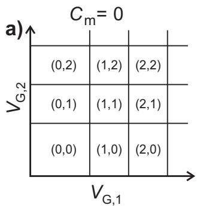
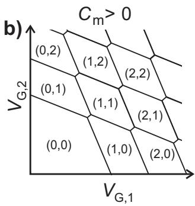
FIG. 27 Charge stability diagrams for (a) uncoupled and (b) coupled double dots, depicting the equilibrium electron numbers in dot 1 and 2 respectively. The lines indicate the gate voltage values at which the electron number changes. In (b), a finite cross-capacitance between gate 1 (2) and dot 2 (1) is taken into account.
Consider two quantum dots, labelled 1 and 2, whose electrochemical potentials are controlled independently by the gate voltages and , respectively. Figure 27a shows the equilibrium electron numbers of the quantum dots as a function of and , for the case that the dots are completely uncoupled. Such a plot is called a charge stability diagram. The lines indicate the values of the gate voltages at which the number of electrons in the ground state changes. Note that the lines are exactly horizontal and vertical, since the electrochemical potential in either dot is independent of the charge on the other dot, and each gate voltage only affects one of the dots.
When the dots are capacitively coupled, addition of an electron on one dot changes the electrostatic energy of the other dot. Also, the gate voltage generally has a direct capacitive coupling to quantum dot 2 (1). The resulting charge stability diagram is sketched in Fig. 27b. Each crosspoint is split into two so-called triple points. The triple points together form a hexagonal or “honeycomb” lattice. At a triple point, three diferent charge states are energetically degenerate. The distance between the triple points is set by the capacitance between the dots (the interdot capacitance) . At low source-drain bias voltage, electron transport through the double dot is possible only at these triple points. In contrast, a charge sensing measurement will detect any change in the electron configuration and therefore map out all the transitions, including those where an electron moves between the dots (e.g. from (0,1) to (1,0)).
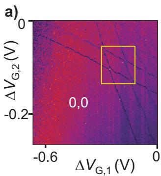
FIG. 28 (Color in online edition) Charge sensing data on a double dot in the few-electron regime. The dark lines signal the addition of a single electron to the double dot sytem. The absolute number of electrons in dot 1 and 2 is indicated in each region as . (a) The absence of dark lines in the lower left region indicates that the dot is empty there. (b) Zoom-in of the boxed region of (a). Data adapted from Elzerman et al. (2003).
Figure 28 shows charge sensing data in the few-electron regime. The absence of charge transitions in the lower left corner of Fig. 28a indicates that here the double dot structure is completely depleted of electrons. This allows the absolute number of electrons to be determined unambiguously in any region of gate voltage space, by simply counting the number of charge transition lines from the (0,0) region to the region of interest. Figure 28b displays a zoom-in of the boxed region in Fig. 28a. The bright yellow lines in between the triple points in Fig. 28b are due to an electron moving from one dot to the other. This changes the number of electrons on each individual dot, while keeping the total number of electrons on the double dot system constant.
From now on, we assume the dots are in series, such that dot 1 is connected to the source and dot 2 to the drain reservoir. From a similar analysis as in Section II.D, the electrochemical potential of dot 1 is found to be:
where is the capacitance between gate and dot is the capacitance from dot 1 (2) to the source (drain), is the charging energy of the individual dot i and is the electrostatic coupling energy 8. The coupling energy is the change in the energy of one dot when an electron is added to the other dot. One can obtain by simply interchanging 1 and 2 and also and in Eq. 32.
The solid lines in Fig. 29 depict the electrochemical potentials around the triple points for low source-drain bias. The diagrams schematically show the level arrangement at diferent positions and are shown in short form in the left and right dot respectively). In this case, we have assumed the tunnel coupling to be small (i.e. negligible with respect to the electrostatic coupling energy). This is called the weakcoupling regime.
When the tunnel coupling becomes significant, the electrons are not fully localized anymore in single dots but rather occupy molecular orbitals that span both dots (Van der Wiel et , 2003). The molecular bonding orbital, ψB, and the antibonding orbital, , are superpositions of the single-dot states in the left dot, φ1, and the right dot, φ2:
(34)
When the single-dot states are aligned, the energy of bonding orbital is lower by than the energy of the single-dot orbitals, and the energy of the antibonding orbital is higher by the same amount.
The tunnel coupling is revealed in the charging diagram by a bending of the honeycomb lines near the triple points, as depicted by the dashed lines in Fig. 29. The value of the tunnel coupling can be determined experimentally from such a plot by measuring the bending of the lines (H¨uttel et al., 2005; Pioro-Ladri`ere et al., 2005), or by measuring the charge distribution as a function of detuning between left and right dot potentials (DiCarlo et al., 2004; Petta et al., 2004).
Note that, when drawing the diagram in Fig. 29, we assumed the electrons to be “spinless”. Therefore, the first electron can enter the molecular bonding orbital which takes less energy than in the case of weak tunnel coupling. The second has to move into the antibonding orbital because of the Pauli exclusion principle. Thus, the extra energy needed to add the second electron is
FIG. 29 Electrochemical potential lines around the triple points for weak tunnel coupling (solid and dotted lines) and strong tunnel coupling (dashed lines). Each line outlines the gate voltages where the corresponding electrochemical potential in the dots is equal to the electrochemical potential in the reservoirs (which is defined as zero). The level diagrams indicate the positions of the electrochemical potentials at several points in gate space. Inset: dotted line indicates the “naive” expectation for the electrochemical potentials when spin is included.
more than for the weak-coupling case) and the second triple point is pushed to higher gate voltages with respect to the weak-coupling case.
When spin is taken into account, the orbitals become doubly degenerate and both electrons can occupy the bonding orbital. Thus, it only takes extra energy to add the second electron. This changes the charging diagram drastically; namely, the dashed line in the (1,1) region (in the upper right corner in Fig. 29) moves to the other side of the triple point! This scenario is sketched in the inset of Fig. 29. However, experiments on double dots with large tunnel coupling (H¨uttel et al., 2005; Pioro-Ladri`ere et al., 2005) reproduce the main diagram of Fig. 29, and not the diagram of the inset that includes spin. The reason for this is that the Coulomb interaction is typically one or two orders of magnitude larger than the tunnel coupling. Therefore, when the double dot is occupied by two electrons, the electrons are again strongly localized. The orbital energy of the two-electron system is then equal to the sum of the two single-dot orbitals, which is the same as the sum of the bonding and the antibonding orbital. When the second electron is added, the tunnel coupling energy that was gained by the first electron has to be “paid back”, which causes the second triple point to appear at higher gate voltages than in the weak-coupling case. Therefore, Fig. 29 is recovered when spin is included.
2. High bias regime: bias triangles
When the source-drain bias voltage is increased, two diferent types of tunneling can occur. Up to now, we have only discussed tunneling between aligned levels, where the initial and final electronic state by definition have the same energy. This is termed elastic tunneling. However, tunneling can also occur when there is an energy mismatch between the initial and final state (levels are misaligned), in which case the process is called inelastic. For inelastic tunneling to take place, energy exchange with the environment is required to compensate for the energy mismatch, since the process as a whole has to conserve energy. One important example of energy exchange is the absorption of one or more photons under microwave or radio-frequency radiation, leading to photon-assisted tunneling (Van der Wiel et al., 2003). Energy emission usually takes place through phonons in the surrounding lattice. Note that at cryogenic temperatures, the number of photons and phonons in thermal equilibrium is usually negligle. Since inelastic tunneling is a second-order process, the inelastic tunneling rate is in general much lower than the elastic tunneling rate. However, when there are no aligned levels elastic tunneling is suppressed and in elastic tunneling dominates the electron transport.
The rate of inelastic tunneling between the dots is highly sensitive to the density of states and the occupation probability of photons and phonons. Therefore, a double dot system can be used as a probe of the semiconductor environment (Van der Wiel et al., 2003) or as a noise detector (Aguado and Kouwenhoven, 2000; Onac et , 2006). The energy window that is being probed is determined by the misalignment between the levels in the two dots. Since this misalignment is easily tuned by gate voltages, a wide range of the energy spectrum can be investigated with very high resolution (typically of order 1 µeV).
FIG. 30 The triple points for an applied source-drain bias VSD and the drain kept at ground. A triangle is formed from each triple point. Within this “bias triangle” charge transport through the dot is energetically allowed. The grey lines and regions in the triangles illustrate the gate voltages at which transitions involving excited state levels play a role. Electrochemical potentials corresponding to transitions involving an excited state are shown in grey in the level diagrams.
When the source-drain bias voltage is increased, the triple points evolve into “bias triangles”, as depicted in Fig. 30 for weak tunnel coupling. The electron numbers refer to the triple points where the first electrons are added to the double dot system; however, the following discussion is valid for any number of electrons on either dot.
To understand the electron transport within such a triangle, we first look at the three legs. Along the base leg, , and elastic tunneling occurs. Moving along this same slope anywhere in the plot will not change the relative alignment of the levels in the two dots, but only change their (common) alignment with respect to the source and drain.
Moving upwards along the left leg of the triangle, fixed is aligned with the source electrochemical potential) and only is changed. At the bottom of the triangle, the levels corresponding to transitions involving only the ground states and , the black levels in the diagrams) are aligned and elastic tunneling is possible. Then, as is pulled down the levels become misaligned and only inelastic tunneling can take place. Generally, this will cause the current to drop. When µ2 is pulled down so much that a level corresponding to a transition involving an excited state (grey level of dot 2 in the diagrams) enters the bias window, elastic tunneling becomes possible again, leading to a rise in the current. When we move from this point into the triangle, along a line parallel to the base of the triangle, these levels remain aligned. Therefore, a line of elastic tunneling is observed parallel to the base of the triangle (depicted as a dark grey line). Going even farther up along the left leg of the triangle, levels are again misaligned and only inelastic current flows. Beyond the top of the triangle, falls below the drain electrochemical potential and the system is in Coulomb blockade.
Moving down the upper leg from the top of the triangle, µ2 is fixed remains aligned with the drain electrochemical potential) and is pulled down. When a level corresponding to a transition involving an excited state in the left dot is pulled into the bias window (grey level in left dot in the diagrams), there are two paths available for electrons tunneling from the source onto the first dot. A diferent current can therefore be expected in the grey part in the upper right corner of the triangle.
When the source-drain bias is inverted, the electrons move through the dot in the opposite direction and the roles of dot 1 and dot 2 are reversed.
In principle, the diferent lines and regions of elastic and inelastic tunneling allow the full energy-level spectrum to be determined of both dots. However, the visibility of lines and regions depends strongly on factors such as the relative heights of the three tunnel barriers, the eficiency of inelastic tunneling processes (which again depends on the environment) and relaxation within the dots. For example, if relaxation in the first dot is much slower than the typical time for interdot tunneling, elastic current involving excited states in both dot 1 and 2 can be observed. Another example: if the tunnel barrier between the source and dot 1 is much higher than the other two, the tunnel process from source to dot 1 dominates the behaviour of the system and only excited states of dot 1 will be resolved in the current spectrum. In practice, the system should be tuned such that the parameter of interest has the strongest efect on the current pattern, while the other factors can be neglected.
From a high source-drain bias measurement as discussed here, all four gate capacitances can be deduced. With those, all the energy scales such as charging energies, electrostatic coupling energy, tunnel coupling and energy level spacing can be calibrated.
In many of the experiments that are discussed in the following sections, the levels in the two dots are detuned with respect to each other, while keeping the average of the two at a constant level. This is achieved by changing the gate voltages along a line exactly perpendicular to the base of the bias triangle. The resulting axis is commonly referred to as the detuning axis, which we denote by ε. Figure 31 displays the level arrangements as a function of ε.
FIG. 31 Level diagrams for diferent detunings ε between dot 1 and dot 2 (dotted line in the bias triangle). Note that the average of the levels in the two dots is kept constant, and only the diference between the levels is changed.
B. Spin states in two-electron double dots
The physics of one and two-electron spin states in single dots was discussed in section IV. In double quantum dots, electrons can be transferred from one quantum dot to the other by changing the electrostatic potentials using gate voltages. These interdot charge transitions conserve electron spin and are governed by spin selection rules, leading to a phenomenon called Pauli spin blockade. In order to understand this spin blockade, we first examine the spin states in the double dot system and the possible transitions between these spin states, while neglecting processes that lead to mixing of these spin states. Such mixing terms will be introduced later, in section VIII.D.
We focus on the two-electron regime, which has been the focus of many recent double dot experiments. We work in the region of the charge stability diagram where the occupancy of the double dot can be (0,1), (1,1), or (0,2).
For (0,1) and (0,2) spin states, the spin physics is identical to the single dot case since the left quantum dot is not occupied. We briefly repeat the description of the single-dot states, as discussed in Section IV. In the (0,1) charge state, the right dot contains a single electron. At zero magnetic field, the two spin states are degenerate. A finite magnetic field results in a Zeeman splitting between the spin-up and spin-down electrons, with where is the Zeeman energy. In the (0,2) charge state, there are four possible spin states: the singlet, denoted by S(0, 2), and the three triplets and
. The spin parts of the wavefunctions of these states are:
where the subscript denotes the dot in which the electron resides. At zero magnetic field, the triplets are separated by from the singlet ground state S(0, 2). An in-plane magnetic field Zeeman splits the triplet spin states. As in the single dot case, a perpendicular magnetic field tunes and also Zeeman splits the triplet states.
In the (1,1) charge state, the two-electron states are also spin singlets and triplets, but with the electrons in diferent dots:
(42)
The energy diference between the lowest-energy singlet and triplet states, depends on the tunnel coupling and the single-dot charging energy . When the singledot levels in the two dots are aligned, in the Hubbard approximation (Burkard, 2001; Burkard et al., 1999). Figure 32a depicts the energies of the two-electron spin states as a function of detuning between the two dots, for the case of negligibly small tunnel coupling. Since the three triplet states are degenerate, we denote them here by T (1, 1) and T (0, 2). The diagrams indicate the electrochemical potentials in left and right dot for three values of ε.
Due to the tunnel coupling the (1,1) and (0,2) charge states hybridize. In the case of spinless electrons, this would simply result in an avoided crossing between the (1,1) and (0,2) charge states that is characterized by a tunnel splitting, . However, since the interdot transitions preserve spin, the (1,1) singlet (triplet) states only couple to (0,2) singlet (triplet) states. As a result, the ground state singlets hybridize at a diferent value of detuning than the triplets, as depicted in Figure 32b. At B=0, is typically in the range 0.4-1 meV in electrostatically defined dots in GaAs. This pushes the avoided crossings of the triplets far away from the avoided crossing of the singlets, which has two interesting consequences. First, the singlet-triplet energy diference J strongly depends on detuning, allowing simple electrical control over J. Second, the charge distribution of the singlet and triplet states are very diferent over a wide range of detunings. For example, at the value of detuning where the singlets have an avoided crossing, the electrons are in the charge state in case they form a spin singlet, but almost fully in the charge state (1, 1) if they form a spin triplet. This spin-dependent charge distribution allows readout of the spin state through charge sensing (Engel et al., 2004; Taylor et al., 2005).
b)
c)
FIG. 32 (Color in online edition) Energies of the two-electron spin singlet and triplet levels in a double dot as a function of detuning ε between the levels in the two dots for the case of (a) B=0 and negligible tunnel coupling (b) B=0 but significantly high value for and (c) finite B and significantly high value for The electrochemical potentials in the two dots are indicated for three values of detuning in the diagrams on top, for case (a). Here, (1,1) denotes the electrochemical potential of both degenerate states S(1,1) and T(1,1). Note that other, higher-energy single-dot states will lead to avoided crossings at even larger values of detuning.
In a finite magnetic field, the triplet states are split by the Zeeman energy. Figure 32c shows the energy levels for a Zeeman splitting that exceeds the tunnel coupling. The application of a large magnetic field can be used to decouple the and T− triplet states from the triplet state, thus confining the relevant state space to and
The singlet-triplet energy diference J is often referred to as the exchange energy. In the strict sense of the word, exchange energy refers to the diference in Coulomb energy between states whose orbital wavefunctions difer only in their symmetry (symmetric for a spin singlet and antisymmetric for a spin triplet) (Ashcroft and Mermin, 1974). In the case of two electrons in a double dot, J can also include a large contribution due to hybridization between the (1,1) and the (0,2) and (2,0) charge states, especially near one of the avoided crossings. In this sense, one could argue that J is not a true exchange energy. However, the double dot spin system can still be described by the Heisenberg spin Hamiltonian 2 where are the electron spin operators. Therefore, J acts as an efective exchange coupling. To avoid confusion, we minimize reference to J as ‘exchange energy’ in this review.
C. Pauli spin blockade
The conservation of spin in electron tunneling leads to current rectification in dc transport in the two electron regime. This efect, termed spin blockade or Pauli blockade, was first observed in experiments on vertically coupled quantum dots (Ono et al., 2002). Later experiments in few-electron lateral dots combined charge sensing and transport to study the efect (Johnson et al., 2005b). Measurements of transport in the Pauli blockade regime provided some of the first indications that the hyperfine interaction plays an important role in the electron spin dynamics. Pauli blockade has also been utilized to implement spin-to-charge conversion for read out of the spin state of electrons in double quantum dots.
The origin of Pauli blockade is schematically illustrated in the insets of Fig. 33. At negative bias electrons are transferred through the device in the sequence ). In this cycle the right dot always contains a single electron. Assume this electron is spin-up. Then, in the transition (0,1) (0,2) the right dot can only accept a spin-down electron from the leads due to Pauli exclusion, and a S(0, 2) state is formed. Similarly, only a spin-up electron can be added if the first electron is spin-down. From S(0, 2), one electron can tunnel to the left dot and then out to the left lead.
In contrast, when the bias voltage is positive charge transport proceeds in the sequence and the left dot can be filled from the Fermi sea with either a spin-up or a spin-down electron, regardless of the spin of the electron in the right dot. If the two electrons form a singlet state , the electron in the left dot can transfer to the right dot forming S(0, 2). However, if the electrons form one of the triplet states T(1, 1), the electron in the left dot will not be able to tunnel to the right dot because T(0, 2) is too high in energy. The system will remain stuck in a (1,1) charge state until the electron spin relaxes. Since the time can approach milliseconds, the current in this direction is negligible and the dot is said to be in spin blockade. Because it is the Pauli exclusion principle that forbids the electrons to make a transition from a T(1, 1) state to S(0, 2), this blockade is also referred to as Pauli blockade.
FIG. 33 Current (I) measured as a function of source-drain voltage (V) in a vertical double dot system. Non-zero current is measured over the entire range of negative voltage. For positive bias, current is blocked in the range mV. At bias voltages exceeding 7 mV, the (0,2) triplet state becomes accessible and Pauli blockade is lifted. Insets: Device schematic and energy level configuration at positive and negative bias voltages. Data reproduced from Ono et al. (2002).
FIG. 34 (Color in online edition) Double dot current measured as a function of and in the one and two-electron regime. In the one-electron regime (a, c) the finite bias triangles at negative bias mimic the positive bias data, except for an overall change in the sign in the current. However, in the two-electron regime, charge transport shows a striking asymmetry when the sign of the bias voltage is changed. At negative bias in the two-electron regime charge transport is blocked, except near the edges of the finite bias triangles, where exchange of electrons with the leads lifts the spin blockade. Insets show simple rate equation predictions of charge transport. Data reproduced from Johnson et al. (2005b).
The spin blockade efect leads to current rectification in dc transport. Figure 33 shows an I-V curve taken from a vertical double dot. Non-zero current is observed for negative voltages. For positive bias voltage, spin blockade is observed in the range 2-7 mV. Once the bias voltage exceeds the singlet-triplet splitting of the (0,2) charge state, also the state is energetically accessible from T (1, 1) and the blockade is lifted. A theoretical model reproduces the observed current pattern (Fransson and R˚asander, 2006).
Note that the spin blockade can be lifted by photonassisted tunneling (S´anchez et al., 2006); the photon then supplies the energy needed to make the transition from to . Interestingly, it is predicted that for a suitable choice of the applied photon frequency, the resulting pumped current can have a large spin polarization (Cota et al., 2005; S´anchez et al., 2006).
Pauli blockade has also been observed in lateral double dot systems. In these systems the tunnel rates and ofset energies are easily tuned. Moreover, devices equipped with a charge sensor can be used to measure the average occupancy of the double dot during charge transport (see Fig. 2 for a device image). Figure 34 shows experimental data from measuring current as a function of and in the one- and two-electron regimes for both signs of bias (Johnson et al., 2005b). Apart from a change in the sign of current when the voltage is changed, the oneelectron data are mirror images of each other for positive and negative bias. This is in contrast with data acquired in the two-electron regime, where current flows freely for positive bias but is strongly suppressed at negative bias due to Pauli exclusion (the voltage bias convention in this paper is opposite to Ref. (Ono et al., 2002), so blockade is observed at negative bias). At negative bias, current is only observed along the edges of the bias triangles, where an electron can be exchanged with the leads lifting the spin blockade (see diagrams in Fig. 34).
FIG. 35 (Color in online edition) Charge sensor conductance, measured as a function of and in the one and twoelectron regimes. The charge sensor conductance in the lowerleft finite bias triangle in the one electron regime is a weighted average of the (0,0), (0,1), and (1,0) charge sensing signals. In the two-electron Pauli blockade regime, the charge sensor conductance in the finite bias triangles is pinned to the (1,1) charge sensing value. This indicates that charge transport is blocked by the charge transition. Insets show simple rate equation predictions of charge sensor conductance. Data reproduced from Johnson et al. (2005b).
Charge sensing measurements of the time-averaged occupancy of the double quantum dot during transport directly demonstrate that the current rectification is due to a blocked inter-dot charge transition. Figure 35 shows the charge sensor conductance measured as a function of and in the one- and two-electron regimes for both positive and negative bias. For the two-electron case at positive bias charge transport in the lower-left bias triangle proceeds in the sequence . The charge sensing signal in the finite bias triangles is a weighted average of the (0,1), (0,2) and (1,1) charge sensing levels. At negative bias in the two-electron regime charge transport in the lower-left bias triangle follows the sequence . The data in show that the charge sensing conductance in the finite bias triangles is practically identical to the background (1,1) charge sensing signal. These data indicate that the charge transition from (1,1) to (0,2) is the limiting step in the current: precisely what is expected for a double dot in spin blockade.
D. Hyperfine interaction in a double dot: Singlet-Triplet mixing
Early experiments in semiconducting heterostructures in the quantum Hall regime demonstrated that spin polarized currents could be used to polarize the nuclei in the substrate (Dixon et al., 1997; Wald et al., 1994). These measurements gave a clear indication that electronic effects can have a strong influence on the nuclear spin system. So far we have ignored the consequences of the hyperfine interaction in few-electron quantum dots, but early indications of this important interaction were visible in the first Pauli blockade experiments by Ono et al. (Ono et al., 2002). In this section we review several recent experiments that have shown that hyperfine effect can have profound consequences on the electron spin dynamics in GaAs quantum dots.
In GaAs quantum dots each electron spin is coupled to a bath of nuclear spins through the contact hyperfine interaction (see Section VII.B). The importance of the hyperfine field becomes apparent when considering two spatially separated electron spins in a double dot structure. Each electron has a distinct orbital wavefunction and averages over a diferent set of nuclei. As a result, each electron experiences a slightly diferent nuclear field. The diference in the nuclear fields, , couples the singlet and triplet spin states. For example, the z-component of the nuclear field couples and , with the Hamiltonian (in the basis
Since and are not eigenstates of this Hamiltonian, the of-diagonal terms will drive rotations between S and . Similarly, the x-component and the y-component of the nuclear field mix and with
Figure. 36(a) shows measurements of the “leakage cur- in the Pauli spin blockade regime in vertical double dots as a function of magnetic field for two diferent sweep directions (Ono and Tarucha, 2004). Upon increasing the magnetic field, the leakage current was nearly constant until B=0.5 T, where a sudden increase in the leakage current was measured. The leakage current decreased suddenly for fields exceeding 0.9 T. Measurements of the leakage current for the opposite magnetic field sweep direction showed hysteretic behavior. The amount of hysteresis decreased for slower magnetic field sweep rates. In the high leakage current regime T), the leakage current showed surprising oscillations in time. The frequency of these oscillations was a sensitive function of the external field (see Fig. 36 (b)). By moving in and out of the Pauli spin blockade regime using gate voltages, Ono et al. determined that the oscillatory time dependence of the leakage current developed on 5 minute timescale. Moreover, the leakage current wa modified by the application of cw radiation at the or NMR lines. All these aspects indicate that th nuclear spins play a major role in the observed behaviour
(c)
FIG. 36 (a) Pauli blockade leakage current as a function of magnetic field for increasing and decreasing magnetic field sweeps. (b) Leakage current as a function of time for fields in the range of (bottom trace) to (top trace). (c) Transient behavior of the leakage current measured by moving in and out of the Pauli blockade regime using Data reproduced from Ono and Tarucha (2004).
The leakage current in the Pauli spin blockade region occurs due to spin relaxation from to and the hysteretic behavior observed in Fig. 36a can be explained in terms of triplet-to-singlet relaxation via hyperfine-induced flip-flops with the spins of the lattice nuclei in the dot. In the measured device, the detuning between the two dots corresponds to a point just to the right of the avoided crossing between and in Fig. 32b. Here, is slightly higher in energy than . This energy separation is about 10 µeV in the measured device. At zero magnetic field, this energy mismatch makes the mechanism between electron and nuclear spins ineficient. However, the energy diference is compensated by the Zeeman energy at a magnetic field of about 0.5 T, which is comparable to the magnetic field where a current step is observed (indicated by a triangle in Fig. 36a). On approaching this particular magnetic field, and become degenerate (see Fig. 37a). Then, the hyperfine-induced relaxation becomes eficient, because energy as well as spin is conserved in between the electronic and nuclear spin systems. Many such flip-flops lead to a finite nuclear spin polarization, which acts back on the electron as an efective magnetic field (see Section VII.A. Because the nuclear spin has a long lifetime (on the order of minutes), a nuclear spin polarization accumulates to sustain the degeneracy condition on sweeping down the external field (Ono and Tarucha, 2004). An increasing nuclear field thus compensates the decreasing external magnetic field; in other words, the efective magnetic field resulting from nuclear spin polarization adds to the external field. From the considerations in Appendix A, we see that this implies that the electron spin is changed by ; this is consistent with hyperfine-induced transitions from to S. The hyperfine interactions are thus the origin of the hysteretic loop. We note that the similar efect was well studied in ESR experiments on two-dimensional electron gases (Dobers et al., 1988; Teraoka et al., 2004).
(b)
FIG. 37 (a) Efect of the Zeeman energy on and states, which are separated by an energy J. The and become degenerate when the Zeeman energy is equal to J. (b) Magnetic field dependence of the leakage current measured at various values of source-drain voltages, , in the Pauli blockade region. Each curve is ofset by 1 pA to the top. Data reproduced from Tarucha et al. (2006).
More detailed experiments on the hysteretic behavior are performed for a vertical double dot, as shown in Fig. 37b (Tarucha et , 2006). The observed hysteretic behavior significantly depends on the source-drain voltage, that is, the hysteretic loop becomes small and shifts to the lower field for the higher source-drain voltage . This is well understood in terms of the decrease of singlet-triplet energy splitting, which is estimated from the threshold field (arrows) as a measure: increasing increases the detuning between two dots. As can be seen from Fig. 32b, this decreases the energy diference between and and therefore a smaller magnetic field is needed to compensate for it.
Further insight into the role of the hyperfine interaction on the electron spin dynamics was gained in experiments on lateral quantum dots (Koppens et , 2005). These experiments measured the Pauli spin blockade leakage current as a function of the external magnetic field and of the exchange splitting separating the singlet and triplet spin states. Figure 38 explores the tunnel coupling and magnetic field dependence of the Pauli blockade in plots of the double dot current as a function of and . For strong interdot tunnel couplings current rectification due to Pauli blockade is observed (Fig. 38a). When the tunnel coupling is reduced, the Pauli blockade is lifted and a substantial current starts to flow, as shown in Fig. 38b. Increasing the magnetic field to 100 mT quenches this leakage current (see Fig. 38c). In all cases, a large current is observed when the voltage bias exceeds the (0,2) singlet-triplet energy diference
FIG. 38 (Color in online edition) Transport in the Pauli blockade regime as a function of and (a) In the limit of strong tunnel coupling current suppression due to Pauli blockade is observed. For weak tunnel coupling, the Pauli blockade leakage current displays a striking magnetic field dependence. At B=0 mT (b), Pauli blockade is lifted near the (1,1)-(0,2) charge transition (near zero detuning). In contrast, for B=100 mT current is suppressed due to Pauli blockade. Data reproduced from Koppens et al. (2005).
These data can be explained by considering the dependence of the two-electron spin states on magnetic field and exchange splitting, as illustrated in Fig. 32 (see also (Coish and Loss, 2005; Jouravlev and Nazarov, 2006)). For small tunnel coupling (Fig. 32a), the singlet and the three triplets are nearly degenerate over the entire range of detuning. Increasing the tunnel coupling results in a finite exchange splitting between S(1, 1) and all T (1, 1) states (Fig. 32b). The inhomogeneous hyperfine fields mix S(1, 1) and when the energy splitting between these states is less than or comparable to the nuclear field scale, neV. This condition is achieved over the entire range of detunings for small tunnel coupling but only at large detuning for strong tunnel coupling. An external field splits of the triplet states, and − by the Zeeman energy (Fig. 32c). When these states also rapidly mix with S(1, 1) due to the inhomogeneous hyperfine fields. However, when the and states do not mix with S(1, 1) anymore, and the spin blockade is recovered.
FIG. 39 (Color in online edition) Charge sensor conductance, measured as a function of and using the pulse sequence. The triangular shaped region in the (0,2) region of the charge stability diagram, termed the “pulse triangle”, is due to spin blocked interdot charge transitions. A relaxation time is determined by measuring the decay of this signal as a function of time (see (a),(b)). shows a strong dependence on magnetic field. This is apparent in the B=0 mT data of (c), where near zero detuning the spin states have completely relaxed on timescales. For long times, µs and mT the spin states have completely relaxed and the pulse triangle is absent. Data reproduced from Johnson et al. (2005c).
Time-resolved techniques have been used to measure the hyperfine-induced relaxation of a spin triplet state in a two-electron double quantum dot (Johnson et al., Petta et al., 2005a). These experiments used pulsed gate techniques to prepare a spin triplet state and then measure the decay of that spin state using spinto-charge conversion. The pulse experiment is performed near the (1,1)-(0,2) region of the charge stability diagram. Gates are set in (0,1) to empty the left dot. A pulse then shifts the gate voltages to the (1,1) region of the charge stability diagram. A spin-up or spin-down electron enters the left dot forming a spin singlet or spin triplet state. A spin triplet state is formed 75% of the time. To measure the relaxation time of the spin triplet state, a third pulse is applied to the device which tilts the double well potential so that S(0, 2) is the ground state. In order for the left electron to tunnel to the right dot, the (1,1) triplet state must spin relax to and then tunnel to S(0, 2). By measuring the occupancy of the double dot as a function of the time spent in the biased configuration the spin relaxation time can be determined.
FIG. 40 (Color in online edition) Spin relaxation time of the double-dot spin triplet plotted as a function of detuning for a range of external magnetic fields. At low detunings, a strong magnetic field dependence is observed due to hyperfine driven spin relaxation. At large detunings, spin relaxation occurs due to coupling to the leads, and is independent of magnetic field. Data are fit using a simple model of hyperfine driven relaxation and thermally activated coupling to the leads. Data reproduced from Johnson et al. (2005c).
Representative data are shown in Fig. 39 as a function of magnetic field and time in the biased configuration, . In Fig. 39 (a) is plotted as a function of and with B=100 mT and . A triangular shaped signal (“pulse triangle”) appears in the (0,2) region of the charge stability diagram, which is indicative of spin blocked transitions. For B=100 mT and µs the signal in the pulse triangle reduces to a value approaching the background S(0, 2) charge sensing level, indicating that τM τST and the spin blocked triplet states have relaxed to and tunneled to S(0, 2). In addition to the observed time dependence a strong magnetic field efect is observed. Reducing B from 100 mT to 0 mT quenches the triplet state signal near the interdot charge transition for the µs data, which implies that spin relaxation is much faster near zero field at small detunings. Finally, with B=0 mT and µs the signal in the pulse triangle is completely absent indicating complete spin relaxation.
The full dependence of the spin triplet relaxation time as a function of magnetic field and detuning is plotted #in Fig. 40. At small detunings near the interdot charge transition, displays a strong dependence on magnetic field. Simply increasing the field from 0 to 100 mT extends from microsecond to millisecond timescales. At larger values of the detuning, is nearly independent of magnetic field. This indicates that hyperfine-mediated spin relaxation is no longer dominant, but that relaxation is instead due to a coupling to the leads (which is independent of magnetic field). Experimental data are fit using a simple model of spin relaxation from T (1, 1) to followed by inelastic decay from S(1, 1) to S(0, 2). The model assumes hyperfine driven spin relaxation as well as a spin relaxation contribution from coupling to the leads at large detunings. Best fits to the model give mT, which is consistent with the estimated number of nuclei in the dot.
IX. COHERENT SPIN MANIPULATION
A. Single-spin manipulation: ESR
A variety of techniques can be used to coherently drive transitions between the Zeeman split levels of a single electron. The most well-known approach is electron spin resonance (ESR), whereby a rotating magnetic field, , is applied perpendicularly to the static field B along and on-resonance with the spin-flip transition energy , as illustrated in Fig. 41(Poole, 1983). Alternatively, spin rotations could be realized by electrical or optical excitation. Electric fields can couple spin states through the spin-orbit interaction (Debald and Emary, 2005; Dobrowolska et , 1982; Golovach et al., 2006; Kato et al., 2003b; Schulte et al., 2005) (see also Section VII.A), by making use of an inhomogeneous static magnetic field (Tokura et al., 2006), or by g-tensor modulation (Kato et al., 2003a). Optical excitation can induce spin flips via Raman transitions (Imamoglu et al., 1999) or the optical Stark efect (Gupta et al., 2001). To date, driven coherent rotations of a single spin in a solid have only been realized using ESR, and only in a few specific systems (Hanson et , 2006; Jelezko et al., 2004; Rugar et al., 2004; Xiao et al., 2004), including in a quantum dot (Koppens et , 2006). In addition, the free precession of an electron spin in a quantum dot has been observed with optical techniques (Dutt et , 2005; Greilich et al., 2006a).
The quantum dot ESR experiment was realized by Koppens et al. (Koppens et al., 2006), and is inspired by the idea of Engel and Loss to tune a single quantum dot to Coulomb blockade with the electrochemical potential alignment as shown in Fig. 42a, such that the Coulomb blockade is lifted when the electron spin is repeatedly flipped (Engel and Loss, 2001, 2002). In practice, this requires excitation in the microwave regime, as the Zeeman splitting must be well above the thermal energy. Furthermore, the alternating electric fields that are unavoidably also generated along with the alternating magnetic field, can kick the electron out of the dot via photon-assisted tunneling (PAT) processes (Platero and Aguado, 2004). In early attempts to detect ESR, PAT processes and heating of the electron reservoirs lifted the blockade long before enough power was applied to lift the blockade by ESR (Hanson, 2005). Eforts to suppress the electric field component while maximizing the magnetic component, via optimized cavities (Simoviˇc et al., 2006) or microfabricated striplines (Koppens et al., 2006), have so far not been suficient to overcome this problem.
FIG. 41 Motion of the electron spin during a spin resonance experiment. (a) The motion as seen in a reference frame that rotates about the ˆz axis at the same frequency as the spin itself and the resonant rotating magnetic field, . Naturally, the rotating field lies along a fixed axis in this rotating reference frame. An observer in the rotating frame will see the spin simply precess about , with a rate ω1. (b) An observer in the lab reference frame sees the spin spiral down over the surface of the Bloch sphere.
FIG. 42 (Color in online edition) Schematic diagrams of a single quantum dot and a double quantum dot, illustrating electrical detection of ESR. In both cases, transport through the system is blocked, but the blockade is lifted when the ESR condition is satisfied and the spin of the electron is flipped. (a) The two electrochemical potential levels shown are the spinup and spin-down levels of the lowest single-electron orbital. The system is in Coulomb blockade. (b) The levels shown are as in the discussion of spin blockade in double dots in Section VIII.C. The Zeeman sublevels are not shown.
Instead, ESR detection in quantum dots has been realized using two quantum dots in series, tuned to the spin blockade regime described in section VIII.C. The two dots are weakly coupled, and subject to a static magnetic field such that the state is mixed with the singlet but the states are not. Current is then blocked as soon as the double dot is occupied by two electrons with parallel spins (one electron in each dot), but the blockade is lifted when the spin in the left or the right dot is flipped (Fig. 42 b).
In this double dot ESR detection scheme, the relevant transition occurs between the two dots. This transition is not afected by temperature broadening of the leads. As a result, ESR detection can be done with Zeeman splittings much below the thermal energy, and thus with experimentally much more accessible frequencies. Furthermore, by applying a large voltage bias across the double dot structure, photon-assisted tunneling processes can be greatly suppressed.
The ESR response is seen clearly in transport measurements through the double dot. When the static magnetic field is swept, clear peaks in the current develop at the resonant field when an AC magnetic field is turned on, as seen in Fig. 43 (the alternating magnetic field can be decomposed into a component with amplitude rotating in the same direction as the spin precession and responsible for ESR, and a component rotating the opposite way, which hardly afects the spin because it is very far of-resonance). The linear depen dence of the satellite peak location on the RF frequency, which is the characteristic signature of ESR, is clearly seen. The characteristic signature of ESR is the linear dependence of the satellite peak location on the RF frequency which is clearly seen in the data when the RF frequency is varied from 10 to 750 MHz. A linear fit through the top of the peaks gives a g-factor with modulus , which is similar to the values obtained from high-bias transport measurements in single dots (see Section IV).
In order to observe coherent single-spin rotations, the system is pulsed into Coulomb blockade while is applied. This eliminates decoherence induced by tunnel events from the left to the right dot during the spin rotations. The experiment then consists of three stages (Fig. 44): initialization through spin blockade in a statistical mixture of and , manipulation by a RF burst in Coulomb blockade, and detection by pulsing back for projection (onto S(0, 2)) and tunneling to the lead. If one of the electrons is rotated over (with integer n), the two-electron state has evolved to (or ), giving a maximum contribution to the current (as before, when the two spins are anti-parallel, one electron charge moves through the dots). However, no electron flow is expected after rotations of 2nπ, where two parallel spins are in the two dots after the RF burst.
The measured dot current oscillates periodically with the RF burst length (Fig. 45), demonstrating driven, coherent electron spin rotations, or Rabi oscillations. A key signature of the Rabi process is a linear dependence of the Rabi frequency on the RF burst amplitude, . This is verified by extracting the Rabi frequency from a fit of the current oscillations of Fig. 45b with a sinusoid, which gives the expected linear behavior (Fig. 45b, inset). The maximum that could be reached in the experiment was mT, corresponding to rotations of only 25 ns (i.e. a Rabi period of The main limitation that prevented the use of larger ’s was still photon-assisted tunneling, even in this double dot detection scheme. From the spread in the nuclear field and the RF field strengths that could be applied, a fidelity of 75% was estimated for intended 180◦ rotations (Koppens et al., 2006).
FIG. 43 (Color in online edition) (a) Energy levels of the twoelectron spin states in the double dot. ESR can drive transitions between the states with parallel spins to the states with anti-parallel spins, thereby lifting spin blockade. (b) Measured current through two quantum dots in the spin blockade regime in the absence (blue) or presence (pink) of an AC magnetic field. The pink curve is ofset by 100 fA for clarity. At zero-field, all three triplets are admixed with the singlet, so here the current is never blocked. With the AC field turned on, two satellite peaks develop at the electron spin resonance condition. Inset: the amplitude of the ESR peaks increases linearly with RF power before saturation occurs, as predicted (Engel and Loss, 2001). (c) Measured current (in color-scale) through the two dots as a function of static magnetic field and excitation frequency. Data reproduced from Koppens et al. (2006).
FIG. 44 (Color in online edition) The control cycle for coherent manipulation of the electron spin via electron spin resonance.
The oscillations in Fig. 45b remain visible throughout the entire measurement range, up to 1µs. This is striking, because the Rabi period of ns is much longer than the time-averaged coherence time of roughly 25 ns, caused by the nuclear field fluctuations (see section VII.B). The slow damping of the oscillations is only possible because the nuclear field fluctuates very slowly compared to the timescale of spin rotations and because other mechanisms, such as the spin-orbit interaction, disturb the electron spin coherence only on even longer timescales.
Finally, we note that in this first ESR experiment, the excitation was on-resonance with either the spin in the left dot or the spin in the right dot, or with both, depending on the value of the random nuclear fields in each of the two dots. In all cases, blockade is lifted and ESR is detected. In future experiments, controllable addressing of the spins in the two dots separately can be achieved through a gradient in either the static or the oscillating magnetic field. Such gradient fields can be created relatively easily using a ferromagnet or an asymmetric stripline. Alternatively, the resonance frequency of the spins can be selectively shifted using local g-factor engineering (Jiang and Yablonovitch, 2001; Salis et al., 2001).
B. Manipulation of coupled electron spins
It has been shown that single spin rotations combined with two-qubit operations can be used to create basic quantum gates. For example, Loss and Di-Vincenzo have shown that a XOR gate is implemented by combining single-spin rotations with operations (Loss and DiVincenzo, 1998). In the previous section experiments demonstrating single-spin manipulation were reviewed. To implement more complicated gate sequences, two-qubit interactions are required. In this section we review experiments by Petta et al. that have used fast control of the singlet-triplet energy splitting in a double dot system to demonstrate a operation and implement a singlet-triplet spin echo pulse sequence, leading to microsecond dephasing times (Petta et al., 2005b).
FIG. 45 (Color in online edition) Coherent single-spin rotations. The dot current – reflecting the spin state at the end of the RF burst – oscillates as a function of RF burst length (curves ofset by 100 fA for clarity). The period of the oscillation increases and is more strongly damped for decreasing RF power (P represents the estimated power applied to the on-chip stripline). Each measurement point is averaged over 15 seconds. The solid lines are obtained from numerical computation of the time evolution of the electron spins, using a simple Hamiltonian that includes B, and a Gaussian distribution of nuclear fields in each of the two dots. (b) The oscillating dot current (in colorscale) is displayed over a wide range of RF powers (the sweep axis) and burst durations. The dependence of the extracted Rabi frequency on RF power is shown in the inset. Data reproduced from Koppens et al. (2006).
A few-electron double quantum dot is used to isolate two electron spins (the device is similar to that shown in Fig. 2). The device is operated in the vicinity of the (1,1) - (0,2) charge transition (see Fig. 32). The absolute number of electrons in the double dot is determined through charge sensing with the
A Prepare
B
FIG. 46 (Color in online edition) (a) Schematic representation of pulse sequence used to measure the singlet state decay. (b) Energy of the two-electron spin states as a function of detuning for the singlet-triplet qubit. Zero detuning is defined here as the value for which the energies of and are equal. At positive detunings, the ground state is . For negative detunings, and at finite fields, and T are nearly degenerate. At zero magnetic field, the triplet states are degenerate. (c) Singlet state probability measured as a function of detuning and magnetic field for ns . (d) Hybridization of the (1,1) and (0,2) charge states results in a gate-voltage-tunable energy splitting, . Data reproduced from Petta et al. (2005b).
The energy of the two-electron spin states as a function of detuning is illustrated in Fig. 46(b) (see also Fig. 32 for a zoom-out). At positive detuning the ground state is The triplets, are of-scale in this plot meV). For suficiently negative detunings, and are nearly degenerate. An external magnetic field splits of and by the Zeeman energy. Near , the singlet states and are hybridized due to the interdot tunnel coupling . This hybridization results in an energy splitting between and that is a sensitive function of the detuning.
This energy level diagram can be mapped out experimentally by measuring the decay of a initially prepared singlet state as a function of magnetic field and detuning. The pulse sequence is schematically shown in Fig. 46(a) (see also Fig. 32). The singlet state, S(0,2), is prepared at positive detuning. A pulse is applied to the device which lowers the detuning, so that the two electrons forming the spin singlet state are separated (one electron in each dot, S(1, 1)). The spins are then held in the separated configuration for a time . At locations in the energy level diagram where S is nearly degenerate with one of the triplet states fast spin mixing will occur, thereby reducing the singlet occupation shows as a function of and ε. A strong magnetic field dependent signal is observed, corresponding to the degeneracy. For detunings more negative than 1.5 mV, S(1,1) and are nearly degenerate resulting in a reduced singlet state probability. is extracted from the degeneracy and is plotted in Fig. 46(d). As can be seen from this figure, a shift in detuning of just a few mVs reduces J from a few µeV to well below 100 neV.
Hyperfine fields were shown in Section VIII.D to lead to current leakage in the Pauli blockade regime and to enhanced low-field spin relaxation rates. One relevant question for quantum information processing is how long two spatially separated electron spins retain coherence in this solid state environment. To directly measure this time a two-electron spin singlet state is prepared, then the electron spins are spatially separated, and finally correlations between the electron spins are measured at a later time. This experiment is performed using fast electrical control of J. In the spatially separated (1,1) configuration the electron spins experience distinct hyperfine fields. In a semiclassical picture, the electron spins precess about the local hyperfine fields. Spatial variations in result in diferent spin precession rates for the spatially separated electron spins. This drives a rotation between and the triplet states. To measure the rotation rate in the hyperfine fields the separation time is varied.
The rotation rate in the presence of the hyperfine fields is determined by performing spin-to-charge conversion after a separation time . Detuning is increased and the double well potential is tilted so that S(0,2) is the ground state. A separated singlet state will adiabatically follow to S(0,2), while the triplets will remain in a spin blocked (1,1) charge state for a long time, A charge sensing signal of (0,2) indicates that the separated spins remain in the singlet state, while a charge signal of (1,1) indicates that the separated spins rotated into a triplet state.
Figure 47 shows the singlet state probability as a function of separation time for and mT. For we find exhibits a Gaussian decay on a 10 ns timescale and has long time saturation values of 0.5 (0.7) for . The data are fit using a simple semiclassical model of the hyperfine fields assuming an average over many nuclear spin configurations. Best fits to the data give mT and ns. The theoretical curves account for a measurement contrast of . Long time values reflect the spin state degeneracy at zero and finite fields. The measurement shows that the separated spins lose coherence in 10 ns.
Two electron spins can be manipulated by fast control of the singlet-triplet energy splitting J. The Hamiltonian of the two-electron system in the basis can be approximated for zero and negative detuning by
FIG. 47 (Color in online edition) Singlet state probability, measured as a function of separation time, . Data points are acquired at B=0 and B=100 mT. Solid lines are best fits to the data using a semiclassical model of the hyperfine interaction. Data reproduced from Petta et al. (2005b).
Note that S and are defined as the lowest-energy spin singlet state and spin state, respectively. Whereas the state is almost a pure (1,1) orbital state in the region of interest, the state S has an orbital character that changes with detuning due to the hybridization of and S(0,2) (see Fig. 46(b)). Since the diference between the nuclear fields in the dots, , acts on S(1,1) but not on , the Hamiltonian (44) is not exact. However, it is a very good approximation in the regime where 9
To visualize the efects of J and we draw the twoelectron spin states using a Bloch sphere representation in Fig. 48. The efect of J in this representation is to rotate the Bloch vector about the z-axis of the Bloch sphere. An initially prepared spin state will rotate into a spin state in a time . This is a SWAP operation. Leaving for half of this time performs a operation.
combined with single-spin rotations can be used to create arbitrary quantum gates. In fact, this two-spin operation allows universal quantum computing by itself, when the logical qubit is encoded in three spins (DiVincenzo et al., 2000). If an inhomogenous effective magnetic field is present, encoding a qubit in just
A
FIG. 48 (Color in online edition) Coherent two-electron spin state rotations. (a) Pulse sequence. (b) Singlet state probability, , measured as a function of the pulse time, and detuning, ε. (c) Horizontal cuts through the data in (b) show clear oscillations in By increasing the tunnel coupling, a fast operation time of 180 ps is achieved. Data reproduced from Petta et (2005b).
two spins is suficient for creating any quantum gate using just the exchange interaction (Levy, 2002). In this system, the qubit basis states are the singlet and the triplet state. Note that a Loss-DiVincenzo operation corresponds to a single-qubit rotation in the singlet-triplet basis.
A SWAP operation has been implemented using fast control of J. The pulse sequence is illustrated in Fig. 48a. The system is prepared at positive detuning in S(0,2). The singlet is then spatially separated by making the detuning more negative; this is at first done fast with respect to the hyperfine mixing rate to avoid mixing with the state. Once beyond the degeneracy, the detuning is lowered further, but now slowly with respect to . This prepares the system in the ground state of the hyperfine fields, here defined . This state is an eigenstate of the nuclear fields and is insensitive to hyperfine fluctuations.
To perform coherent two-electron spin rotations a pulse is applied to the system which increases the energy splitting J between S and . This drives a z-axis rotation in the Bloch sphere representation by an angle θ. The rotation is then turned of by again lowering the detuning. A spin state projection measurement is performed by reversing the initialization process, thereby mapping and . Spin-to-charge conversion is then used to determine the spin state.
Figure 48(b) shows the measured singlet state probability as a function of the rotation pulse time and ε during the rotation pulse. shows clear oscillations as a function of both ε and . The period of the oscillations agrees well with a theoretical calculation obtained using a calibration of J(ε) from the resonance condition. Horizontal cuts through the data are shown in Fig. 48(c). By increasing and hence a fast operation time of 180 ps is obtained (see Fig. 48(d)).
Fast control of the can be harnessed to implement a singlet-triplet spin echo pulse sequence. As shown in Fig. 47, hyperfine fields lead to fast dephasing of the spin singlet state. In the Bloch sphere representation, drives a random x-axis rotation. Since is a fluctuating quantity, this rotation rate will vary from one experimental run to the next. However, since the nuclear spin dynamics are much slower than the electron spin dynamics, the hyperfine dephasing can be reversed using a spin-echo pulse sequence.
The spin-echo pulse sequence is illustrated in . The singlet state, S(0,2) is prepared at positive detuning. The detuning is decreased quickly with respect to but slowly compared to creating a (1,1) singlet state. Each spin evolves in the presence of the hyperfine fields during the separation time , which in the Bloch sphere representation corresponds to an x-axis rotation. An exchange pulse of angle π is applied to the system, which rotates the Bloch vector about the z-axis of the Bloch sphere. Exchange is turned of and the spins evolve for a time . During this time, the hyperfine fields rotate the Bloch vector back towards , refocusing the spin singlet state.
FIG. 49 (Color in online edition) Error correction. (a) Singlet-triplet spin echo pulse sequence. (b) Singlet state probability, , measured as a function of pulse time, τ and detuning, ε. Clear singlet state recoveries are observed for π, 3π, 5π exchange pulses. (c) The singlet state recovery persists out to . Data reproduced from Petta et al. (2005b).
Figure 49 (b) shows as a function of ε and in the spin echo pulse sequence. shows clear oscillations as a function of . For π, 3 π, and 5 π pulses clear singlet state recoveries are observed. To determine the coherence time we set and vary the total separation time . Figure shows as a function of for increasing singlet state recovery is observed for exceeding 1 microsecond. A fit to the singlet state decay using an exponential form leads to a best fit microseconds. Remarkably, this spin echo pulse sequence extends the coherence time by a factor of 100. Experiments are currently being performed to determine the physical origin of the 1.2 microsecond decay. Possible sources of the decay are nuclear spin evolution (see Section VII.B), charge dephasing (Hu and Das Sarma, 2006), and decay to .
X. PERSPECTIVES
This review has described the spin physics of fewelectron quantum dots. Much of this work can be evaluated within the context of spin-based classical or quantum information processing. In this context, the state-of-the-art can be best summarized by making a comparison with the first five “DiVincenzo criteria” (DiVincenzo, 2000), applied to the Loss-DiVincenzo proposal for encoding a logical qubit in a single electron spin (Loss and DiVincenzo, 1998).
-
Have a scalable physical system with well-defined qubits. Electron spins are certainly well-defined qubits. The Zeeman energy diference between the qubit states can be made much larger than the thermal energy. The states can be measured using transport spectroscopy (see section III). Concerning scalability it is dificult to make predictions. In principle, circuits of solid state devices are scalable, but evidently many practical problems will have to be surmounted.
-
Be able to initialize to a simple fiducial state such as 0000… . By waiting until relaxation takes place at low temperature and in high magnetic field, the many-qubit ground state will be occupied with probability close to 1. Another option is to use the energy diference between the states or the diferent coupling to the reservoir to induce spin-selective tunneling from the reservoir onto the dot.
-
Have long coherence times. The -coherence time has not been determined extensively, but already, a lower bound of has been established at 100 mT. How quantum coherence scales with the size of the system is an interesting open question. The coherence times of qubits can be prolonged by error correction, one of the holy grails in this field. This can be done efectively only when many manipulations are allowed before decoherence takes place. The rule of thumb is that the coherence time should be at least 104 times longer than the time for a typical one- or two qubit operation.
-
Have a universal set of quantum gates. The Loss and DiVincenzo proposal provides two gates which together allow for universal quantum computing. Singlequbit rotations have been implemented by ESR, with a fidelity of 75%, and a duration of 25 ns for a π/2 rotation. The two-qubit gate is based on the two-spin SWAP operation, which has been demonstrated as well, combined with single-spin rotations. The SWAP has already been operated at sub-ns levels (180 ps for a SWAP gate), although the fidelity is yet unclear. These are only the first experimental results and further improvements are expected.
-
Permit high quantum eficiency, qubit-specific measurements. The procedure of spin to charge conversion and measuring the charge is a highly eficient measurement of the qubit state. It allows for a single-shot readout measurement with demonstrated fidelities already exceeding 90%. An optimization of experimental parameters can certainly increase this to > 99%. We note also that the QPC charge meter is a fairly simple device that can be integrated easily in quantum dot circuits.
We see that qubits defined by single electron spins in quantum dots largely satisfy the DiVincenzo criteria. As an alternative, it is also possible to encode the logical qubit in a combination of spins. For instance, when the logical qubit is encoded in three spins instead of a single spin, the exchange interaction by itself is suficient for universal quantum computation (DiVincenzo et al., 2000). Adding a diference in Zeeman energy between the two dots reduces the number of spins per logical qubit to two (Levy, 2002). Coherent operations on this so-called singlet-triplet qubit have already been experimentally demonstrated (see Section IX.B). These two- and threeelectron qubit encodings eliminate the need for the technologically challenging single-spin rotations. Many more variations for encoding qubits in several electron spins have been proposed, each having its own advantages and drawbacks (Byrd and Lidar, 2002; Hanson and Burkard, 2007; Kyriakidis and Penney, 2005; Meier et al., 2003; Taylor et al., 2005; Wu and Lidar, 2002a,b). In the end, the best implementation for a given system will depend on many factors that are hard to oversee at this stage.
In the near future, the natural continuation of the recent work will be to combine the various components (readout, ESR and exchange gate) in a single experiment. This may allow for new experiments exploring quantum coherence in the solid state, for instance involving nonlocal entanglement and testing Bell’s inequalities. As another example, the precise role of quantum measurements may be investigated in this system as well.
On a longer timescale, the main challenges are scalability and coherence. Scalability is mostly a practical issue. The coherence challenge provides a number of very interesting open questions. The coherence time is currently limited by the randomness in the nuclear spin system. If this randomness is suppressed the coherence time will become longer. Polarization of the nuclei turns out not to be very eficient, except for polarizations > 99.9%. As an alternative, the nuclear spins could be put and kept in a particular, known quantum state (Giedke et al., 2006; Klauser et al., 2006; Stepanenko et al., 2006).
It is yet unknown if nuclear spins can indeed be controlled up to a high level of accuracy. A completely different approach would be using a diferent material. The isotopes of the III-V semiconductors all have a non-zero nuclear spin. In contrast, the group IV semiconductors do have isotopes with zero nuclear spin. If spin qubits are realized in a material that is isotopically purified to for instance 28Si or 12C only, the hyperfine interaction is completely absent.
We believe that the techniques and physics described in this review will prove valuable regardless of the type of quantum dot that is used to confine the electrons. The unprecedented level of control over single electron spins will enable exploration of new regimes and pave the way for tests of simple quantum protocols in the solid state.
Acknowledgments
We acknowledge the collaboration with many colleagues, in particular those from our institutes in Tokyo, Delft and at Harvard. We thank David Awschalom, Jeroen Elzerman, Joshua Folk, Toshimasa Fujisawa, Toshiaki Hayashi, Yoshiro Hirayama, Alex Johnson, Frank Koppens, Daniel Loss, Mikhail Lukin, Charlie Marcus, Tristan Meunier, Katja Nowack, Keiji Ono, Rogerio de Sousa, Mike Stopa, Jacob Taylor, Ivo Vink, Laurens Willems van Beveren, Wilfred van der Wiel, Stu Wolf and Amir Yacoby.
The authors acknowledge financial support from the DARPA-QuIST program. RH, LPK, and LMKV acknowledge support from the Dutch Organization for Fundamental Research on Matter (FOM) and the Netherlands Organization for Scientific Research (NWO). RH acknowledges support from CNSI, AFOSR, and CNID. JRP acknowledges support from the ARO/ARDA/DTO STIC program. ST acknowledges financial support from the Grant-in-Aid for Scientific Research A (No. 40302799), the Special Coordination Funds for Promoting Science and Technology, MEXT, CREST-JST.
APPENDIX A: Sign of the ground state spin and the nuclear fields in GaAs
In this Appendix we derive the sign of the ground state of electron and nuclear spins in GaAs and the sign and magnitude of the efective magnetic field felt by electrons due to thermal and dynamical nuclear polarization.
1. Sign of the spin ground states
We define the spin to be ‘up’ if it is oriented in the direction of the externally applied magnetic field along the z-axis. In other words, an electron with spin is spin-up if the quantum number for the z-component of the spin, , is positive. The magnetic moments associated with the electron spin S and the nuclear spin I are
where and are the Bohr magneton and the nuclear magneton (3.15 neV/T), respectively (note that in our notation, the spin angular momentum along z is given by . The diference in the sign of the magnetic moments is due to the diference in the polarity of the electron and proton charge. The Zeeman energy is given by . Since both free electrons and protons have a positive g-factor, the spins in the ground states of a free electron (spin-down) and a proton (spinup) are anti-parallel to eachother.
The nuclear g-factors of the isotopes in GaAs are all positive: and . The electron g-factor in GaAs is negative . Hence, both the nuclei and the electrons in the ground state in GaAs have their spin aligned parallel to the external field, i.e. they are spin-up.
2. Sign and magnitude of the thermal nuclear field
The two Ga-isotopes, (60.11% abundance) and (38.89% abundance), and all have nuclear spin . We can calculate the thermal average of the spin of each isotope using the Maxwell-Boltzmann distribution. For example, at 10 T and 20 mK, and Then, following Paget et al. (Paget et al., 1977) we approximate the efective field, generated by the polarization of isotope α through the hyperfine contact interaction, by
with and (formula 2.17-19 of Paget et al. (1977)). Since is always positive in thermal equilibrium, we derive from equation A3 that the thermal nuclear field acts against the applied field.
3. Sign of the dynamic nuclear field
A nuclear polarization can build up dynamically via flip-flop processes, where an electron and a nucleus flip their spin simultaneously. Because of the large energy mismatch between nuclear and electron Zeeman energy, a flip-flop process where an electron spin is excited is very unlikely, since the required energy is not available in the system . Therefore, we only consider the flip-flop processes where the electron flips its spin from down to up , thereby releasing the Zeeman energy. This brings the nucleus to a diferent spin state with . Many of these processes can dynamically build up a considerable polarization, whose sign is opposite to that of the thermal nuclear field. This has already been observed in the ESR experiments on 2DEGs (see e.g. Dobers et al. (1988)), where the excited electron spin relaxes via a flip-flop process. The external field at which the ESR field is resonant shifts to lower values after many of these processes, indicating that indeed this nuclear field adds to the external field.
References
Abalmassov, V. A., and F. Marquardt, 2004, Phys. Rev. B 70, 75313.
Abragam, A., 1961, The Principles of Nuclear Magnetism, Clarendon.
Abragam, A., and B. Bleaney, 1986, Electron Paramagnetic Resonance of Transition Ions (Dover Publications).
Aguado, R., and L. P. Kouwenhoven, 2000, Phys. Rev. Lett. 84, 1986.
Akera, H., 1999, Phys. Rev. B 60, 10683.
Amasha, S., K. MacLean, I. Radu, D. M. Zumbuhl, M. A. Kastner, M. P. Hanson, and A. C. Gossard, 2006, condmat/0607110 .
Ashcroft, N. W., and N. D. Mermin, 1974, Solid State Physics (Saunders, New York).
Ashoori, R. C., H. L. Stormer, J. S. Weiner, L. N. Pfeifer, S. J. Pearton, K. W. Baldwin, and K. W. West, 1992, Phys. Rev. Lett. 68, 3088.
Astafiev, O., Y. Pashkin, T. Yamamoto, Y. Nakamura, and J. S. Tsai, 2004, Phys. Rev. B 69, 180507.
Atature, M., J. Dreiser, A. Badolato, A. Hogele, K. Karrai, and A. Imamoglu, 2006, Science 312, 551.
Augustine, M. P., and E. L. Hahn, 1997, The Journal of Chemical Physics 107, 3324.
Awschalom, D. D., and M. Flatte, 2007, Nature Physics 3, 153.
Berezovsky, J., M. H. Mikkelsen, O. Gywat, N. G. Stoltz, L. A. Coldren, and D. D. Awschalom, 2006, Science 314, 1916.
Willems van Beveren, L. H., R. Hanson, I. T. Vink, F. H. L. Koppens, L. P. Kouwenhoven, and L. M. K. 3, 2005, New Journal of Physics 7, 182.
Bir, G. L., A. G. Aronov, and G. E. Pikus, 1976, Sov. Phys. JETP 42, 705.
Bj¨ork, M. T., A. Fuhrer, A. E. Hansen, M. W. Larsson, L. E. Fr¨oberg, and L. Samuelson, 2005, Phys. Rev. B 72, 201307.
Bj¨ork, M. T., C. Thelander, A. E. Hansen, L. E. Jensen, M. W. Larsson, L. R. Wallenberg, and L. Samuelson, 2004, Nano Letters 4, 1621.
Bockelmann, U., 1994, Phys. Rev. B 50, 17271.
Borhani, M., V. N. Golovach, and D. Loss, 2006, Phys. Rev. B 73, 155311.
Bracker, A. S., E. A. Stinaf, D. Gammon, M. E. Ware, J. G. Tischler, A. Shabaev, A. L. Efros, D. Park, D. Gershoni,
V. L. Korenev, and I. A. Merkulov, 2005, Phys. Rev. Lett. 94, 47402.
Braun, P. F., X. Marie, L. Lombez, B. Urbaszek, T. Amand, P. Renucci, V. K. Kalevich, K. V. Kavokin, O. Krebs, P. Voisin, and Y. Masumoto, 2005, Phys. Rev. Lett. 94, 116601.
Braunstein, S. L., C. M. Caves, R. Jozsa, N. Linden, S. Popescu, and R. Schack, 1999, Phys. Rev. Lett. 83, 1054.
Bulaev, D. V., and D. Loss, 2005, Phys. Rev. B 71, 205324.
Burkard, G., 2001, Quantum Computation and Communication using Electron Spins in Quantum Dots and Wires, Ph.D. thesis, University of Basel.
Burkard, G., D. Loss, and D. P. DiVincenzo, 1999, Phys. Rev. B 59, 2070.
Bychkov, Y. A., and E. I. Rashba, 1984, JETP Lett. 39, 78.
Byrd, M. S., and D. A. Lidar, 2002, Phys. Rev. Lett. 89, 47901.
Cheng, J. L., M. W. Wu, and C. L¨u, 2004, Phys. Rev. B 69, 115318.
Ciorga, M., M. Pioro-Ladriere, P. Zawadzki, P. Hawrylak, and A. S. Sachrajda, 2002, Appl. Phys. Lett. 80, 2177.
Ciorga, M., A. S. Sachrajda, P. Hawrylak, C. Gould, P. Zawadzki, S. Jullian, Y. Feng, and Z. Wasilewski, 2000, Phys. Rev. B 61, R16315.
Climente, J. I., A. Bertoni, G. Goldoni, M. Rontani, and E. Molinari, 2007, Phys. Rev. B 75, 081303(R).
Cobden, D. H., M. Bockrath, P. L. McEuen, A. G. Rinzler, and R. E. Smalley, 1998, Phys. Rev. Lett. 81, 681.
Coish, W. A., and D. Loss, 2004, Phys. Rev. B 70, 195340.
Coish, W. A., and D. Loss, 2005, Phys. Rev. B 72, 125337.
Cooper, J., C. G. Smith, D. A. Ritchie, E. H. Linfield, Y. Jin, and H. Launois, 2000, Physica E: Low-dimensional Systems and Nanostructures 6(1-4), 457.
Cota, E., R. Aguado, and G. Platero, 2005, Phys. Rev. Lett. 94, 107202.
Cronenwett, S. M., T. H. Oosterkamp, and L. P. Kouwenhoven, 1998, Science 281, 540.
Debald, S., and C. Emary, 2005, Phys. Rev. Lett. 94, 226803. Dekker, C., 1999, Physics Today 52, 22.
von Delft, J., and D. C. Ralph, 2001, Physics Reports 345, 61.
Deng, C., and X. Hu, 2006, Phys. Rev. B 73, 241303.
DiCarlo, L., H. Lynch, A. C. Johnson, L. I. Childress, K. Crockett, C. M. Marcus, M. P. Hanson, and A. C. Gossard, 2004, Phys. Rev. Lett. 92, 226801.
Dickmann, S., and P. Hawrylak, 2003, JETP Letters 77(1), 30.
DiVincenzo, D. P., 2000, Fortschritte Der Physik-Progress of Physics 48(9-11), 771.
DiVincenzo, D. P., D. Bacon, J. Kempe, G. Burkard, and K. B. Whaley, 2000, Nature 408, 339.
Dixon, D. C., K. R. Wald, P. L. McEuen, and M. R. Melloch, 1997, Phys. Rev. B 56, 4743.
Dobers, M., K. Klitzing, and G. Weimann, 1988, Phys. Rev. B 38, 5453.
Dobrowolska, M., H. D. Drew, J. Furdyna, T. Ichiguchi, A. Witowski, and P. A. Wolf, 1982, Phys. Rev. Lett. 49, 845.
Dresselhaus, G., 1955, Phys. Rev. 100, 580.
Duncan, D. S., D. Goldhaber-Gordon, R. M. Westervelt, K. D. Maranowski, and A. C. Gossard, 2000, Appl. Phys. Lett. 77, 2183.
Dutt, M. V. G., J. Cheng, B. Li, X. Xu, X. Li, P. R. Berman, D. G. Steel, A. S. Bracker, D. Gammon, S. E. Economou,
et al., 2005, Phys. Rev. Lett. 94, 227403.
Dyakonov, M. I., and V. Y. Kachorovskii, 1986, Sov. Phys. Semicond. 20, 110.
Dyakonov, M. I., and V. I. Perel, 1972, Sov. Phys. Solid State 13(12), 3023.
Dzhioev, R. I., V. L. Korenev, I. A. Merkulov, B. P. Zakharchenya, D. Gammon, A. L. Efros, and D. S. Katzer, 2002, Phys. Rev. Lett. 88, 256801.
Ellenberger, C., T. Ihn, C. Yannouleas, U. Landman, K. Ensslin, D. Driscoll, and A. C. Gossard, 2006, Phys. Rev. Lett. 96, 126806.
Elliott, R. J., 1954, Phys. Rev. 96, 266.
Elzerman, J. M., R. Hanson, L. H. Willems van Beveren, L. M. K. Vandersypen, and L. P. Kouwenhoven, 2004a, Appl. Phys. Lett. 84, 4617.
Elzerman, J. M., R. Hanson, L. H. W. van Beveren, B. Witkamp, L. M. K. Vandersypen, and L. P. Kouwenhoven, 2004b, Nature 430, 431.
Elzerman, J. M., R. Hanson, J. S. Greidanus, L. H. Willems van Beveren, S. De Franceschi, L. M. K. Vandersypen, S. Tarucha, and L. P. Kouwenhoven, 2003, Phys. Rev. B 67, 161308.
Engel, H.-A., V. N. Golovach, D. Loss, L. M. K. Vandersypen, J. M. Elzerman, R. Hanson, and L. P. Kouwenhoven, 2004, Phys. Rev. Lett. 93, 106804.
Engel, H.-A., and D. Loss, 2001, Phys. Rev. Lett. 86, 4648.
Engel, H.-A., and D. Loss, 2002, Phys. Rev. B 65, 195321.
Engel, H.-A., and D. Loss, 2005, Science 309, 586.
Erlingsson, S. I., and Y. V. Nazarov, 2002, Phys. Rev. B 66, 155327.
Erlingsson, S. I., and Y. V. Nazarov, 2004, Phys. Rev. B 70, 205327.
Erlingsson, S. I., Y. V. Nazarov, and V. I. Falko, 2001, Phys. Rev. B 64, 195306.
Falko, V., B. Altshuler, and O. Tsyplyatyev, 2005, Phys. Rev. Lett. 95, 76603.
Field, M., C. G. Smith, M. Pepper, D. A. Ritchie, J. E. F. Frost, G. A. C. Jones, and D. G. Hasko, 1993, Phys. Rev. Lett. 70, 1311.
Florescu, M., and P. Hawrylak, 2006, Phys. Rev. B 73, 45304.
Fransson, J., and M. R˚asander, 2006, Phys. Rev. B 73, 205333.
Freeman, R., 1997, Spin choreography: basic steps in high resolution NMR (Spektrum, Oxford).
Friesen, M., C. Tahan, R. Joynt, and M. A. Eriksson, 2004, Phys. Rev. Lett. 92, 37901.
Fujisawa, T., D. G. Austing, Y. Tokura, Y. Hirayama, and S. Tarucha, 2002a, Nature 419, 278.
Fujisawa, T., D. G. Austing, Y. Tokura, Y. Hirayama, and S. Tarucha, 2002b, Phys. Rev. Lett. 88, 236802.
Fujisawa, T., T. Hayashi, Y. Hirayama, H. D. Cheong, and Y. H. Jeong, 2004, Appl. Phys. Lett. 84(13).
Fujisawa, T., T. Hayashi, and S. Sasaki, 2006a, Rep. Prog. Phys 69, 759.
Fujisawa, T., T. Hayashi, R. Tomita, and Y. Hirayama, 2006b, Science 312, 1634.
Fujisawa, T., T. H. Oosterkamp, W. G. van der Wiel, B. W. Broer, R. Aguado, S. Tarucha, and L. P. Kouwenhoven, 1998, Science 282, 932.
Fujisawa, T., Y. Tokura, and Y. Hirayama, 2001a, Physica B 298(1-4), 573.
Fujisawa, T., Y. Tokura, and Y. Hirayama, 2001b, Phys. Rev. B 63, 81304.
Giedke, G., J. M. Taylor, D. DAlessandro, M. D. Lukin, and
A. Imamoglu, 2006, Phys. Rev. A 74, 32316.
Goldhaber-Gordon, D., H. Shtrikman, D. Mahalu, D. Abusch-Magder, U. Meirav, and M. A. Kastner, 1998, Nature 391, 156.
Golovach, V. N., M. Borhani, and D. Loss, 2006, Phys. Rev. Lett. 74, 165319.
Golovach, V. N., A. Khaetskii, and D. Loss, 2004, Phys. Rev. Lett. 93, 016601.
Golovach, V. N., A. Khaetskii, and D. Loss, 2007, condmat/0703427 .
Greentree, A. D., A. R. Hamilton, L. Hollenberg, and R. G. Clark, 2005, Phys. Rev. B 71, 113310.
Greilich, A., R. Oulton, E. A. Zhukov, I. A. Yugova, D. R. Yakovlev, M. Bayer, A. Shabaev, L. E. Al, I. A. Merkulov, V. Stavarache, D. Reuter, and A. Wieck, 2006a, Phys. Rev. Lett. 96, 227401.
Greilich, A., D. R. Yakovlev, A. Shabaev, A. L. Efros, I. A. Yugova, R. Oulton, V. Stavarache, D. Reuter, A. Wieck, and M. Bayer, 2006b, Mode Locking of Electron Spin Coherences in Singly Charged Quantum Dots.
Gu´eron, S., M. M. Deshmukh, E. B. Myers, and D. C. Ralph, 1999, Phys. Rev. Lett. 83, 4148.
Gunther, L., and B. Barbara, 1994, Quantum Tunneling of Magnetization (Kluwer, Dordrecht, The Netherlands).
Gupta, J. A., R. Knobel, N. Samarth, and D. D. Awschalom, 2001, Ultrafast Manipulation of Electron Spin Coherence.
Hanson, R., 2005, Electron spins in semiconductor quantum dots, Ph.D. thesis, Delft University of Technology, online available from http://www.library.tudelft.nl/dissertations/.
Hanson, R., L. H. Willems van Beveren, I. T. Vink, J. M. Elzerman, W. J. M. Naber, F. H. L. Koppens, L. P. Kouwenhoven, and L. M. K. Vandersypen, 2005, Phys. Rev. Lett. 94, 196802.
Hanson, R., and G. Burkard, 2007, Phys. Rev. Lett. 98, 050502.
Hanson, R., O. Gywat, and D. D. Awschalom, 2006, Phys. Rev. B 74, 161203(R).
Hanson, R., L. M. K. Vandersypen, L. H. Willems van Beveren, J. M. Elzerman, I. T. Vink, and L. P. Kouwenhoven, 2004a, Phys. Rev. B 70, 241304(R).
Hanson, R., I. T. Vink, D. P. DiVincenzo, L. M. K. Vandersypen, J. M. Elzerman, L. H. Willems van Beveren, and L. P. Kouwenhoven, 2004b, Proceedings of the 39th Rencontres de Moriond, see also cond-mat/0407793 .
Hanson, R., B. Witkamp, L. M. K. Vandersypen, L. H. Willems van Beveren, J. M. Elzerman, and L. P. Kouwenhoven, 2003, Phys. Rev. Lett. 91, 196802.
Hayashi, T., T. Fujisawa, and Y. Hirayama, 2003, Physica Status Solidi(b) 238(2), 262.
Heiss, D., M. Kroutvar, J. J. Finley, and G. Abstreiter, 2005, Solid State Communications 135, 591.
Hermann, C., and C. Weisbuch, 1977, Phys. Rev. B 15(2), 823.
Herzog, B., and E. L. Hahn, 1956, Phys. Rev. 103, 148.
Hitachi, K., M. Yamamoto, and S. Tarucha, 2006, Phys. Rev. B 74, 161301.
Hofmann, F., T. Heinzel, D. A. Wharam, J. P. Kotthaus, G. B¨ohm, W. Klein, G. Tr¨ankle, and G. Weimann, 1995, Phys. Rev. B 51, 13872.
van Houten, H., C. W. J. Beenakker, and A. A. M. Staring, 1992, in Single Charge Tunneling, edited by H. Grabert and M. H. Devoret, NATO ASI Series B294 (Plenum, New York, 1992), see also cond-mat/0508454.
Hu, X., and S. Das Sarma, 2006, Phys. Rev. Lett. 96, 100501.
H¨uttel, A. K., S. Ludwig, H. Lorenz, K. Eberl, and J. P. Kotthaus, 2005, Phys. Rev. B 72, 81310.
H¨uttel, A. K., J. Weber, A. W. Holleitner, D. Weinmann, K. Eberl, and R. H. Blick, 2004, Phys. Rev. B 69, 73302.
Imamoglu, A., D. D. Awschalom, G. Burkard, D. P. DiVincenzo, D. Loss, M. Sherwin, and A. Small, 1999, Phys. Rev. Lett. 83, 4204.
Ionicioiu, R., and A. E. Popescu, 2005, New Journal of Physics 7, 120.
Jelezko, F., T. Gaebel, I. Popa, A. Gruber, and J. Wrachtrup, 2004, Phys. Rev. Lett. 92, 076401.
Jiang, H. W., and E. Yablonovitch, 2001, Phys. Rev. B 64, 041307.
Johnson, A. C., C. M. Marcus, M. P. Hanson, and A. C. Gossard, 2005a, Phys. Rev. B 71, 115333.
Johnson, A. C., J. R. Petta, C. M. Marcus, M. P. Hanson, and A. C. Gossard, 2005b, Phys. Rev. B 72, 165308.
Johnson, A. C., J. R. Petta, J. M. Taylor, A. Yacoby, M. D. Lukin, C. M. Marcus, M. P. Hanson, and A. C. Gossard, 2005c, Nature 435, 925.
Jouravlev, O. N., and Y. V. Nazarov, 2006, Phys. Rev. Lett. 96, 176804.
Jung, S. W., T. Fujisawa, Y. H. Jeong, and Y. Hirayama, 2004, Appl. Phys. Lett. 85, 768.
Kane, B. E., 1998, Nature 393, 133.
Kato, Y., R. C. Myers, D. C. Driscoll, A. C. Gossard, J. Levy, and D. D. Awschalom, 2003a, Gigahertz Electron Spin Manipulation Using Voltage-Controlled g-Tensor Modulation.
Kato, Y., R. C. Myers, A. C. Gossard, and D. D. Awschalom, 2003b, Nature 427, 50.
Khaetskii, A. V., D. Loss, and L. Glazman, 2002, Phys. Rev. Lett. 88, 186802.
Khaetskii, A. V., D. Loss, and L. Glazman, 2003, Phys. Rev. B 67, 195329.
Khaetskii, A. V., and Y. V. Nazarov, 2000, Phys. Rev. B 61, 12639.
Khaetskii, A. V., and Y. V. Nazarov, 2001, Phys. Rev. B 64, 125316.
Klauder, J. R., and P. W. Anderson, 1962, Phys. Rev. 125, 912.
Klauser, D., W. A. Coish, and D. Loss, 2006, Phys. Rev. B 73, 205302.
Klein, D. L., P. L. McEuen, J. E. B. Katari, R. Ross, and A. P. Alivisatos, 1996, Applied Physical Letters 68, 2574.
Kogan, A., S. Amasha, D. Goldhaber-Gordon, G. Granger, M. A. Kastner, and H. Shtrikman, 2004, Phys. Rev. Lett. 93, 166602.
K¨onemann, J., R. J. Haug, D. K. Maude, V. I. Falko, and B. L. Altshuler, 2005, Phys. Rev. Lett. 94, 226404.
Koppens, F. H. L., C. Buizert, K.-J. Tielrooij, I. T. Vink, K. C. Nowack, T. Meunier, L. P. Kouwenhoven, and L. M. K. Vandersypen, 2006, Nature 442, 766.
Koppens, F. H. L., J. A. Folk, J. M. Elzerman, R. Hanson, L. H. W. van Beveren, I. T. Vink, H. P. Tranitz, W. Wegscheider, L. P. Kouwenhoven, and L. M. K. Vandersypen, 2005, Science 309, 1346.
Korkusi´nski, M., P. Hawrylak, M. Ciorga, M. Pioro-Ladri`ere, and A. S. Sachrajda, 2004, Phys. Rev. Lett. 93, 206806.
Kouwenhoven, L. P., D. G. Austing, and S. Tarucha, 2001, Rep. Prog. Phys. 64, 701.
Kouwenhoven, L. P., C. M. Marcus, P. L. McEuen, S. Tarucha, R. M. Westervelt, and N. S. Wingreen, 1997, Kluwer, Series E 345, 16, in Mesoscopic Electron Trans-
port, edited by L. L. Sohn, L. P. Kouwenhoven and G. Sch¨on.
Krenner, H. J., E. C. Clark, T. Nakaoka, M. Bichler, C. Scheurer, G. Abstreiter, and J. J. Finley, 2006, Phys. Rev. Lett. 97, 76403.
Kroutvar, M., Y. Ducommun, D. Heiss, M. Bichler, D. Schuh, G. Abstreiter, and J. J. Finley, 2004, Nature 432, 81.
Kupidura, D., M. C. Rogge, M. Reinwald, W. Wegscheider, and R. J. Haug, 2006, Phys. Rev. Lett. 96, 46802.
Kyriakidis, J., and S. J. Penney, 2005, Phys. Rev. B 71, 125332.
Kyriakidis, J., M. Pioro-Ladriere, M. Ciorga, A. S. Sachrajda, and P. Hawrylak, 2002, Phys. Rev. B 66, 35320.
Levy, J., 2002, Phys. Rev. Lett. 89, 147902.
Lindemann, S., T. Ihn, T. Heinzel, W. Zwerger, K. Ensslin, K. Maranowski, and A. C. Gossard, 2002, Phys. Rev. B 66, 195314.
Loss, D., and D. P. DiVincenzo, 1998, Phys. Rev. A 57, 120.
Lu, W., Z. Q. Ji, L. Pfeifer, K. W. West, and A. J. Rimberg, 2003, Nature 423, 422.
Marquardt, F., and V. A. Abalmassov, 2005, Phys. Rev. B 71, 165325.
McEuen, P. L., 2000, Physics World 13(6), 31.
Meier, F., J. Levy, and D. Loss, 2003, Phys. Rev. Lett. 90, 47901.
Meier, F., and B. P. Zakharchenya, 1984, Optical orientation. Modern problems in condensed matter sciences (North-Holland).
Merkulov, I. A., A. L. Efros, and M. Rosen, 2002, Phys. Rev. B 65, 205309.
Meunier, T., I. T. Vink, L. H. Willems van Beveren, F. H. L. Koppens, H. P. Tranitz, W. Wegscheider, L. P. Kouwenhoven, and L. M. K. Vandersypen, 2006, Phys. Rev. B 74, 195303.
Meunier, T., I. T. Vink, L. H. Willems van Beveren, K. J. Tielrooij, R. Hanson, F. H. L. Koppens, H. P. Tranitz, W. Wegscheider, L. P. Kouwenhoven, and L. Vandersypen, 2007, Phys. Rev. Lett. 98, 126601.
Naber, W. J. M., T. Fujisawa, H. W. Liu, and W. G. van der Wiel, 2006, Phys. Rev. Lett. 96, 136807.
Nielsen, M. A., and I. L. Chuang, 2000, Quantum Computation and Quantum Information (Cambridge Univ. Press, Cambridge).
Ohno, H., 1998, Science 281, 951.
Onac, E., F. Balestro, L. H. Willems van Beveren, U. Hartmann, Y. V. Nazarov, and L. P. Kouwenhoven, 2006, Phys. Rev. Lett. 96, 176601.
Ono, K., D. G. Austing, Y. Tokura, and S. Tarucha, 2002, Science 297, 1313.
Ono, K., and S. Tarucha, 2004, Phys. Rev. Lett. 92, 256803.
Paaske, J., A. Rosch, P. W¨olfle, N. Mason, C. M. Marcus, and J. Nyg˚ard, 2006, Nature Physics 2, 460.
Paget, D., 1982, Phys. Rev. B 25, 4444.
Paget, D., G. Lampel, B. Sapoval, and V. I. Safarov, 1977, Phys. Rev. B 15, 5780.
Park, J., A. N. Pasupathy, J. I. Goldsmith, C. Chang, Y. Yaish, J. R. Petta, M. Rinkoski, J. P. Sethna, H. D. Abruna, and P. L. McEuen, 2002, Nature 417, 722.
Petta, J. R., A. Johnson, A. Yacoby, C. Marcus, M. Hanson, and A. Gossard, 2005a, Phys. Rev. B 72, 161301.
Petta, J. R., A. C. Johnson, C. M. Marcus, M. P. Hanson, and A. C. Gossard, 2004, Phys. Rev. Lett. 93, 186802.
Petta, J. R., A. C. Johnson, J. M. Taylor, E. A. Laird, A. Yacoby, M. D. Lukin, C. M. Marcus, M. P. Hanson, and A. C.
Gossard, 2005b, Science 309, 2180.
Petta, J. R., and D. C. Ralph, 2001, Phys. Rev. Lett. 87, 266801.
Pfefer, P., 1999, Phys. Rev. B 59, 15902.
Pioro-Ladri`ere, M., M. R. Abolfath, P. Zawadzki, J. Lapointe, S. A. Studenikin, A. S. Sachrajda, and P. Hawrylak, 2005, Phys. Rev. B 72, 125307.
Platero, G., and R. Aguado, 2004, Phys. Rep. 395, 1.
Poole, C., 1983, Electron Spin Resonance, 2nd ed. (Wiley, New York).
Potok, R. M., J. A. Folk, C. M. Marcus, V. Umansky, M. Hanson, and A. C. Gossard, 2003, Phys. Rev. Lett. 91, 16802.
Ralph, D. C., C. T. Black, and M. Tinkham, 1995, Phys. Rev. Lett. 74, 3241.
Rashba, E. I., 1960, Sov. Phys. Solid State 2, 1109.
Recher, P., E. Sukhorukov, and D. Loss, 2000, Phys. Rev. Lett. 85, 1962.
Reimann, S. M., and M. Manninen, 2002, Rev. Mod. Phys. 74, 1283.
Rugar, D., R. Budakian, H. J. Mamin, and B. W. Chui, 2004, Nature 430, 329.
Rushforth, A. W., C. G. Smith, M. D. Godfrey, H. E. Beere, D. A. Ritchie, and M. Pepper, 2004, Phys. Rev. B 69, 113309.
Salis, G., Y. Kato, K. Ensslin, D. C. Driscoll, A. C. Gossard, and D. D. Awschalom, 2001, Nature 414, 619.
San-Jose, P., G. Zarand, A. Shnirman, and G. Sch¨on, 2006, Phys. Rev. Lett. 97, 76803.
S´anchez, R., E. Cota, R. Aguado, and G. Platero, 2006, Phys. Rev. B 74, 35326.
S´anchez, R., G. Platero, R. Aguado, and E. Cota, 2006, phys. stat. sol.(b) 1, 5.
Sasaki, S., D. G. Austing, and S. Tarucha, 1998, Physica B 256, 157.
Sasaki, S., T. Fujisawa, T. Hayashi, and Y. Hirayama, 2006, Phys. Rev. Lett. 95, 056803.
Schleser, R., E. Ruh, T. Ihn, K. Ensslin, D. C. Driscoll, and A. C. Gossard, 2004, Appl. Phys. Lett. 85, 2005.
Schliemann, J., A. V. Khaetskii, and D. Loss, 2002, Phys. Rev. B 66, 245303.
Schoelkopf, R. J., P. Wahlgren, A. A. Kozhevnikov, P. Delsing, and D. E. Prober, 1998, Science 280, 1238.
Schulte, M., J. G. S. Lok, G. Denninger, and W. Dietsche, 2005, Phys. Rev. Lett. 94, 137601.
Semenov, Y. G., and K. W. Kim, 2004, Phys. Rev. Lett. 92, 26601.
Shenvi, N., and K. Rogerio de Sousa, 2005, Phys. Rev. B 71, 224411.
Shulman, R. G., B. J. Wyluda, and H. J. Hrostowski, 1958, Phys. Rev. 109, 808.
Sih, V., Y. Kato, and D. D. Awschalom, 2005, Physics World 18, 33.
Simoviˇc, B., P. Studerus, S. Gustavsson, R. Leturcq, K. Ensslin, R. Schuhmann, J. Forrer, and A. Schweiger, 2006, Review of Scientific Instruments 77, 064702.
Slichter, C. P., 1990, Principles of Magnetic Resonance, 3rd ed. (Springer-Verlag, Berlin).
Snelling, M. J., G. P. Flinn, A. S. Plaut, R. T. Harley, A. C. Tropper, R. Eccleston, and C. C. Phillips, 1991, Phys. Rev. B 44, 11345.
de Sousa, R., 2006, cond-mat/0610716 .
de Sousa, R., and S. Das Sarma, 2003a, Phys. Rev. B 67, 33301.
de Sousa, R., and S. Das Sarma, 2003b, Phys. Rev. B 67,
de Sousa, R., and S. Das Sarma, 2003c, Phys. Rev. B 68, 155330.
Sprinzak, D., Y. Ji, M. Heiblum, D. Mahalu, and H. Shtrikman, 2002, Phys. Rev. Lett. 88, 176805.
Stano, P., and J. Fabian, 2005, Phys. Rev. B 72, 155410.
Stano, P., and J. Fabian, 2006, Phys. Rev. Lett. 96, 186602.
Stepanenko, D., G. Burkard, G. Giedke, and A. Imamoglu, 2006, Phys. Rev. Lett. 96, 136401.
Su, B., V. J. Goldman, and J. E. Cunningham, 1992, Phys. Rev. B 46, 7644.
Tarucha, S., Y. Kitamura, T. Kodera, and K. Ono, 2006, phys. stat. sol. (b) 243, 3673.
Taylor, J. M., H. A. Engel, W. Dur, A. Yacoby, C. M. Marcus, P. Zoller, and M. D. Lukin, 2005, Nature Physics 1.
Teraoka, S., A. Numata, S. Amaha, K. Ono, and S. Tarucha, 2004, Physica E: Low-dimensional Systems and Nanostructures 21, 928.
Tokura, Y., W. G. Van der Wiel, T. Obata, and S. Tarucha, 2006, Phys. Rev. Lett. 96, 047202.
Vandersypen, L. M. K., and I. L. Chuang, 2004, Rev. Mod. Phys. 76, 1037.
Vandersypen, L. M. K., J. M. Elzerman, R. N. Schouten, L. H. Willems van Beveren, R. Hanson, and L. P. Kouwenhoven, 2004, Appl. Phys. Lett. 85, 4394.
Vandersypen, L. M. K., R. Hanson, L. H. Willems van Beveren, J. M. Elzerman, J. S. Greidanus, S. De Franceschi, and L. P. Kouwenhoven, 2002, in Quantum Computing and Quantum Bits in Mesoscopic Systems, Kluwer Academic/Plenum Publishers (New York, 2003) See also quantph/0207059.
Viola, L., E. Knill, and S. Lloyd, 1999, Phys. Rev. Lett. 82, 2417.
Viola, L., and S. Lloyd, 1998, Phys. Rev. A 58, 2733.
Wald, K. R., L. P. Kouwenhoven, P. L. McEuen, N. C. van der Vaart, and C. T. Foxon, 1994, Phys. Rev. Lett. 73, 1011.
Wang, Y. Y., and M. W. Wu, 2006, Phys. Rev. B 74, 165312.
van Wees, B. J., H. van Houten, C. W. J. Beenakker, J. G. Williamson, L. P. Kouwenhoven, D. van der Marel, and
C. T. Foxon, 1988, Phys. Rev. Lett. 60, 848.
Weinmann, D., W. H¨ausler, and B. Kramer, 1995, Phys. Rev. Lett. 74, 984.
Weis, J., R. J. Haug, K. Klitzing, and K. Ploog, 1993, Phys. Rev. Lett. 71, 4019.
Wharam, D. A., T. J. Thornton, R. Newbury, M. Pepper, H. Ahmed, J. E. F. Frost, D. G. Hasko, D. C. Peacock, D. A. Ritchie, and G. A. C. Jones, 1988, J. Phys. C 21(L209-214), 26.
Van der Wiel, W. G., S. De Franceschi, J. M. Elzerman, T. Fujisawa, S. Tarucha, and L. P. Kouwenhoven, 2003, Rev. Mod. Phys. 75, 1.
Witzel, W. M., and S. Rogerio de Sousa, 2005, Phys. Rev. B 72, 161306.
Wolf, S. A., D. D. Awschalom, R. A. Buhrman, J. M. Daughton, S. von Molnar, M. L. Roukes, C. A. Y., and D. M. Treger, 2001, Science 294, 1488.
Woods, L. M., T. L. Reinecke, and Y. Lyanda-Geller, 2002, Phys. Rev. B 66, 161318.
Wrinkler, R., 2003, Spin-orbit coupling efects in twodimensional electron and hole systems (Springer-Verlag, Berlin).
Wu, L. A., and D. A. Lidar, 2002a, Phys. Rev. A 65, 42318.
Wu, L. A., and D. A. Lidar, 2002b, Phys. Rev. A 66, 62314.
Xiao, M., I. Martin, E. Yablonovitch, and H. W. Jiang, 2004, Nature 430, 435.
Yafet, Y., 1963, Solid State Physics 14, 1.
Yao, W., R. B. Liu, and L. J. Sham, 2005, Phys. Rev. B 74, 195301.
Zhang, L.-X., J. P. Leburton, R. Hanson, and L. P. Kouwenhoven, 2004, Appl. Phys. Lett. 85, 2628.
Zumb¨uhl, D. M., C. M. Marcus, M. P. Hanson, and A. C. Gossard, 2004, Phys. Rev. Lett. 93, 256801.
Zumb¨uhl, D. M., J. B. Miller, C. M. Marcus, K. Campman, and A. C. Gossard, 2002, Phys. Rev. Lett. 89, 276803.
Zutic, I., J. Fabian, and S. Das Sarma, 2004, Rev. Mod. Phys. 76, 323.